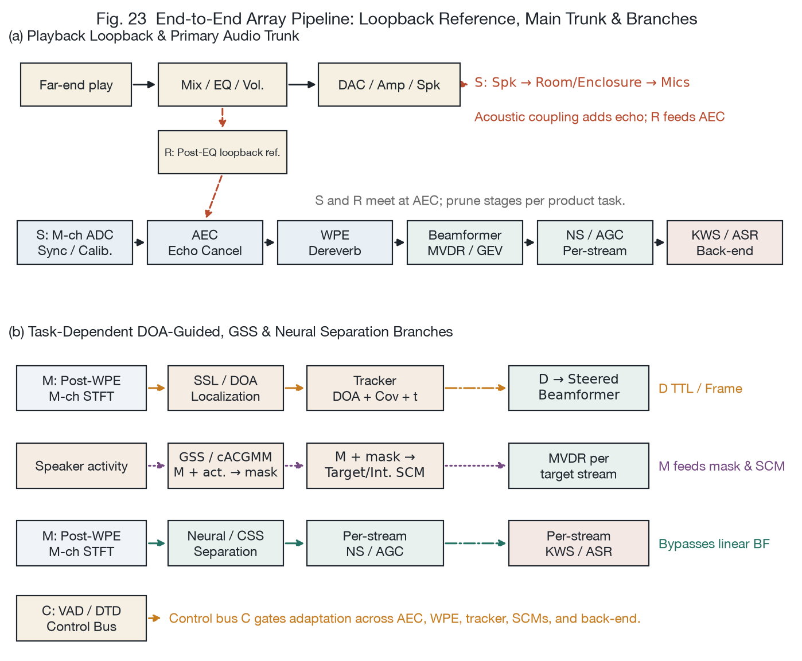
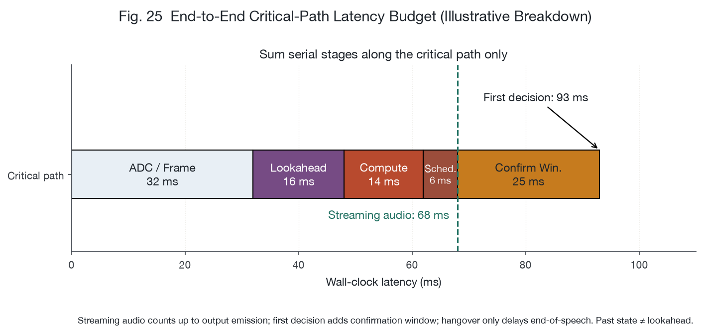
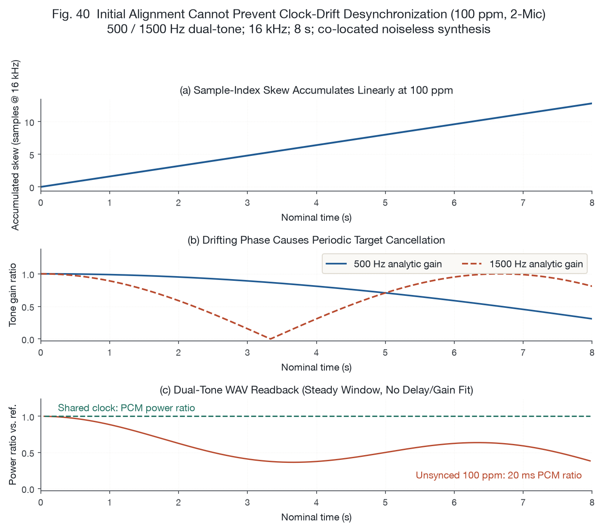
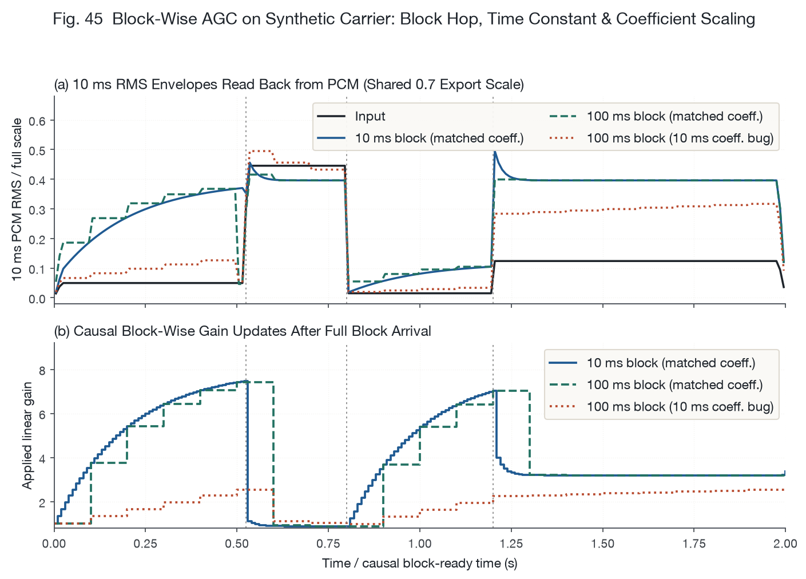
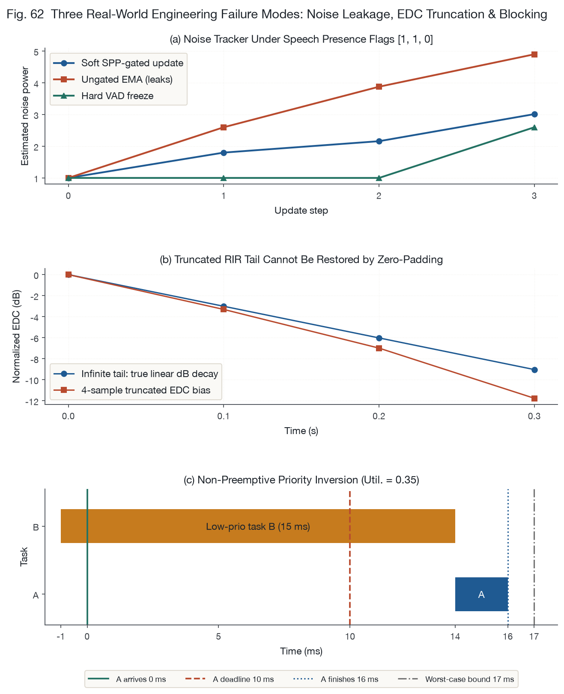
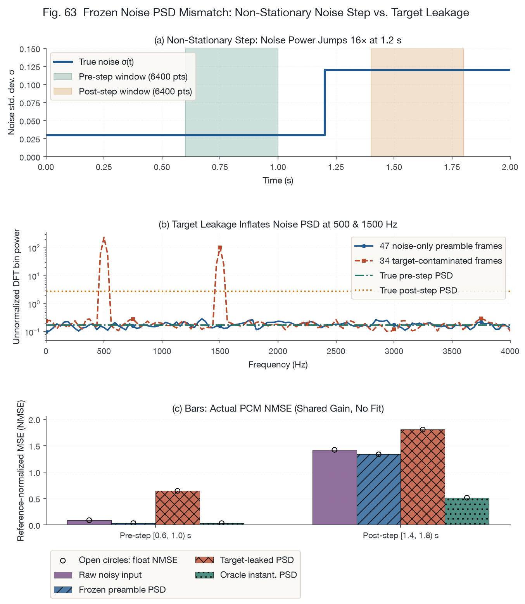
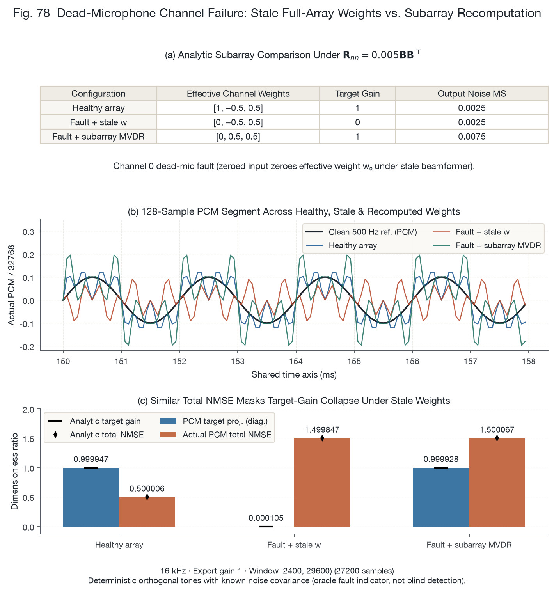

On this page
This chapter is Chapter 10 of the main text; the book comprises 16 chapters across the core chapters and extended topics (Chapters 0–15, where Chapter 0 covers mathematical foundations and Chapters 12–15 are four extended special topics), plus Appendices A and B. This chapter can be read independently; see the navigation links below for the preceding and following chapters.
Overview: 🏠 Course Overview | Previous: Chapter 9 · Sound Source Tracking | Next: Chapter 11 · System Synthesis & Selection Guide
10. Engineering Implementation, Evaluation, and Industrial Practice
Chapters 1–9 examined the principles and algorithms of sound source localization, beamforming, acoustic echo cancellation, dereverberation, speech separation, and source tracking individually. When these modules enter commercial hardware products, end-user experience is governed above all by system-level coupling: in what causal order modules cascade or run in parallel, at which tap point playback references and control states are extracted, how sampling-clock offsets and audio driver buffers erode inter-channel phase and real-time deadlines, how fixed-point word lengths and battery budgets are allocated, and how to build an acceptance suite immune to gaming any single metric. This chapter walks through that complete engineering closed loop; all accompanying mathematically synthesized WAVs and teaching scripts verify arithmetic contracts, timing semantics, and failure boundaries reproducibly, while full-device acoustic and real-time performance must always be validated on target hardware.
Common abbreviations used throughout this chapter are summarized below:
| Abbreviation | Full Name and Engineering Role |
|---|---|
| AFE | Audio Front End: multichannel signal processing and control subsystem between capture and ASR or communication coding |
| AEC | Acoustic Echo Cancellation: suppresses loudspeaker-to-microphone echo using on-device playback references |
| WPE | Weighted Prediction Error dereverberation: predicts and subtracts late reverberation from multi-frame history |
| NS / AGC | Noise Suppression / Automatic Gain Control |
| VAD | Voice Activity Detection |
| KWS / ASR | Keyword Spotting / Automatic Speech Recognition |
| SRO | Sampling Rate Offset: relative clock frequency deviation between independent crystal oscillators |
| SRC | Sample Rate Conversion: remaps discrete samples onto a target sampling clock grid |
| TSE | Target Speaker Extraction: extracts a designated speaker's audio stream conditioned on enrolled voiceprints or directions |
| FIR | Finite Impulse Response: filter computing outputs from linear combinations of finite-length input history |
| RTF | Real-Time Factor: ratio of processing wall-clock time to newly advanced source audio duration |
| STFT | Short-Time Fourier Transform: transforms framed time-domain channels into complex time-frequency coefficients |
| GSS | Guided Source Separation: uses speaker activity timestamps to guide multichannel spatial mask estimation |
| cACGMM | Complex Angular Central Gaussian Mixture Model: directional clustering model commonly used inside GSS |
| SCM | Spatial Covariance Matrix: accumulated from multichannel complex spectra weighted by masks to solve analytic beam weights |
To prevent cross-module ambiguity, RTF in this chapter stands exclusively for Real-Time Factor; the beamforming concept "target relative transfer function" is always written out in full.
10.1 Reference Pipeline and End-to-End Latency
No single universal pipeline fits every industrial audio front end. Figure 23 presents a modular reference architecture designed to clarify physical dependencies between signal streams and statistical estimators—not to mandate enabling every block on every device.
Alongside the classic serial trunk "Synchronized Multichannel Capture → Linear AEC → Multichannel WPE → Analytic Beamforming → Single-Channel NS/AGC → KWS/ASR," spatial and separation cues typically flow along three parallel or alternative branches:
- Localization and tracking branch: extracts multichannel phase or cross-correlation features to emit capture-timestamped directional states and uncertainties to direction-steered analytic beamformers without modifying audio waveforms directly.
- Guided spatial statistics branch (GSS): constrains cACGMM mask estimation via speaker diarization activity intervals, then combines soft TF masks with post-WPE multichannel complex spectra retaining original magnitudes, phases, and physical power scale to accumulate target and interference SCMs for MVDR or GEV beamforming.
- End-to-end neural separation or Continuous Speech Separation (CSS) branch: directly emits one or more separated audio streams downstream of WPE as an alternative main trunk bypassing "Mask → SCM → Analytic Beamforming." When a separator emits concurrent streams, downstream NS/AGC and ASR instances must run independently per stream (or select a target stream first) rather than remixing separated tracks back into mono; if the neural separator already performs denoising and level normalization jointly, ablation tests should decide whether to bypass legacy post-NS/AGC to avoid compounding nonlinear speech distortion.

When reading Fig. 23, trace playback reference tap points and linearity boundaries along Fig. 23(a) first. Far-end downlink audio typically passes through system prompt mixing, parametric equalizers (EQ), dynamic range compression, or user volume scaling before feeding the Digital-to-Analog Converter (DAC) and power amplifier driving the loudspeaker. The AEC reference must be tapped downstream of all digital playback processing and immediately upstream of the DAC and power amplifier, ensuring the adaptive filter sees every prompt mix and volume change reflected in the loudspeaker output; tapping upstream of mixing or volume control mismatches the reference against radiated sound and causes frequent linear AEC divergence.
Keep signal types distinct as well: the playback reference is a continuous waveform stream entering convolutive modeling, whereas near-end/far-end activity flags are Boolean or soft-probability gating metadata—never conflate continuous reference audio and gating metadata into a single "control port" in architecture diagrams.
Inspecting conditional routing and gating in Fig. 23(b), verify port labels on each wire rather than guessing by line color alone. Central control logic fuses near-end voice activity, far-end playback energy, and double-talk status, yet individual modules consume these states in fundamentally different ways—wiring a single VAD bit indiscriminately to every module's "freeze enable" breaks the pipeline! Tailor the pipeline to physical product constraints:
- Pure recording devices and playback-free sensor arrays generate zero self-echo and omit AEC altogether.
- Close-talk headsets or heavily damped cabins with negligible late reverberation skip multichannel WPE matrix inversions.
- Automotive driver-headrest arrays or fixed-seat kiosks with known target geometry use pre-calibrated steering vectors or fixed superdirective weights without real-time DOA tracking.
- VAD, far-end activity detection, and double-talk detection are side-chain state estimators emitting control metadata and should never be drawn as inline waveform-modifying blocks on the audio trunk.
Placing linear AEC at the very front whenever enabled is dictated by linearity: inserting time-varying adaptive beamformers, nonlinear spectral subtraction, or dynamic AGC between capture and AEC turns a stationary (or slowly varying) linear "loudspeaker–room–microphone" convolution path into a rapidly time-varying nonlinear system, collapsing echo cancellation depth. Ordering among WPE, beamforming, and single-channel post-filtering follows channel dimensionality and model contracts: multichannel WPE exploits raw inter-element spatial diversity to predict late reverberation prior to beamforming, whereas single-channel WPE or joint neural dereverberation-beamforming networks sit wherever their training/derivation contracts specify.
10.1.1 Latency Cannot Be Estimated by Summing Every Module's Window or Runtime
End-to-end latency in real-time calling or voice interaction cannot be estimated by summing module window lengths or isolated execution times; instead, decompose critical paths along the Directed Acyclic Graph (DAG) into five physical waiting components:
| Category | Meaning | Typical Sources |
|---|---|---|
| Lookahead / Algorithmic Wait | Future input samples required before emitting current output | Centered windows, bidirectional layers, decision confirmation windows |
| Buffering | Driver, Direct Memory Access (DMA), network, or frame-assembly waits | Audio callback period, jitter buffers, full-chunk inference |
| Compute | Execution time from input readiness to output completion | Fast Fourier Transform (FFT), matrix factorizations, neural inference |
| Scheduling | Time spent ready in queue before running | OS preemption, queue backlog, accelerator contention |
| Decoding & Interaction | Downstream critical path past the AFE | Streaming ASR decoding, network round-trip, TTS playback prep |
The single most common latency accounting bug in audio engineering is equating the analysis window length of causal Weighted Overlap-Add (WOLA / STFT) directly to steady-state algorithmic latency (for STFT overlap-add reconstruction conditions and decibel scales, see Chapter 0, §0.2). Let us audit causal streaming frequency-domain beamforming at $f_s=16\ \mathrm{kHz}$, analysis window $N=512$ samples ($32\ \mathrm{ms}$), and hop size $H=128$ samples ($8\ \mathrm{ms}$):
-
Structural framing latency of causal sliding windows depends on hop size and lookahead, not historical window length: In steady state, the older $N-H=384$ samples ($24\ \mathrm{ms}$) on the left of the window already sit in the circular history buffer! Provided the algorithm never peeks past the current frame's right edge (zero lookahead), accumulating just $H=128$ new samples ($T_{\mathrm{hop}}=H/f_s=8\ \mathrm{ms}$) completes a $512$-sample causal window for FFT, spatial filtering, iFFT, and overlap-add emission of those $128$ new samples.
Pure causal WOLA framing wait is therefore $T_{\mathrm{hop}}=8\ \mathrm{ms}$, not $32\ \mathrm{ms}$; only centered noncausal windows or neural masks looking $K_{\mathrm{look}}$ future frames ahead add $K_{\mathrm{look}}H/f_s$ of algorithmic lookahead latency.
-
Block-period mismatch buffering between audio DMA callbacks and algorithm hop: If the audio driver delivers $B_{\mathrm{io}}=160$-sample ($10\ \mathrm{ms}$) interrupts while the frequency-domain front end steps by $H=128$ samples ($8\ \mathrm{ms}$), non-divisible block sizes induce periodic remainder waits in the intermediate ring buffer (traced callback-by-callback in Exercise E10-08); aligning DMA period directly to $128$ samples ($8\ \mathrm{ms}$) triggers exactly one STFT frame per callback with zero cross-block assembly wait.
Consequently, shrinking a causal STFT window from $32\ \mathrm{ms}$ to $16\ \mathrm{ms}$ while holding hop $8\ \mathrm{ms}$ fixed saves zero milliseconds of steady-state streaming latency (affecting cold-start first-frame fill only) while needlessly sacrificing low-frequency spectral resolution and reverberation span! Likewise, causal predict-then-update WPE, recursive covariance smoothing, Kalman tracker states, and causal AGC states read strictly past history and never add future lookahead latency.
Across a multi-module DAG, denote module $v$'s upstream-input readiness time by $r_v$, completion time by $c_v$, execution time by $s_v$ ($\mathrm{s}$), and direct predecessors by $\mathcal{P}(v)$. Under contention-free true parallel hardware scheduling:
$$ \begin{aligned} r_v&=\max_{u\in\mathcal P(v)}c_u,\\ c_v&=r_v+s_v, \end{aligned} \tag{10-1} $$
seeded at source nodes by capture buffering. For instance, if an audio block ready at $32\ \mathrm{ms}$ feeds two genuinely parallel hardware branches taking $4\ \mathrm{ms}$ and $7\ \mathrm{ms}$ followed by a $3\ \mathrm{ms}$ join node, Eq. (10-1) gives completion at $32+\max(4,7)+3=42\ \mathrm{ms}$, counting the shared $32\ \mathrm{ms}$ capture buffer once; serializing both branches onto a single CPU thread pushes completion out to $32+4+7+3=46\ \mathrm{ms}$ (see Exercise E10-21).
Decomposing causal path $p$ from acoustic input to target endpoint into five non-overlapping waits determines system end-to-end latency via the slowest critical path:
$$ \begin{aligned} L_p&=L_{p,\mathrm{look}}+L_{p,\mathrm{buf}}\\ &\quad+L_{p,\mathrm{comp}}+L_{p,\mathrm{sched}}\\ &\quad+L_{p,\mathrm{decode}},\\ L_{\mathrm{e2e}}&=\max_p L_p, \end{aligned} \tag{10-2} $$
where subscripts $\mathrm{look}$, $\mathrm{buf}$, $\mathrm{comp}$, $\mathrm{sched}$, and $\mathrm{decode}$ correspond to the five categories tabulated above along path $p$ (never adding non-critical side-branch waits).

Reading Fig. 25 from left to right distinguishes latency ledgers across product endpoints: capture/framing buffer ($32\ \mathrm{ms}$), future-frame lookahead ($16\ \mathrm{ms}$), module compute ($14\ \mathrm{ms}$), and scheduling jitter ($6\ \mathrm{ms}$) sum at the green dashed line to $68\ \mathrm{ms}$ continuous streaming audio latency; appending a $25\ \mathrm{ms}$ backend confirmation window reaches $93\ \mathrm{ms}$ first-token decision latency at the purple dashed line. Keep three distinct latency definitions separate:
- Continuous enhanced communication audio (green dashed $68\ \mathrm{ms}$, e.g., uplink PCM fed to a VoIP codec): incurs framing, lookahead, compute, and scheduling waits only, with zero ASR confirmation window;
- KWS wake event or streaming ASR first-token display (purple dashed $93\ \mathrm{ms}$): adds acoustic-model right context and decoder false-alarm confirmation windows atop AFE delivery;
- VAD hangover delay: when speech stops and short-term energy drops, VAD intentionally holds its active flag true for several frames (e.g., $200\ \mathrm{ms}$) to protect trailing unvoiced consonants. That $200\ \mathrm{ms}$ delays end-of-utterance endpointing events only—it never delays real-time waveform samples already streamed out frame by frame!
Formal test reports must never report a bare "mean latency" alone. Steady-state latency tables must report median ($\mathrm{p50}$) alongside tail quantiles ($\mathrm{p95}$, $\mathrm{p99}$), sample count, test duration, and quantile interpolation convention (nearest-rank vs. linear interpolation differences on small samples are worked out in Chapter 11, Exercise E11-04).
Cold-start initialization (checkpoint loading, graph compilation, arena allocation, first-frame warm-up) must be tabulated separately from steady-state streaming; physical measurement boundaries (e.g., "loudspeaker acoustic wavefront at mic diaphragm $\to$ analog headphone onset" vs. "audio driver callback entry timestamp $\to$ first ASR token") as well as power governors and concurrent background load must be documented explicitly.
10.1.2 Real-Time Callback Deadlines and Lock-Free Data Transport
Real-time audio backends (cross-platform PortAudio, macOS/iOS Core Audio, Windows WASAPI, or embedded DMA ISRs) fire callbacks on strict hardware clock ticks. One ironclad rule governs the audio callback thread: finish sample transport and return before the period deadline! Dynamic heap allocation (malloc/new), blocking mutex contention, disk file I/O, formatted logging, or variable-latency neural inference inside a callback risks priority inversion and unbounded stalls, starving hardware buffers (see the official PortAudio real-time callback guidelines).
Production real-time audio stacks decouple lock-free transport from heavy DSP/neural compute across three thread tiers:
- High-priority audio callback thread: executes deterministic memory copies only (interleaved/planar conversion), reads hardware capture/DAC timestamps and overflow flags, and pushes/pops pre-allocated Single-Producer Single-Consumer (SPSC) lock-free ring buffers (ultra-lightweight DSP with $100\%$ static pre-allocation and worst-case runtime far below the period may run inline);
- DSP / model-inference worker thread: pulls hop-sized blocks from the input ring buffer, runs AEC, WPE, beamforming, and ASR/KWS, and writes enhanced audio into the output ring buffer;
- Low-priority telemetry thread: asynchronously aggregates deadline misses, dropped-sample counts, and queue high-water marks without ever blocking real-time paths.
Under variable-size host callbacks where frameCount varies per invocation, read/write cursors must advance strictly by actual frameCount while tracking global sample intervals for both captured inputs and committed outputs so asynchronous worker completions map output samples back to exact input capture timestamps (see PortAudio 19.7.0 portaudio.h timestamp/status docs and Exercise E10-17).
When burst load fills a ring buffer, architecture must choose explicitly among "drop oldest unread block," "drop newest arriving block," or "graceful compute bypass (e.g., skipping heavy neural post-filtering to emit linear beamformer output directly)": silent drops tear FIR history and phase continuity, blocking stalls the capture driver, and unbounded queues permanently inflate interactive latency!
Our teaching baseline RingBuffer implements deterministic "drop oldest and increment dropped" semantics, while simulate_deadline_queue separates per-frame deadline misses, queue high-water mark, and full-queue frame drops on a serial worker (releasing completed slots before admitting simultaneous arrivals and counting exact-deadline completion as on-time; integer-tick verification in Exercise E10-16). Hardware bring-up must also monitor driver playback underruns (DAC starved) and capture overruns (ADC unread), collectively termed xrun in Linux audio.
On embedded/gateway Linux systems, ALSA (Advanced Linux Sound Architecture) distinguishes interruption causes via negative error codes: -EPIPE signals capture overrun or playback underrun, -ESTRPIPE signals hardware suspend (distinct from VAD hangover!), -ENODEV signals physical device disconnect, and virtual echo-reference plugins may return -ENODATA before linked playback starts (see official ALSA PCM documentation). Recovery must match the error code: attempt snd_pcm_resume on -ESTRPIPE before falling back to snd_pcm_prepare, while waiting for playback readiness on -ENODATA outside snd_pcm_recover.
Crucially, "driver recovery succeeded" never implies "the physical sample timeline remained gapless": although snd_pcm_resume may preserve unread hardware FIFO samples across suspend, independent crystal oscillators keep ticking during suspend so cross-device clock offsets jump! Record an integer dropped-sample count only when hardware frame counters or monotonic timestamps prove an exact $N$-sample gap; whenever gap length is unrecoverable, log dropped_samples = null and explicitly notify AEC, SRC, and WPE to realign or reset history.
On mobile platforms (especially Android phones, tablets, and automotive head units), a notorious low-level trap routinely costs algorithm teams weeks of debugging: hidden preprocessing enabled silently inside the OS Hardware Abstraction Layer (HAL). Opening multichannel capture on Android with default presets (MediaRecorder.AudioSource.VOICE_RECOGNITION or VOICE_COMMUNICATION) causes many SoC audio HALs to silently insert proprietary single-mic AGC, high-pass filters, NS, or fixed beamformers. Opaque per-channel nonlinear gains and phase shifts destroy raw inter-microphone phase differences and linear echo paths, collapsing custom MVDR nulls and spiking AEC residuals! When capturing raw arrays via C++ Oboe or native AAudio on Android, lock down a clean path in three mandatory steps:
- Query
AudioManager.PROPERTY_SUPPORT_AUDIO_SOURCE_UNPROCESSEDfirst to verify true firmware unprocessed support; - Explicitly request
oboe::InputPreset::UnprocessedalongsidePerformanceMode::LowLatencyandSharingMode::Exclusive(re-benchmarking callback periods if downgraded toShared); - Run a startup quiet-floor and sine-sweep self-test checking per-channel spectral flatness, magnitude/phase match, and absence of hidden high-SPL gain compression before feeding raw Pulse-Code Modulation (PCM) into your front end.
Combining data dependencies and real-time contracts yields the full-system integration checklist:
| Module | Enable Condition | Primary Inputs | Primary Outputs | Top Priority Checks |
|---|---|---|---|---|
| Capture & Sync | Multichannel timing preservation required | Microphones, clocks | Aligned multichannel PCM samples | Channel map, clipping, frame drops, relative delay |
| AEC | On-device playback couples into mics | Mics; post-mix/EQ/volume pre-DAC/amp reference; far-end/double-talk flags | Echo-suppressed mic channels, residual echo & adaptation state | Reference covers mix/EQ/volume; bulk delay, clipping, double-talk stability |
| WPE | Late reverberation degrades downstream task | Multichannel or mono STFT | Dereverberated STFT | Prediction delay, tap order, target speech distortion |
| Localization / Tracking | Beamformer or app requires DOA / tracks | Multichannel features, activity flags, capture time | Frame ID, capture/state/publish timestamps, state & cov, activity/existence prob., track_id & validity |
Coordinate conventions, stale extrapolation, miss/FA, ID lifecycle (see §9.4) |
| GSS Mask Estimation | Speaker activity known for multi-speaker spatial extraction | Diarization segments; post-WPE multichannel STFT | Per-target soft TF masks, effective frame count | Diarization misalignment, mask leakage, target-silent frames |
| Target / Interference SCM | Soft masks available on matching TF grid | Unnormalized post-WPE multichannel STFT; target/non-target masks | Per-bin target & interference SCMs, $N_{\mathrm{eff}}$, condition number | Matching time/freq/channel indexing; masks are not SCMs |
| Analytic Beamforming | Convert spatial statistics into target stream | Same-stage multichannel STFT; SCMs or steering vectors | Per-target enhanced stream, beam weights & apply timestamp | Steering mismatch, ill-conditioned SCMs, target cancellation |
| Neural Sep / CSS / TSE | Overlapped multi-stream or enrolled target extraction | Multichannel features; optional voiceprint, visual, or DOA conditioning | Fixed/dynamic output streams or single target track | Lookahead context, first-chunk latency, cross-chunk stitching, identity leakage, domain shift |
| NS / AGC | Residual noise or dynamic range impacts backend | Enhanced mono stream | Denoised, level-regulated audio | Speech distortion, gain pumping, inter-sample clipping |
| KWS / ASR | Wake-word detection or speech-to-text required | Audio waveform or features | Wake events or transcripts | Tap point, pre-roll buffer, FA/h vs. FRR, WER |
Across rows 5–7 above, keep the three intermediate objects of GSS strictly distinct: diarization segments constrain soft TF masks, soft masks weight unnormalized multichannel outer products into target/interference SCMs, and analytic beamformers solve spatial filter weights from SCMs to emit mono audio—interface specs must state explicitly whether masks, covariances, or waveforms cross each boundary.
10.2 Acoustic Pickup, Synchronization, and Gain Staging
Hardware pickup sets the physical ceiling of every downstream array algorithm. Selecting Micro-Electro-Mechanical Systems (MEMS) microphones requires jointly auditing five electro-acoustic specs: Equivalent Input Noise (EIN, or SNR at $94\ \mathrm{dB\ SPL}$), Acoustic Overload Point (AOP), sensitivity tolerance, frequency-response flatness (low-frequency roll-off corner and high-frequency Helmholtz port resonance), and lot-to-lot magnitude/phase matching. Bare-component datasheet numbers never substitute for full-enclosure acoustic verification—acoustic port length/diameter, protective mesh damping, gasket air leaks, and power-rail ripple all alter inter-element magnitude and phase substantially!
Acoustic Overload Point (AOP) specifies the incident SPL at which microphone Total Harmonic Distortion (THD) hits a stated percentage under rated excitation frequency and supply voltage. Always align THD thresholds and frequencies when comparing datasheets: for instance, TDK's official MMICT4078-00-908 specification lists both $135\ \mathrm{dB\ SPL}$ at $10\%\ \mathrm{THD}$ and $130\ \mathrm{dB\ SPL}$ at $1\%\ \mathrm{THD}$ ($1\ \mathrm{kHz}$), while Analog Devices Application Note AN-1328 specifies $131\ \mathrm{dB\ SPL}$ at $10\%\ \mathrm{THD}$ for the ADMP411. Once close-range clapping or loud playback drives the diaphragm or preamplifier nonlinear, harmonic distortion is baked in before digitization—widening digital formats to 24-bit integer or 32-bit float preserves internal DSP headroom, but can neither raise physical mic AOP nor undo analog clipping!
At the digital microphone bus layer—Pulse-Density Modulation (PDM), Inter-IC Sound (I²S), and Time-Division Multiplexing (TDM)—diagnosing elevated high-frequency noise floors or skewed endfire nulls requires unpacking 1-bit $\Sigma\Delta$ PDM modulation through $\mathrm{Sinc}^N$ CIC decimation. For PDM bit clock $f_{\mathrm{PDM}}$, decimation factor $R$, differential comb delay $M$ (typically $M=1$), cascade order $N$, and normalized digital radian frequency $\Omega_{\mathrm{d}}=2\pi f/f_{\mathrm{PDM}}$, the unscaled $N$-stage Cascaded Integrator-Comb (CIC) transfer function, overflow-free register width $B_{\max}$, normalized magnitude response $|\widetilde H_{\mathrm{CIC}}(f)|$, and linear-phase group delay $\tau_g$ are:
$$ \begin{aligned} H_{\mathrm{CIC}}(z) &=\left(\frac{1-z^{-RM}}{1-z^{-1}}\right)^N,\\ B_{\max} &=B_{\mathrm{in}}+\left\lceil N\log_2(RM)\right\rceil,\\ \left|\widetilde H_{\mathrm{CIC}}(f)\right| &=\left|\frac{\sin(\pi fRM/f_{\mathrm{PDM}})} {RM\sin(\pi f/f_{\mathrm{PDM}})}\right|^N,\\ \tau_g &=\frac{N(RM-1)}{2f_{\mathrm{PDM}}}. \end{aligned} $$
Hardware bring-up and SoC PDM peripheral configuration must verify three exact budgets from these four equations:
-
Oversampled noise shaping and Hogenauer accumulator bit width: Inside a digital PDM mic, an ASIC runs a high-order $\Sigma\Delta$ modulator at bit clock $f_{\mathrm{PDM}}=R f_s$ (e.g., $3.072\ \mathrm{MHz}$ for $f_s=48\ \mathrm{kHz}, R=64$; or $1.024\ \mathrm{MHz}$ for $f_s=16\ \mathrm{kHz}, R=64$), emitting a 1-bit ($B_{\mathrm{in}}=1\ \mathrm{bit}$) stream pushing quantization noise to high frequencies. The host SoC PDM peripheral applies a multiplier-free $N$-stage CIC decimator first.
Because integrator stages rely on two's-complement modulo wrap-around, DC peak gain is $G_{\max}=(RM)^N$, demanding exact register growth $\lceil N\log_2(RM)\rceil$ bits. Single-stage $\mathrm{Sinc}^4$ ($N=4, M=1$) decimating directly by $R=64$ requires $B_{\max}=1+4\times 6=25\ \mathrm{bit}$! A signed $24\ \mathrm{bit}$ hardware accumulator wraps and pops violently at high SPL, whereas a two-stage architecture decimating first by $R_1=16$ ($1+4\times 4=17\ \mathrm{bit}$) followed by half-band FIR stages leaves ample headroom (see Exercise E10-35).
-
High-frequency shaped-noise aliasing suppression and passband droop: A fourth-order $\Sigma\Delta$ modulator ramps quantization noise PSD upward at $24\ \mathrm{dB/octave}$, requiring CIC order $N\ge L_{\Sigma\Delta}+1$ (or $\mathrm{Sinc}^4$ down to $2f_s\text{--}4f_s$ followed by sharp half-band low-pass FIRs) lest high-frequency shaped noise fold back into the audio band.
Meanwhile, single-stage high-$R$ CICs suffer steep passband droop: at $f_s=16\ \mathrm{kHz}, R=64, M=1$ ($f_{\mathrm{PDM}}=1.024\ \mathrm{MHz}$), $f=7\ \mathrm{kHz}$ ($\Omega_{\mathrm{d}}=7\pi/512$) has exact single-stage gain $\sin(7\pi/16)/[64\sin(7\pi/1024)]\approx 0.713640$ ($-2.930\ \mathrm{dB}$; continuous $\operatorname{sinc}(7/16)$ gives $-2.931\ \mathrm{dB}$), compounding across $\mathrm{Sinc}^4$ to $-11.72\ \mathrm{dB}$ (exact $-11.7216\ \mathrm{dB}$)! Industrial PDM peripherals therefore decimate by $R_1=16$ first (where $3.072\ \mathrm{MHz}$ $\mathrm{Sinc}^4$ droops just $-0.0757\ \mathrm{dB}$ at $7\ \mathrm{kHz}$ with $\tau_g=9.765625\ \mu\mathrm{s}$) before cascading half-band droop-compensation FIRs and DC-blocking high-pass filters.
-
Half-clock-cycle edge skew on stereo-multiplexed PDM data lines: Hardware designs routinely multiplex Left and Right digital mics onto a single
PDM_DATAwire andPDM_CLK—latching Left on rising clock edges and Right on falling edges. Though frequency-locked with zero long-term drift, their physical sampling instants differ permanently by half a bit-clock period $\Delta t_{\mathrm{PDM}}=1/(2f_{\mathrm{PDM}})$!At $f_{\mathrm{PDM}}=1.024\ \mathrm{MHz}$, $\Delta t_{\mathrm{PDM}}\approx 0.4883\ \mu\mathrm{s}$ ($\approx 0.1675\ \mathrm{mm}$ path offset at $c=343\ \mathrm{m/s}$, or $\Delta\phi=2\pi f\Delta t_{\mathrm{PDM}}\approx 1.406^\circ$ at $8\ \mathrm{kHz}$); even at $f_{\mathrm{PDM}}=3.072\ \mathrm{MHz}$ ($\Delta t_{\mathrm{PDM}}\approx 162.76\ \mathrm{ns}$), uncompensated half-cycle skew on a $12\ \mathrm{mm}$-spaced first-order differential cardioid endfire pair pulls the $180^\circ$ rear null off by over $5.5^\circ$ (derived in Exercise E10-35)! Unless the SoC PDM controller enables hardware half-cycle de-skewing, array calibration filters must compensate this fixed group-delay offset explicitly.
10.2.1 SRO: Separating Initial Offset from Sampling-Rate Offset
When loudspeaker playback and microphone capture run off independent crystal oscillators (e.g., a laptop pairing a USB mic with a Bluetooth speaker, or ad-hoc wireless multi-device arrays), the two clock domains exhibit not only a fixed startup offset, but a continuously growing Sampling Rate Offset (SRO). For nominal reference rate $f_s$ and actual device rate $f_d=f_s(1+\varepsilon)$ ($\varepsilon>-1$ dimensionless), align $n=0$ at zero offset and inspect sample index $n$: its reference timestamp is $T=n/f_s$ whereas its actual physical device capture instant is $n/f_d$. Under our unified "reference time minus device time" sign convention, cumulative drift at index $n$ is:
$$ \begin{aligned} \Delta t(T)&=\frac{n}{f_s}-\frac{n}{f_d}\\ &=\frac{\varepsilon}{1+\varepsilon}T\\ &\approx\varepsilon T\quad(|\varepsilon|\ll1). \end{aligned} \tag{10-3} $$
Crystal tolerances are measured in parts per million ($\mathrm{ppm}$, $1\ \mathrm{ppm}=10^{-6}$). A typical consumer tolerance of $\varepsilon=100\ \mathrm{ppm}$ slips by $\approx 100\ \mu\mathrm{s}$ every second, accumulating $\approx 60\ \mathrm{ms}$ over $10\ \mathrm{min}$ ($600\ \mathrm{s}$); because a faster device ($\varepsilon>0$) captures sample $n$ earlier ($n/f_d \lt n/f_s$), Eq. (10-3) yields positive drift. Note that $60\ \mathrm{ms}$ is cumulative index slip after $10\ \mathrm{min}$, not a $60\ \mathrm{ms}$ acoustic TDOA within a single frame. Even tens of $\mathrm{ppm}$ wreak havoc simultaneously on linear AEC and multi-microphone beamforming:
- Impulse creep and phase-cancellation ceiling in linear AEC: At $f_s=16\ \mathrm{kHz}$ and $\varepsilon=100\ \mathrm{ppm}$, playback and capture slip by $f_s\varepsilon=1.6$ samples/s—shifting the entire room impulse response by $1$ full tap every $0.625\ \mathrm{s}$! Worse still is sub-sample phase mismatch at high frequencies: even if adaptive step sizes chase frantically, lagging just $0.1$ sample ($\Delta\tau=6.25\ \mu\mathrm{s}$) behind the true impulse peak creates phase error $\Delta\phi=2\pi f\Delta\tau=0.05\pi\ \mathrm{rad}$ ($9^\circ$) at $f=4\ \mathrm{kHz}$, capping coherent cancellation $20\log_{10}|1-e^{-\mathrm{j}0.05\pi}|$ at $\approx -16.1\ \mathrm{dB}$ ERLE before the echo peak eventually slides clean out of the finite FIR window!
- Time-varying high-frequency comb cancellation in asynchronous beamforming: Across two mics in clock domains separated by SRO, inter-channel phase drift $\Delta\phi(f,T)=2\pi f\,\Delta t(T)$ grows bilinearly in $f$ and $T$. After just $T=1\ \mathrm{s}$ ($\Delta t\approx 100\ \mu\mathrm{s}$), a $1\ \mathrm{kHz}$ component loses barely $0.44\ \mathrm{dB}$ while $4\ \mathrm{kHz}$ sibilants approach $144^\circ$ phase opposition, slashing target power by over $10\ \mathrm{dB}$ under equal-weight summing (derived in Exercise E10-22) and turning fixed/slow beamformers into time-sweeping comb filters!
First law of audio hardware architecture: never go asynchronous when a shared clock is possible! Drive all ADCs and loopback DACs inside an enclosure from a single master clock (MCLK/BCLK), and use hardware clock locking (PTP/AVB) on networked pro-audio gear; reserve software "online SRO estimation $\to$ fractional-delay asynchronous SRC $\to$ closed-loop thermal drift tracking" strictly for genuinely clock-independent devices.
Clock-Drift Waveforms and Time Axes
Figure 40 and the clock_drift group in the master audio manifest construct a deterministic $8\ \mathrm{s}$, nominal-$16\ \mathrm{kHz}$ two-device benchmark with $+100\ \mathrm{ppm}$ device clock offset, evaluating the exact same continuous acoustic waveform at each device's true physical sampling instants (never faking drift via stereo panning!). At nominal $8\ \mathrm{s}$, the faster device captures its matching sample index at $8/(1+10^{-4})\ \mathrm{s}$, accumulating $\approx 0.79992\ \mathrm{ms}$ ($12.799$ reference samples; exact lengths and gains in the master manifest).

Reading the three panels of Fig. 40 from top to bottom traces asynchronous destructive interference:
- Panel (a) plots linear sample slip $\Delta t(T)\times 16\,\mathrm{kHz}$ climbing to $\approx 12.8$ samples over $0\text{--}8\ \mathrm{s}$;
- Panel (b) contrasts analytic coherent-sum envelopes $|\cos(\pi f\Delta t)|$ at $500\ \mathrm{Hz}$ vs. $1500\ \mathrm{Hz}$: because phase scales with $f$, $1500\ \mathrm{Hz}$ plunges into its first complete anti-phase null at $t\approx 3.33\ \mathrm{s}$ while $500\ \mathrm{Hz}$ rolls off gently;
- Panel (c) computes $20\ \mathrm{ms}$ block power ratios from the published two-tone
PCM16WAVs relative to the synchronized baseline (green dashed line at $1$), exposing periodic power dropouts—whenever field recordings exhibit rhythmic volume pulsing or periodic high-frequency muffling on a multi-mic beamformer, check unsynchronized clock domains first rather than mistaking beat-frequency cancellation for "noise suppression"!
Diagnosing real recordings requires separating initial offset $b$, steady SRO slope $\widehat{s}$, and dropped-buffer step jumps: on a "time vs. relative delay" scatter plot, startup offset sets intercept $b$, crystal frequency offset sets slope $\widehat{s}$, and driver xrun drops that pack subsequent samples contiguously inject vertical step discontinuities! Differencing only the first and last frames of a recording produces wildly corrupted SRO estimates whenever a single drop occurs mid-session; robust estimators extract windowed cross-correlation peaks, screen adjacent-window residuals for step jumps (cross-checked against hardware frame counters and xrun logs), and fit linear regressions strictly within contiguous gap-free segments.
Our helper estimate_sro_ppm fits $\widehat{d}(T)=b+\widehat{s}T$ against reference time $T$ ($\mathrm{s}$) under "reference minus device" sign convention. Matching exact $\Delta t(T)=\frac{\varepsilon}{1+\varepsilon}T$ in Eq. (10-3) for constant rate $\widehat{s}\lt 1$ gives exact and first-order SRO inversions:
$$ \begin{aligned} \widehat\varepsilon&=\frac{\widehat s}{1-\widehat s},\\ \mathrm{ppm}_{\mathrm{exact}}&=10^6\widehat\varepsilon,\\ \mathrm{ppm}_{\mathrm{first}}&=10^6\widehat s. \end{aligned} \tag{10-4} $$
At $\widehat{s}=10^{-4}$, first-order gives $100\ \mathrm{ppm}$ while exact inversion gives $10^6\times 10^{-4}/0.9999\approx 100.010\ \mathrm{ppm}$; intercept $b$ captures startup offset without entering rate ratios, while Exercise E10-12 quantifies slope corruption from an unscreened $1\ \mathrm{ms}$ drop jump.
Offline teaching helper resample_sro_to_reference guards output length against memory caps ($10^7$ samples/ch default) before applying two-point linear interpolation to verify rate direction; because two-point linear interpolation suffers steep high-frequency droop and weak stopband rejection, downsampling requires anti-aliasing polyphase or polynomial filters (aliasing foldback shown in Fig. 41 and Exercise E10-25).

Special Topic: Rate Direction, Unconsumed Remainders, and Gap Propagation in Stateful SRC
Streaming pipelines must carry sub-sample fractional phase and filter history seamlessly across thousands of chunk callbacks. For device sample $0$ at physical time $t_0$, actual device rate $f_d$, and target reference rate $f_s$, reference output sample $k$ at time $k/f_s$ lands on continuous input index $u_k$, integer base index $q_k$, and fractional remainder $\eta_k\in[0,1)$:
$$ \begin{aligned} u_k&=f_d\left(\frac{k}{f_s}-t_0\right),\\ q_k&=\lfloor u_k\rfloor,\quad \eta_k=u_k-q_k,\\ y[k]&=(1-\eta_k)x[q_k]\\ &\quad+\eta_k x[q_k+1]. \end{aligned} \tag{10-5} $$
Two-point linear interpolation in the final line makes cross-chunk boundary and missing-sample semantics transparent: $\eta_k=0$ hits exact $x[q_k]$, whereas $0\lt \eta_k\lt 1$ requires both $x[q_k]$ and $x[q_k+1]$—if $q_k+1$ belongs to the next chunk not yet arrived, the resampler must pause emission and retain trailing samples for the next call, never resetting fractional phase to zero at chunk boundaries! Whenever a packet drop marks an input sample missing, affected outputs must be flagged invalid (None) rather than interpolating blindly across gaps (worked out by hand in Exercise E10-24).
Why do wideband arrays and high-ERLE AEC systems use Farrow polynomial fractional-delay structures or polyphase filterbanks rather than Eq. (10-5)'s two-point linear interpolator? Two-point linear interpolation has a triangular continuous impulse response whose $\operatorname{sinc}^2$ spectrum droops severely above $4\ \mathrm{kHz}$ while leaking spectral images back into the passband, whereas recomputing windowed-$\operatorname{sinc}$ taps via transcendental calls at every drifting $\eta_k$ is computationally prohibitive.
The Farrow fractional-delay filter resolves both issues cleanly: approximating each tap $h_m(\eta_k)$ of an $M_{\mathrm{fd}}$-tap fractional-delay FIR over $\eta_k\in[0,1)$ by a degree-$P$ polynomial (e.g., cubic Lagrange or least-squares $P=3$), swapping summation order, and evaluating via Horner's nested scheme:
$$ \begin{aligned} h_m(\eta_k)&=\sum_{p=0}^{P}c_{p,m}\eta_k^p,\\ v_p[q_k]&=\sum_{m}c_{p,m}x[q_k-m],\\ y[k]&=\sum_{p=0}^{P}\eta_k^p\,v_p[q_k]\\ &=\bigl(\cdots\bigl((v_P[q_k]\eta_k +v_{P-1}[q_k])\eta_k\bigr)+\cdots\bigr)+v_0[q_k]. \end{aligned} $$
Hardware efficiency is striking: the $P+1$ subfilter tap banks $c_{p,m}$ are completely independent of time-varying $\eta_k$ and sit fixed in ROM, updating $v_0[q_k],\dots,v_P[q_k]$ per input sample while each output sample $k$ costs just $P$ scalar MACs in Horner's rule to track continuously drifting SROs with flat passband magnitude and smooth group delay!
When integrating production open-source SRC libraries, verify ratio direction, unconsumed input remainder handling, and end-of-stream draining upfront:
-
libsamplerate(src_process): defines ratio as "output sample rate / input sample rate" (officiallibsampleratefull API docs). Aligning a $+100\ \mathrm{ppm}$ fast capture device to nominal reference passes $1/1.0001\approx 0.99990001$; inspect returnedinput_frames_usedandoutput_frames_genon every call, carrying unconsumed tail frames into the next chunk.In our two-segment variable-SRO
libsamplerateprobe ($+100\ \mathrm{ppm}$ over $0\text{--}5\ \mathrm{s}$, stepping to $+150\ \mathrm{ppm}$ over $5\text{--}10\ \mathrm{s}$), uncompensated pulse markers drifted $16$ frames across $1\text{--}9\ \mathrm{s}$, whereas updating known ratios online reduced residual drift to $0$ frames. -
Closed-loop estimation, chunked interpolation, and gap isolation:
sro_closed_loop_demo.pychains timestamp regression with stateful $257$-sample chunked resampling at $2000\ \mathrm{Hz}$ reference, $+150\ \mathrm{ppm}$ fast device, $2\ \mathrm{ms}$ initial delay, and a $1$-sample drop at device index $12{,}000$. Nine anchor timestamps over $0\text{--}2\ \mathrm{s}$ ($t_n=0.002+n/2000.3\ \mathrm{s}$) recover intercept $-2\ \mathrm{ms}$ and slope $150\times 10^{-6}/(1+150\times 10^{-6})$ (first-order $149.9775\ \mathrm{ppm}$, exact Eq. (10-4) $150\ \mathrm{ppm}$) while timestamp differencing isolates the drop without corrupting slope.Stateful $257$-sample chunked resampling flags gap-straddling reference indices $12{,}002, 12{,}003$ invalid (
None), cutting waveform MSE against analytic truth over the $6000$ pre-gap and $9000$ post-gap samples from $0.02869, 0.02131$ down to $2.773\times 10^{-6}$ and $2.477\times 10^{-6}$. -
Inverted ratio convention in
libsoxr(soxr_set_io_ratio): Switching tolibsoxrflips the ratio definition to "input sample rate / output sample rate" (officiallibsoxr5-variable-rate.cexample)—the exact same $+100\ \mathrm{ppm}$ fast input requires passing $1.0001$ rather than $0.99990001$, so passing thelibsamplerateratio by habit doubles the clock drift!In our
libsoxr 0.1.3variable-rate probe (nominal $48\ \mathrm{kHz}$ input $+100\ \mathrm{ppm}$ for $5\ \mathrm{s}$ then $+150\ \mathrm{ppm}$ for $5\ \mathrm{s}$ totaling $480{,}060$ frames downsampled to $16\ \mathrm{kHz}$, slewing to the new ratio over $160$ output frames $=10\ \mathrm{ms}$ at frame $80{,}000$), keeping the stale ratio emitted $160{,}004$ frames with the $9\ \mathrm{s}$ marker at $144{,}005$, whereas updating the ratio and draining restored $160{,}000$ frames with the $9\ \mathrm{s}$ marker at $144{,}002$ ($0$ drift after subtracting the filter's fixed $2$-frame group delay), matching $127$-frame streaming against full-buffer processing sample-for-sample with step vs. $160/320$-frame slew peak differences of $\approx 6.25\times 10^{-4}$ and $1.25\times 10^{-3}$ (see thelibsoxrratio-slewing and delay audit).
10.2.2 Gain Changes and AEC Stability
Second only to SRO in destabilizing linear AEC are analog or digital gain jumps. Trace gain stages relative to the reference tap point on the hardware schematic first: digital system volume changes upstream of the reference tap scale both reference and radiated sound equally, requiring zero AEC tap re-convergence; conversely, analog power-amplifier gain steps downstream of the reference tap or microphone Programmable Gain Amplifier (PGA) step changes alter the effective echo-path gain seen by AEC, forcing re-convergence unless control firmware rescales filter taps in exact lockstep.
Adaptation control must never lump analog clipping, near-end double-talk, and physical echo-path changes (moving the speaker, opening a glass conference door, hand occlusion) under a single "shrink step size" heuristic: clipping injects odd harmonics requiring tap freeze plus playback limiter backoff; double-talk requires DTD or robust error normalization to freeze/slow adaptation lest near-end speech be canceled; whereas genuine acoustic path changes require opening up step sizes or switching shadow filters for rapid re-convergence—mistaking a path change for double-talk locks stale taps and leaves loud echo ringing!
On the spatial array side, factory and field calibration cover relative sensitivity, fixed channel group delays, and element position tolerances. Following Chapter 2, §2.3's far-field plane-wave convention, for element mounting displacement error $\Delta\vec{r}\in\mathbb{R}^3$ ($\mathrm{m}$) relative to nominal design coordinates, sound speed $c$ ($\mathrm{m/s}$), and unit source look vector $\vec{u}$ ($\|\vec{u}\|=1$), steering phase error $\Delta\phi$ ($\mathrm{rad}$) at frequency $f$ ($\mathrm{Hz}$) and its Cauchy–Schwarz bound are:
$$ \begin{aligned} \Delta\phi&=\frac{2\pi f}{c}\Delta\vec r^{\top}\vec u,\\ |\Delta\phi|&\le\frac{2\pi f}{c}\|\Delta\vec r\|. \end{aligned} \tag{10-6} $$
Two mechanical tolerance design rules follow immediately: first, far-field phase error depends solely on line-of-sight projection $\Delta\vec{r}^\top\vec{u}$, vanishing when $\Delta\vec{r}\perp\vec{u}$ (near-field spherical waves still require range/attenuation checks); second, worst-case phase error scales linearly with $f$. At $\|\Delta\vec{r}\|=0.5\ \mathrm{mm}$, $f=4\ \mathrm{kHz}$, and $c=343\ \mathrm{m/s}$, collinear displacement reaches $360^\circ\times 4000\times 0.0005/343\approx 2.1^\circ$ (Exercise E10-11)—benign for delay-and-sum, yet capable of causing noticeable target self-cancellation in high-order superdirective differential arrays or unregularized MVDR!
Production array calibration should follow a four-step traceable protocol:
- Verify physical port-to-software channel mapping (tap/point-source port scan) and sync timestamps before playing broadband log sweeps across known turntable angles;
- Decompose relative gains, integer/fractional delays, and frequency-dependent cavity magnitude/phase residuals, verifying effective acoustic centers;
- Bind calibration tables to device serial number, sample rate, ambient temperature, and date in non-volatile memory;
- Validate mainlobe gain, sidelobe levels, and DOA accuracy on held-out angles excluded from fitting, invalidating old tables automatically whenever acoustic meshes, gaskets, mic part numbers, or housing molds change.
10.3 Noise Suppression, Control Logic, and Wake-Word Branches
10.3.1 Single-Channel NS Methods and Operating Boundaries
In modular front ends, single-channel Noise Suppression (NS) sits downstream of mono beamformer output: running once rather than $M$ times cuts compute by $1/M$, and sitting downstream of linear AEC and spatial filtering prevents nonlinear time-varying gains from corrupting echo-path identification or inter-mic phases (end-to-end multichannel neural enhancers or dedicated DOA pre-cleaning branches follow their own training contracts). Major single-channel NS families compare as follows:
| Method | Core Mechanism | Primary Engineering Risk |
|---|---|---|
| Spectral Subtraction | Subtracts estimated noise PSD from noisy PSD | Low spectral floor creates musical-noise tonal artifacts |
| Wiener Filtering | Sets per-bin gain from estimated SNR | Lagging noise and a priori SNR tracking |
| Subspace Methods | Splits signal-plus-noise principal subspace from noise subspace | Rank selection sensitivity and eigendecomposition cost |
| Minimum Mean-Square Error Short-Time Spectral Amplitude (MMSE-STSA) | Minimizes MSE of linear spectral magnitudes | Statistical distribution and parameter mismatch |
| Minimum Mean-Square Error Log-Spectral Amplitude (MMSE-LSA) | Minimizes MSE of log-spectral magnitudes | Target speech distortion at very low SNR |
| Neural Masking / Mapping | Learns spectral or waveform mappings from corpora | Out-of-domain noise artifacts and phonetic hallucinations |
Three practical distinctions stand out:
- Linear vs. log-spectral distortion: MMSE-LSA penalizes log-magnitude errors matching human loudness perception, leaving smoother residual background than linear MMSE-STSA at low SNR.
- Subspace covariance assumptions: Subspace eigendecomposition separates speech only when short-term speech correlation substantially exceeds near-white noise across ample snapshots, struggling under colored interference or short windows.
- Continuous noise tracking: Modern estimators track nonstationary noise continuously during speech via minimum tracking, soft speech-presence probabilities, or neural masks rather than binary VAD-only updates.
10.3.2 Power Spectral Subtraction: Tracing One Bin from Input to Output
Let us trace classical power spectral subtraction completely at a single bin. Given mono additive $y[n]=s[n]+v[n]$ with short-time stationary noise $v[n]$ and known initial noise-only frame set $\mathcal{N}$, compute $512$-point periodic-Hann, $128$-hop STFT coefficients $Y_{f,t}$ and average $|Y_{f,\tau}|^2$ over $\tau\in\mathcal{N}$ under identical window/FFT scaling to obtain noise PSD estimate $D_f$.
Why doesn't subtracting exact mean noise power $D_f$ from $|Y|^2$ recover clean $|S|^2$ bin by bin? Dropping subscripts and expanding $Y=S+V$:
$$ \begin{aligned} Y&=S+V,\\ |Y|^2&=(S+V)(S^*+V^*)\\ &=|S|^2+|V|^2\\ &\quad+2\operatorname{Re}(SV^*). \end{aligned} \tag{10-7} $$
Even when zero-mean uncorrelated $S$ and $V$ satisfy ensemble $\mathbb{E}[SV^*]=0$ and $\mathbb{E}[|Y|^2]=\mathbb{E}[|S|^2]+\mathbb{E}[|V|^2]$, at any individual short-time $(f,t)$ bin instantaneous cross-term $2\operatorname{Re}(SV^*)$ fluctuates positively and negatively while $|V|^2$ fluctuates around $D_f$! Whenever $|Y|^2\lt \alpha D_f$, raw subtraction yields unphysical negative power; clamping at zero (or a floor) rectifies negative dips while leaving positive random spikes standing—introducing positive power bias (proved in Exercise E10-19) and resynthesizing isolated TF spikes into chirping tonal blips known as musical noise!
Engineering spectral subtraction introduces oversubtraction factor $\alpha\ge 0$ and relative spectral floor $0\le\beta\le 1$. Writing $P=|Y_{f,t}|^2$ and $D=D_f$:
$$ \begin{aligned} D_f&=\frac{1}{|\mathcal N|}\sum_{\tau\in\mathcal N}|Y_{f,\tau}|^2,\\ \widehat P&=\max(P-\alpha D,\,\beta P),\\ G&=\begin{cases} \sqrt{\widehat P/P},&P>0,\\ 0,&P=0, \end{cases}\\ \widehat X_{f,t}&=GY_{f,t}. \end{aligned} \tag{10-8} $$
Real gain $G\in[0,1]$ ($\alpha\ge 0, \beta\le 1$) floors positive-energy magnitude gain at $\sqrt{\beta}$ (e.g., $\beta=0.04$ sets minimum gain $0.2\approx -14\ \mathrm{dB}$, retaining a gentle steady noise bed to mask musical noise), reuses noisy phase in $\widehat{X}_{f,t}=GY_{f,t}$ (outputting $0$ when $P=0$), and reconstructs via squared-window WOLA. Originating in Boll (1979) and Berouti, Schwartz & Makhoul (1979) (note Berouti et al. floor at $\beta D$ whereas Eq. (10-8) floors at $\beta P$ to bound minimum gain $\sqrt{\beta}$ directly—always check floor conventions when reproducing code).
Hand-working two frames through Eq. (10-8):
- Inputs: Noise-only bin coefficient $2$ gives $D=|2|^2=4$; two subsequent noisy frames read $3$ and $1$, with $\alpha=1, \beta=0.04$.
- Frame-by-frame evaluation: Frame 1 has $P_1=9$, subtracted $9-4=5$, floor $0.04\times 9=0.36$, $\widehat{P}_1=5$, gain $G_1=\sqrt{5/9}=\sqrt{5}/3$, and output magnitude $G_1\times 3=\sqrt{5}\approx 2.2361$ (never confuse power subtraction with magnitude subtraction $3-2=1$!); Frame 2 has $P_2=1$, subtracted $1-4=-3\lt 0$, floored at $\widehat{P}_2=0.04$, gain $G_2=0.2$, and output $0.2$.
- Phase preservation and mismatch bounds: Imaginary inputs $3\mathrm{j}, 1\mathrm{j}$ keep identical real $G_1,G_2$ and output $\sqrt{5}\,\mathrm{j}, 0.2\,\mathrm{j}$. Rising ambient noise above $D=4$ leaks bursts of musical noise, whereas speech contaminating calibration $\mathcal{N}$ inflates $D$ and crushes weak consonants onto the floor.
Run spectral_subtraction_demo.py to verify these numbers, and generate_audio_samples.py for the $16\ \mathrm{kHz}, 2\ \mathrm{s}$ audio trio ($47$ initial noise-only STFT frames over $0\text{--}0.4\ \mathrm{s}$; metadata in the master manifest). Lower volume before comparing residual noise vs. musical-noise grain at shared export gain $1$:
Unquantized float RMS over the $6400$-sample ($0.4\ \mathrm{s}$) noise-only intro (export gain $1$, rounded to 4 decimals):
| Intro Variant | Float RMS (Full Scale $=1$) |
|---|---|
| Noisy input | 0.0697 |
| $\beta=0.04$ output | 0.0404 |
| $\beta=0$ output | 0.0381 |
Notice $\beta=0$ achieves a slightly lower numerical RMS ($0.0381$ vs. $0.0404$) yet sounds noticeably more warbly and distracting because $\beta=0.04$'s steady noise floor auditorily masks isolated tonal blips—proving noise-segment RMS drop alone never captures perceptual denoising quality!
From Fixed Noise Templates to Minima-Controlled Recursive Updating
Fixed intro templates fail whenever car speed or HVAC noise changes online. Naive constant-factor smoothing $D_t=\alpha_d D_{t-1}+(1-\alpha_d)P_t$ lets loud speech harmonics inflate $D_t$ and self-cancel speech, whereas hard freezing stalls whenever background noise steps up.
Minima-Controlled Recursive Averaging (MCRA; Cohen & Berdugo 2002, §II Eqs. (3)–(5) and §III Eq. (14)) introduces soft-gated recursive tracking: comparing local smoothed power to its sliding-window minimum via ratio $r_t$, setting indicator $I_t=\mathbf{1}\{r_t>\delta\}$, smoothing into speech-presence control probability $p'_t\in[0,1]$, and modulating time-varying retention factor $\widetilde{\alpha}_{d,t}$:
$$ \begin{aligned} I_t&=\mathbf{1}\{r_t>\delta\},\\ p'_t&=\alpha_p p'_{t-1}+(1-\alpha_p)I_t,\\ \widetilde{\alpha}_{d,t}&=\alpha_d+(1-\alpha_d)p'_t,\\ D_t&=\widetilde{\alpha}_{d,t}D_{t-1} +(1-\widetilde{\alpha}_{d,t})P_t. \end{aligned} $$
Check the two extremes of $\widetilde{\alpha}_{d,t}=\alpha_d+(1-\alpha_d)p'_t$: in pure noise ($p'_t\to 0$), $\widetilde{\alpha}_{d,t}\to\alpha_d$ tracks ambient shifts briskly; during speech ($p'_t\to 1$), $\widetilde{\alpha}_{d,t}\to 1$ ($1-\widetilde{\alpha}_{d,t}\to 0$) slows updates to shield $D_t$ from speech leakage before smoothly resuming afterward! Exercise E10-28 works out three exact rational steps (for two-pass IMCRA and OM-LSA gain posteriors see Chapter 5, §5.7 and Spatial & Tracking Research Notes, keeping noise-update control $p'_t$ distinct from final spectral gain posteriors), while Exercise E10-33 contrasts under-subtraction from stale noise templates against target-damaging over-subtraction on step-nonstationary audio.
10.3.3 Front-End Control Logic Cannot Rely on a Single VAD Bit
System-wide state control must combine near-end voice activity, far-end playback reference energy (including filter delay-line history!), and double-talk detection into a multi-state gating matrix:
| System State | AEC Adaptation | NS Noise Tracking | Beamforming / Spatial SCMs | WPE Adaptation | ASR / KWS |
|---|---|---|---|---|---|
| Far-end playback only | Adapt when reference active & unclipped | Update only if residual echo doesn't pollute noise | Prevent locking onto loudspeaker echo | Depends on residual echo level | KWS monitors post-AEC stream if barge-in required |
| Near-end speech only | Freeze once reference tap history drains | Soft-gated update or hold | Update target SCM; guard noise SCM | Adapt with power weighting | Stream to backend |
| Double-talk | Slow step size or robust update via DTD | Soft-gated update or hold | Separate target vs. interference stats | Do not freeze merely because speech is present | Preserve near-end speech |
| Idle (neither active) | Hold | Update ambient noise model | Update noise SCM | Hold or slow update per design | Backend sleeps; always-on KWS per product spec |
In row 2 ("once reference tap history drains"), respect acoustic room tail memory: for echo path $h=[1,0.5]$, even when current playback sample hits zero ($x[n]=0$), $x[n-1]=1$ still rings at $0.5$ in the mic while the regressor vector remains non-empty (see Chapter 6, Exercise E06-26). Likewise, WPE relies on active speech to distinguish short-term speech correlation from long-delay reverberation—freezing WPE whenever VAD says "speech" prevents it from ever learning dereverberation weights!
Co-tune VAD onset/offset hysteresis thresholds, hangover frames, and pre-roll buffer length so initial plosives of wake words are never clipped; decide whether KWS monitors post-AEC audio continuously or gates behind VAD based on standby power vs. barge-in specs, reporting full "False Reject Rate (FRR) at fixed False Alarms per hour (FA/h)" operating curves rather than single-point accuracy.
10.3.4 Minimal Runnable Baselines for VAD and AGC
HysteresisVAD provides a transparent discrete-frame baseline illustrating three cooperating mechanisms:
- Dual-threshold hysteresis: setting
on_threshold > off_thresholdprevents rapid chattering when ambient noise hovers near a single threshold; - Hangover: resetting a countdown to
hangover_frameswhenever energy exceedsoff_threshold, then decrementing frame by frame across trailing weak consonants before declaring speech end; - Pre-roll buffering: pairing with fixed-capacity
RingBufferso that on the exact frame VAD transitions inactive $\to$ active, buffered pre-trigger frames flush immediately ahead of the trigger frame to preserve quiet word onsets (frame-index stitching verified in Exercise E10-15).
For frame $k$ of $B$ real samples $x_k[n]$, mean-square energy $E_k$ and root-mean-square amplitude $\mathrm{RMS}_k$ are:
$$ \begin{aligned} E_k&=\frac1B\sum_{n=0}^{B-1}x_k[n]^2,\\ \mathrm{RMS}_k&=\sqrt{E_k}. \end{aligned} \tag{10-9} $$
On $[-1,1]$ normalized audio, check threshold units carefully: HysteresisVAD takes linear mean-square energy $E_k$ (on_threshold, off_threshold), not $\mathrm{dBFS}$ or linear amplitude—e.g., constant amplitude $0.3$ has $E_k=0.3^2=0.09>0.08$, triggering activation and holding two extra silent frames under hangover_frames=2 before closing on the third.
Block Peak-Protect AGC: When Does the Control Gain Become Causally Available?
Automatic Gain Control (AGC) balances slow level riding (normalizing near and far talkers toward a target loudness) against fast transient peak limiting (preventing claps or close shouts from clipping past $1.0$). PeakProtectAGC scans block $k$ for sample peak $p_k=\max_n|x_k[n]|$, then computes block-uniform gain $g_k$ from target peak $p_\star\in(0,1]$, max gain $g_{\max}>0$, and previous gain $g_{k-1}$ (for $p_k>0$):
$$ \begin{aligned} g_k^\star&=\min(g_{\max},p_\star/p_k),\\ \widetilde g_k&=(1-\alpha_k)g_{k-1}\\ &\quad+\alpha_k g_k^\star,\\ g_k&=\min(\widetilde g_k,1/p_k,g_{\max}),\\ y_k[n]&=g_kx_k[n]. \end{aligned} \tag{10-10} $$
Each equation has a clear job: line 1 caps ideal gain $g_k^\star$ at $g_{\max}$ (using $g_k^\star=g_{\max}$ on all-zero blocks); line 2 smooths via a larger attack $\alpha_k$ when $g_k^\star\lt g_{k-1}$ (sudden loud onset) and smaller release $\alpha_k$ when $g_k^\star\ge g_{k-1}$ (quiet recovery); line 3 enforces hard ceiling $1/p_k$ so no output sample ever exceeds $1.0$ even before $\widetilde{g}_k$ finishes attacking! Notice its causal cost: computing $p_k$ waits for the entire block to finish arriving ($1$-block buffering latency), and a loud transient near the end of a long block depresses quiet speech at the start of that same block via $1/p_k$ (Exercises E10-10 and E10-27).
Why do commercial stacks (WebRTC AGC2, conference DSPs) design piecewise static compression curves in the logarithmic $\mathrm{dB}$ domain rather than linear Eq. (10-10)? First, human loudness perception is roughly logarithmic, so first-order $\mathrm{dB}$ smoothing $G_k=(1-\alpha)G_{k-1}+\alpha G_k^\star$ interpolates linear gain geometrically for natural $20\text{--}40\ \mathrm{dB}$ transitions.
Second, pure $p_\star/p_k$ ramps gain up to $g_{\max}$ during speech pauses—boosting HVAC/circuit hiss—only to slam gain back down when speech resumes, creating audible background gain pumping! Industrial log-domain AGCs partition short-term input level $L_{\mathrm{in}}$ ($\mathrm{dBFS}$) into four regions:
- Noise gate / downward expander ($L_{\mathrm{in}}\lt T_{\mathrm{gate}}$, e.g., $\lt -55\ \mathrm{dBFS}$): gated by VAD speech probability, freezes gain or pulls target gain toward $0\ \mathrm{dB}$ during silence to eliminate noise pumping at the root;
- Linear makeup-gain region ($T_{\mathrm{gate}}\le L_{\mathrm{in}}\lt T_{\mathrm{knee}}$): applies bounded positive gain (e.g., $\le +18\ \mathrm{dB}$) lifting distant talkers toward target level (e.g., $-18\ \mathrm{dBFS}$);
- Compression region ($L_{\mathrm{in}}\ge T_{\mathrm{knee}}$): attenuates excess $\Delta L=L_{\mathrm{in}}-T_{\mathrm{knee}}$ at ratio $R:1$ (e.g., $3:1$) along $L_{\mathrm{out}}=T_{\mathrm{knee}}+\Delta L/R$ with a quadratic soft knee;
- Lookahead limiter (near $-1\ \mathrm{dBFS}$): appends a $1\text{--}5\ \mathrm{ms}$ lookahead brickwall limiter at the very end to catch sharp transients cleanly.
Sample Peak, True Peak, and Integrated Loudness
Keeping discrete samples within $[-1,1]$ ($0\ \mathrm{dBFS}$) does not guarantee the continuous analog waveform reconstructed by the DAC reconstruction low-pass filter won't clip! Broadcast/streaming standards (ITU-R BS.1770 / EBU R128; open-source reference libebur128 ebur128.h) distinguish sample peak ($\max_n|x[n]|$), true peak (inter-sample continuous envelope peak estimated via $\ge 4\times$ oversampled interpolation), and integrated loudness (LUFS/LKFS via head-diffraction K-weighting and gated energy integration).
Hand-check a classic inter-sample peaking example: at $48\ \mathrm{kHz}$, sample a $12\ \mathrm{kHz}$ cosine ($4$ samples/period) of continuous amplitude $0.95$ and initial phase $\pi/4$, $x(t)=0.95\cos(2\pi\times 12000t+\pi/4)$. Discrete phases hit $\pi/4, 3\pi/4, 5\pi/4, 7\pi/4,\dots$, so every single digital sample has magnitude $0.95/\sqrt{2}\approx 0.67175$ ($\approx -3.46\ \mathrm{dBFS}$), while the continuous crest midway between adjacent same-sign samples still hits $0.95$!
A naive sample-peak limiter seeing $0.67175$ and multiplying by $1.4\times$ stays unclipped digitally ($0.94045\lt 1$) while driving the analog DAC reconstruction filter to $0.95\times 1.4=1.33$ in hard analog clipping! Running pinned libebur128's $4\times$-oversampled true-peak meter on a $10\ \mathrm{s}$ tapered burst of this tone reports sample peak $0.671751$ and true-peak estimate $0.946371$ (tight lower bound on $0.95$ from finite-tap polyphase filters; see the libebur128 loudness & true-peak audit). Remember also that digital $\mathrm{dBFS}$ / $\mathrm{LUFS}$ cannot convert to physical $\mathrm{dB\ SPL}$ without electro-acoustic sensitivity calibration.
Valid Frame Sizes and Session State Lifecycles in Control APIs
Integrating open-source control modules requires matching supported frame lengths and recurrent session state lifecycles: legacy WebRTC C VAD accepts mono PCM16 strictly in $10$, $20$, or $30\ \mathrm{ms}$ frames, whereas recurrent Silero VAD's ONNX wrapper steps strictly in $512$-sample ($16\ \mathrm{kHz}$) or $256$-sample ($8\ \mathrm{kHz}$) $32\ \mathrm{ms}$ chunks while carrying hidden RNN states across chunks.
Feeding $10\ \mathrm{ms}$ ($160$-sample) audio callbacks into Silero VAD therefore requires an adapter ring buffer accumulating $512$ samples per call and stamping the output probability onto that full $32\ \mathrm{ms}$ capture span rather than the final $10\ \mathrm{ms}$ callback! Moreover, recurrent hidden states must bind 1-to-1 per audio stream—neither zeroing states every frame (destroying temporal context) nor sharing one state instance across concurrent beams/calls (cross-stream state corruption; see Industrial Deployment Research Notes, §2).
10.4 Fixed-Point Quantization, Compute, and Power Budgets
10.4.1 From Floating-Point Prototypes to Target Silicon
Porting double/single-precision prototypes onto MCUs, ultra-low-power earbud DSPs, or integer NPUs crosses four engineering hurdles: dynamic-range scaling, wide accumulator overflow protection, piecewise lookup/polynomial approximations for nonlinear operations ($\sqrt{\cdot}, 1/x, \ln, \exp$), and inter-stage scale alignment.
In classical array cores (power spectra, spatial covariances $\hat{\mathbf{R}}_{xx}=\sum_t\vec{x}_t\vec{x}_t^H$, MVDR/WPE linear solves), naive 16-bit fixed-point (Q1.15) hits a wall on dynamic-range collapse under squaring. Audit the bits directly: signed 16-bit PCM has smallest nonzero magnitude $2^{-15}\approx -90.3\ \mathrm{dBFS}$ (distinct from full-scale sine $\mathrm{SQNR}=6.02\times 16+1.76\approx 98.1\ \mathrm{dB}$, comparing sine power $1/2$ to $\Delta^2/12$). Suppose a quiet far-field talker has a perfectly normal $-42\ \mathrm{dBFS}$ high-band spectral bin (amplitude $2^{-7}\approx 0.0078$, Q1.15 integer $256$); squaring directly back into Q1.15 yields $(2^{-7})^2=2^{-14}$, collapsing code $256^2/32768=2$ down to $1\ \mathrm{bit}$ of mantissa precision!
Worse yet, every weak speech bin or quiet noise floor at or below $-48.2\ \mathrm{dBFS}$ (Q1.15 $|X|\le\sqrt{16384}=128$ under round-to-nearest-even $\operatorname{rne}$ where $128^2/2^{15}=0.5$ rounds to even $0$; or $-45.2\ \mathrm{dBFS}$, $|X|\le 181$ under truncation) underflows completely to exact machine zero, leaving SCMs singular and diagonal loading mis-scaled! Conversely, in a $512$-point fixed-point FFT where butterfly stages grow up to $1\ \mathrm{bit}$ per stage ($9\ \mathrm{bits}$ across $9$ stages), unconditional $1/2$ right-shifting at every stage throws away $9\ \mathrm{bits}$ ($54\ \mathrm{dB}$) of quiet-signal SNR.
To preserve wide dynamic range at integer throughput without FPU power overhead, industrial DSP libraries (XMOS lib_xcore_math, ADI SHARC, Cadence HiFi) use Block Floating-Point (BFP): an entire block (e.g., $N$ bins of a frame or an $M$-mic vector) shares a single integer exponent $e_{\mathrm{blk}}$ alongside 16- or 32-bit signed mantissas $\vec{m}$, representing $\vec{x}=\vec{m}\cdot 2^{e_{\mathrm{blk}}}$. Before butterflies, outer products, or matrix additions, BFP scans block headroom (redundant leading sign bits before saturation), subtracts operator guard bits $s_{\mathrm{guard}}$, left-shifts all mantissas by $s=\mathrm{headroom}-s_{\mathrm{guard}}$ to pack MSBs, and updates $e_{\mathrm{blk}}\leftarrow e_{\mathrm{blk}}-s$.
Re-evaluating that peak-$256$ ($-42\ \mathrm{dBFS}$) Q1.15 block under BFP: $256=2^8$ has $s=6\ \mathrm{bits}$ of headroom below $16{,}384=2^{14}$ ($1$ guard bit), so BFP left-shifts mantissas by $6$ to $16{,}384$ with $e_{\mathrm{blk}}=-6$. Squaring now produces mantissa $16384^2/32768=8192$ and doubled exponent $2e_{\mathrm{blk}}=-12$, representing exact $8192\times 2^{-15}\times 2^{-12}=2^{-14}$ while jumping mantissa precision from $1\ \mathrm{bit}$ up to $13\ \mathrm{bits}$ at the cost of storing just $1$ integer exponent per block!
Keep numerical precision distinct from statistical invertibility: even when BFP or 32-bit fixed-point prevents squaring underflow, insufficient snapshots or coherent interferers still leave SCMs nearly rank-deficient, requiring trace-proportional diagonal loading during linear solves.
On the neural INT8 side (official ONNX Runtime quantization guide, verified 2026-09-22): Dynamic PTQ quantizes weights offline while scanning activation min/max online per call (zero calibration corpus, extra runtime reduction cost); Static PTQ freezes activation scales from calibration audio for pure-integer NPUs (clipping if calibration misses loud close-talk or heavy noise); and when INT8 degrades phase-sensitive masks or regressed waveforms, Quantization-Aware Training (QAT) inserts fake-quantization nodes during backprop or retains INT16/mixed precision on sensitive boundary layers.
Multiplication, Wide Accumulation, and Rounding in Q1.15
Even inside nominal Q1.15 inner products, differing accumulator widths, rounding points, or half-LSB tie rules break bit-exactness or create small-signal deadzones. q15_quantize maps $[-1,1)$ into signed 16-bit two's complement by multiplying by $2^{15}=32{,}768$, applying round-to-nearest-even ($\operatorname{rne}$), and saturating ($\operatorname{sat}_{16}$) onto $[-32768,32767]$—encoding $-1$ exactly as $-32768$ while saturating $+1$ at $32767/32768\approx 0.9999695$ (explicitly rejecting complex inputs to catch frequency/time domain wiring bugs).
Taking the inner product of Q1.15 vectors $X_i,H_i\in[-32768,32767]$ ($X_i/2^{15}, H_i/2^{15}$), each integer product $X_i H_i$ carries $15+15=30$ fractional bits (Q2.30). q15_dot accumulates losslessly in 64-bit signed integers before rounding once at the very end:
$$ \begin{aligned} A&=\sum_i X_iH_i,\\ y_{\mathrm{real}}&=A/2^{30},\\ q&=\operatorname{rne}(A/2^{15}),\\ Y&=\operatorname{sat}_{16}(q). \end{aligned} \tag{10-11} $$
Why isn't a 32-bit signed accumulator safe? Check negative full scale: summing just two taps $(-32768)\times(-32768)=2^{30}$ reaches $A=2^{31}$, overflowing 32-bit signed max $2^{31}-1$ into negative sign flip! A 64-bit signed accumulator safely holds up to $N\le 2^{33}-1$ worst-case taps without intermediate overflow (Exercise E10-20 compares per-tap premature rounding against end-of-loop wide rounding).
Two quick sanity checks on Eq. (10-11):
- Two-tap $0.5$ dot product: $[16384,16384]\cdot[16384,16384]$ sums $2\times 268{,}435{,}456=536{,}870{,}912$ ($0.5$ in
Q2.30), dividing cleanly by $2^{15}$ to16384($0.5$). - Negative full-scale product saturation: $[-32768]\cdot[-32768]$ gives $A=2^{30}$ ($+1.0$), $q=32768$, clamped by $\operatorname{sat}_{16}$ to
32767.
When vectorizing via ARM Cortex-M / Neon SIMD, contiguous memory layout matters as much as MAC throughput: strided gathers and runtime transposes stall load/store units. Watch library rounding conventions too—ARM CMSIS-DSP arm_fir_q15.c also uses a 64-bit accumulator (q63_t) but truncates on right-shift >> 15 before saturating rather than $\operatorname{rne}$, differing legitimately by up to $1\ \mathrm{LSB}$; always test scalar reference vs. SIMD paths on impulses, full-scale saturation, and unaligned tail remainders with safe CPU-feature fallback.
10.4.2 Never Confuse MIPS, MAC/s, and Real-Time Factor (RTF)
Keep three distinct compute metrics separate when sizing silicon and battery life:
- Multiply-Accumulates per Second (MAC/s, MMAC/s): architecture-independent arithmetic count under a stated operator convention;
- Millions of Instructions per Second (MIPS): heavily dependent on ISA (single-cycle complex MACs, SIMD width), cache misses, memory wait states, and compiler flags—never equate nominal MIPS across different CPU/DSP architectures;
- Real-Time Factor (RTF): actual wall-clock service time on target silicon divided by non-duplicated newly advanced source audio duration.
When streaming call $i$ advances by $H_i$ new samples at rate $f_s$ in serial service time $s_i$, incremental audio duration $T_i$, step load $\rho_i$, and cumulative RTF $\rho_{\mathrm{all}}$ satisfy:
$$ \begin{aligned} T_i&=H_i/f_s,\\ \rho_i&=s_i/T_i,\\ \rho_{\mathrm{all}}&=\frac{\sum_i s_i}{\sum_i T_i}\\ &=\frac{\sum_i T_i\rho_i}{\sum_i T_i}. \end{aligned} \tag{10-12} $$
Three ironclad denominator rules govern Eq. (10-12): first, an overlapping $512$-window, $128$-hop STFT at $16\ \mathrm{kHz}$ advances only $T_i=8\ \mathrm{ms}$ of new audio per call—a $4\ \mathrm{ms}$ call has true steady-state $\mathrm{RTF}=4/8=0.5$, whereas dividing by window length $32\ \mathrm{ms}$ under-reports load $4\times$ at $0.125$!; second, $60\ \mathrm{ms}$ captured across $M$ synchronized mics still has denominator $60\ \mathrm{ms}$, never $60M\ \mathrm{ms}$; third, uneven utterances aggregate via duration-weighted ratio $\sum s_i/\sum T_i$ rather than unweighted mean of $\rho_i$ (Exercise E10-18, plus zero-padding denominator inflation audited in Exercise E10-32). Resource sizing tables must measure all columns under locked hardware conditions:
| Module | Config & Input Shape | MAC/s or Complexity | Worst-Case Frame Time | RTF | Peak RAM | Mean / Peak Power |
|---|---|---|---|---|---|---|
| Example Module | Mics, $f_s$, hop, model rev | Counted under unified rule | Measured on target SoC | Same audio clip | High-water mark | Power analyzer |
On battery-powered wearables (TWS earbuds, smart glasses, portable recorders, battery doorbells), compute translates into Watt-hours. For nominal battery voltage $V$ ($\mathrm{V}$), capacity $C_{\mathrm{Ah}}$ ($\mathrm{Ah}$, $1\ \mathrm{Ah}=1000\ \mathrm{mAh}$), and nominal energy $E=VC_{\mathrm{Ah}}$ ($\mathrm{Wh}$), operating runtime $t$ ($\mathrm{h}$) is:
$$ t\approx\frac{E\,\eta}{P_{\text{avg}}}, \tag{10-13} $$
keeping measurement tap points consistent: if $P_{\text{avg}}$ is measured downstream of PMIC/DC-DC regulators at the load rails, $\eta\in(0,1)$ combines usable discharge fraction, DC-DC efficiency, and thermal/aging derating; if measured directly across battery terminals, regulator losses already sit inside $P_{\text{avg}}$ and must not be double-counted in $\eta$ (never quote $\mathrm{mAh}$ divorced from voltage $V$, since $1000\ \mathrm{mAh}$ at $3.7\ \mathrm{V}$ vs. $2\mathrm{S}$ $7.4\ \mathrm{V}$ differs $2\times$ in energy!).
This energy ledger explains why battery-powered far-field devices universally rely on a Two-Stage Cascaded Wake-Up Architecture. Run the numbers: suppose running 4-mic capture, wideband AEC, MVDR beamforming, and large ASR on the main Application Processor (AP) draws $P_{\mathrm{active}}=180\ \mathrm{mW}$; on a $0.2\ \mathrm{Wh}$ ($3.7\ \mathrm{V}, 54\ \mathrm{mAh}$) smart-glasses battery with $\eta=0.85$ ($170\ \mathrm{mWh}$ usable), keeping the full pipeline active 24/7 drains the battery dead in under one hour ($170/180\approx 0.94\ \mathrm{h}$)! Two-stage wake-up splits hardware into two power domains:
- Stage-1 Always-On Ultra-Low-Power Island: Powers down the main AP and three mics, keeping a single low-power mic plus a microwatt Always-On DSP/MCU running lightweight VAD + tiny tens-of-KB Stage-1 KWS alongside a $500\text{--}800\ \mathrm{ms}$ circular pre-roll buffer in on-chip SRAM at just $P_{\mathrm{aon}}=1.5\ \mathrm{mW}$;
- Stage-2 On-Demand Full-Array Verification & Interaction Domain: Only when Stage 1 spots a candidate wake phrase does a hardware interrupt wake the main AP and power all mics within milliseconds—burst-flushing the SRAM pre-roll buffer into high-precision Stage-2 KWS to reject false alarms while seamlessly handing off subsequent audio to multi-mic beamforming and streaming ASR.
At a $d=2\%$ daily AP wake duty cycle ($\approx 28.8\ \mathrm{min/day}$ combining real commands and noisy Stage-1 candidates), average front-end power drops to:
$$ \begin{aligned} P_{\mathrm{avg}}&=P_{\mathrm{aon}}+d\cdot P_{\mathrm{active}}\\ &=1.5+0.02\times 180=5.1\ \mathrm{mW}, \end{aligned} $$
a more than $35\times$ reduction compared with keeping the full pipeline always on!
Notice the tight cross-layer coupling this exposes: Stage-1 KWS false-trigger rate directly governs battery life! Setting Stage-1 thresholds too loose in a noisy café so false wakes push AP duty cycle to $d=10\%$ spikes average power to $1.5+18.0=19.5\ \mathrm{mW}$, slashing standby battery life by nearly $75\%$; furthermore, during loud music playback on the device's own speaker, an AEC-free Stage-1 single-mic listener gets drowned out by self-playback—requiring an active AEC wake path whenever playback is running to preserve barge-in wake rates.
10.4.3 Unifying Throughput, Queuing Latency, Peak RAM, and Battery Runtime in One Ledger
Average $\mathrm{RTF}\lt 1$ routinely hides deadline violations caused by transient compute spikes. Using our six-frame serial queue example (E10-14 in exercises_engineering.py), let us audit throughput, tail response time, in-flight RAM, and battery runtime on one unified balance sheet: 4-channel $16\ \mathrm{kHz}$ float32 capture delivers non-overlapping $160$-sample ($10\ \mathrm{ms}$) blocks every $10\ \mathrm{ms}$ to a non-preemptive worker thread with service times $[4,4,25,4,4,4]\ \mathrm{ms}$ (Frame 2 simulates an occasional covariance matrix inversion or cache-miss spike), total capacity $3$ frames (including the currently executing frame), and a $10\ \mathrm{ms}$ relative deadline per frame ($t=0$ at Frame 0 arrival):
| Frame Index | Arrival (ms) | Start (ms) | Finish (ms) | Response (ms) | Misses 10 ms Deadline? |
|---|---|---|---|---|---|
| 0 | 0 | 0 | 4 | 4 | No |
| 1 | 10 | 10 | 14 | 4 | No |
| 2 | 20 | 20 | 45 | 25 | Yes |
| 3 | 30 | 45 | 49 | 19 | Yes |
| 4 | 40 | 49 | 53 | 13 | Yes |
| 5 | 50 | 53 | 57 | 7 | No |
For admitted frame $i$ with arrival $a_i$, start $b_i$, completion $c_i$, and service time $s_i$, non-preemptive FIFO recursion (idle at $t=0$) gives:
$$ \begin{aligned} b_i&=\max(a_i,c_{i-1}),\\ c_i&=b_i+s_i,\\ w_i&=b_i-a_i,\\ \ell_i&=c_i-a_i, \end{aligned} \tag{10-14} $$
with queue wait $w_i$ and total response time $\ell_i$ (dropped frames are counted separately). Trace the domino effect: Frame 2 starts at $20\ \mathrm{ms}$ and hogs the worker for $25\ \mathrm{ms}$ until $45\ \mathrm{ms}$—not only missing its own deadline, but stalling Frame 3 (arrived $30\ \mathrm{ms}$) for $w_3=15\ \mathrm{ms}$ ($\ell_3=49-30=19\ \mathrm{ms}$) and Frame 4 (arrived $40\ \mathrm{ms}$) until $53\ \mathrm{ms}$ ($\ell_4=13\ \mathrm{ms}$), finally draining the backlog on Frame 5 ($50\to 57\ \mathrm{ms}$, $\ell_5=7\ \mathrm{ms}$)!
Three system-level lessons stand out across these six frames:
- Throughput passes while real-time deadlines fail: Total service time $4+4+25+4+4+4=45\ \mathrm{ms}$ over $6\times 10=60\ \mathrm{ms}$ of source audio (never divide by arrival span $50\ \mathrm{ms}$ or completion span $57\ \mathrm{ms}$!) gives healthy average $\mathrm{RTF}=45/60=0.75\lt 1$; yet 3 of 6 frames (Frames 2, 3, 4) miss their $10\ \mathrm{ms}$ deadline with peak response $25\ \mathrm{ms}$! Right at $t=40\ \mathrm{ms}$ when Frame 4 enqueues, Frame 2 is running while Frames 3 and 4 wait, hitting capacity ceiling $3$; enlarging queue capacity prevents drops but cannot rescue deadlines already blown by a slow frame.
-
Concurrent live-buffer peak RAM: With persistent state sizes $400$, $200$, and $60\ \mathrm{KiB}$ for AEC, WPE, and beamforming, plus $4\times 160\times 4=2560\ \mathrm{B}$ ($2.5\ \mathrm{KiB}$) per in-flight block, $3$ simultaneous live blocks add $7.5\ \mathrm{KiB}$ for $400+200+60+7.5=667.5\ \mathrm{KiB}$ (within a $700\ \mathrm{KiB}$ budget; firmware must also add thread stacks, SIMD alignment padding, and FFT/BLAS scratchpads). Generally, for static RAM $M_0$ and live dynamic buffers $\mathcal{A}(t)$ at instant $t$:
$$ \begin{aligned} m(t)&=\sum_{j\in\mathcal A(t)}m_j,\\ M_{\mathrm{peak}}&=M_0+\max_t m(t). \end{aligned} \tag{10-15} $$
Strictly serial stages reusing a shared scratchpad take $\max$, whereas concurrent stages sum (Exercise E10-23).
-
Passing battery runtime never excuses audio glitches: Repeating this $60\ \mathrm{ms}$ cycle gives $75\%$ busy ($1.2\ \mathrm{W}$) and $25\%$ idle ($0.2\ \mathrm{W}$) duty cycle for $P_{\mathrm{avg}}=1.2(0.75)+0.2(0.25)=0.95\ \mathrm{W}$. On a $3.7\ \mathrm{V}, 2\ \mathrm{Ah}$ ($7.4\ \mathrm{Wh}$) battery at $\eta=0.8$ ($5.92\ \mathrm{Wh}$ usable), Eq. (10-13) yields $\approx 5.92/0.95\approx 6.23\ \mathrm{h}$—passing battery spec comfortably while still clicking audibly every cycle if the DAC requires $10\ \mathrm{ms}$ delivery!
10.5 Evaluation Framework
No single metric can summarize an audio front end on its own. Industrial acceptance suites must span task recognition accuracy, conversational listening quality, spatial continuity, real-time resource ceilings, and multi-hour soak stability:
| Subsystem | Standard Metrics | What It Cannot Prove Alone |
|---|---|---|
| AEC | Echo Return Loss Enhancement (ERLE), double-talk recovery, subjective residual echo | High ERLE never proves near-end speech is undistorted |
| Localization | Angular error, miss rate, false-alarm rate, Root Mean Square Error (RMSE) | Single-source RMSE never proves multi-speaker tracking stability |
| Beamforming / Separation | Scale-Invariant Signal-to-Distortion Ratio (SI-SDR), leakage; multi-stream cpWER, ORC-WER, or sa-WER | Single objective scores miss perceptual artifacts or phonetic swaps (see Chapter 11 overlap table) |
| Speaker Diarization | Diarization Error Rate (DER), Jaccard Error Rate (JER) | Must lock boundary collar duration, overlap scoring flag, evaluation regions, and scorer version (overlap bound in §15.4); accurate timestamps never prove clean audio |
| Speech Enhancement | Short-Time Objective Intelligibility (STOI), legacy Perceptual Evaluation of Speech Quality (PESQ), Perceptual Objective Listening Quality Analysis (POLQA), subjective listening | Objective predictors can mis-score novel neural artifacts |
| Source Tracking | Optimal Sub-Pattern Assignment (OSPA), track completeness, track fragmentations, ID switches | Accurate set positions never guarantee identity continuity (OSPA $p,c$ in §9.4) |
| System Level | End-to-end latency, RTF, power draw, crashes / frame drops | Averages mask tail latency spikes and worst-case states |
In multi-speaker overlapped ASR, the three multi-stream Word Error Rate extensions—Concatenated minimum-Permutation WER (cpWER), Optimal Reference Combination WER (ORC-WER), and Speaker-Attributed WER (sa-WER)—enforce distinct permutation and identity rules and must never be conflated under a generic "multi-stream WER" label. Likewise, because classical OSPA solves unlabeled single-frame assignments without tracking IDs across frames, track fragmentations and ID switches must always be reported alongside OSPA.
For standardized lab certification of full-duplex hands-free and noise-suppressing terminals, the International Telecommunication Union (ITU-T) defines an interlocking protocol suite plugging single-metric loopholes:
-
ITU-T P.340 (Transmission characteristics and double-talk duplex classification of hands-free terminals): If a smart speaker implements aggressive half-duplex Residual Echo Suppression (RES/NLP)—muting the mic completely whenever far-end audio plays—single-talk ERLE effortlessly exceeds $50\ \mathrm{dB}$ while user barge-in gets swallowed whole!
ITU-T P.340 measures additional attenuation inserted during double-talk relative to single-talk on both the send path ($A_{\mathrm{H,S,dt}}$, Table 1a) and receive path ($A_{\mathrm{H,R,dt}}$, Table 1b), classifying duplex capability into five tiers: send thresholds Type 1 ($\le 3\ \mathrm{dB}$), Type 2a ($\le 6\ \mathrm{dB}$), Type 2b ($\le 9\ \mathrm{dB}$), Type 2c ($\le 12\ \mathrm{dB}$), and Type 3 ($>12\ \mathrm{dB}$), paired with receive thresholds $\le 3,\ 5,\ 8,\ 10\ \mathrm{dB}$ and $>10\ \mathrm{dB}$, assigning overall terminal class from whichever direction is worse (worked out in Exercise E10-36).
-
ITU-T P.501 (Test signals for telecommunication terminals & Composite Source Signal, CSS): Natural speech varies unpredictably frame to frame, whereas stationary white noise or pure tones get clamped down as background noise by smart VADs, failing to exercise active speech-path gains and echo cancellers.
ITU-T P.501 defines standardized artificial speech and the Composite Source Signal (CSS)—cycling every $\approx 350\ \mathrm{ms}$ through a $\approx 50\ \mathrm{ms}$ voiced harmonic pseudo-periodic burst, a $\approx 200\ \mathrm{ms}$ shaped pseudo-random noise burst modeling unvoiced consonants, and a $\approx 100\ \mathrm{ms}$ silent pause with alternating polarity flips—keeping built-in VADs open while reproducibly probing AEC convergence rate, double-talk recovery time, and AGC attack/release transients.
-
ITU-T P.835 and ITU-T P.808 (Lab and crowdsourced 3-D subjective listening tests): For noisy speech enhancement, ITU-T P.835 (07/2026) (see official summary) instructs listeners to hear each clip three separate times, rating 5-point Speech Signal non-distortion (
SIG), Background Noise non-intrusiveness (BAK), and Overall Quality (OVRL) to cleanly decouple noise removal from speech damage.Because anechoic lab panels take weeks, ITU-T P.808 standardizes crowdsourced listening quality control (used as the final tiebreaker in DNS and AEC Challenges) by embedding two distinct quality-control clip types inside every session: gold clips with known lab-consensus high/degraded scores verifying playback gear and perceptual discrimination, and trapping clips speaking explicit instructions aloud (e.g., "Please select score 1 for this clip") to catch bots and inattentive raters (screening math in Exercise E10-36). Note also that while ITU-T P.566 (07/2026) addresses single-ended ML multidimensional quality prediction, no non-intrusive model replaces human P.835 / P.808 listening for final sign-off.
-
Formal withdrawal of ITU-T P.862 (PESQ) and transition to P.863 (POLQA): On January 5, 2024, ITU-T formally withdrew P.862 (PESQ), designating P.863 (POLQA) as the active full-reference objective speech quality standard. Reserve PESQ strictly for reproducing legacy academic baselines at matching sample rates, and use POLQA (stating version and WB/SWB mode) for modern compliance reports.
For fast daily CI regression, open-source non-intrusive neural estimators and full-reference metrics include Microsoft's DNSMOS local inference scripts (standard vs. personalized pDNSMOS), AECMOS local evaluator, 4-D quality/noisiness/coloration/discontinuity predictor NISQA, and pystoi (STOI and ESTOI). Enterprise conference-room hardware certification (Microsoft Teams Rooms, Zoom Rooms) further mandates Weighted Terminal Coupling Loss (TCLw), ETSI TS 103 224 multi-loudspeaker ambient sound-field reproduction, and ETSI TS 103 106 (3QUEST) 3-D noisy speech quality (see Chapter 11, §11.5.1).
Guard against two silent script-level traps when automating open-source scorers—never assume "returned a float without raising an exception" means a valid score:
- Hardcoded challenge-slice cropping in
AECMOS: Official scripts skip hardcoded initial convergence windows tailored to 2021/2022 challenge clips and slice scenario-specific intervals for far-end single-talk, near-end single-talk, and double-talk; custom recordings must recalibrate valid scoring windows and log silent/crashed clips in a failure ledger rather than dropping them silently. - Short-silence sentinels and all-zero bugs in
pystoi:pystoistrips silent frames by energy first, issuing only a warning and returning sentinel1e-5whenever fewer than $30$ STFT frames remain; $10\ \mathrm{kHz}$, $256$-sample all-zero inputs raiseAxisError, while $1\ \mathrm{s}$ all-zero inputs return0silently on STOI (and random $\pm$ dither noise on ESTOI!)—always validate active speech frame counts and finite energy beforehand.
Valid Inputs and Tap Points for Objective Quality Scorers
Google's open-source full-reference perceptual tool ViSQOL (Virtual Speech Quality Objective Listener; official ViSQOL guide and ViSQOL v3 paper, §§II.C & III.C) compares neurogram patch similarity to predict MOS-LQO, separating $48\ \mathrm{kHz}$ audio mode from $16\ \mathrm{kHz}$ speech mode. Four major objective scorers have distinct acceptance blind spots:
| Objective Scorer | Reference & Mechanism | Bandwidth Modes | Full-Device Acceptance Blind Spots & Required Pairings |
|---|---|---|---|
| POLQA (P.863) | Intrusive full-reference, internal dynamic time alignment | NB to FB | Auto-alignment hides hundreds of ms of fixed latency; pair with hardware loopback timing |
| ViSQOL v3 | Intrusive full-reference, neurogram patch similarity | $16$ or $48\ \mathrm{kHz}$ | Downmixes to mono and absorbs constant lag; misses binaural cues & real-time glitches |
| DNSMOS (P.835) | Non-intrusive neural network, 3-D scores | $16\ \mathrm{kHz}$ speech | Can reward generative vocoder phonetic hallucinations; pair with ASR WER |
| NISQA | Non-intrusive neural network, 4-D dimensions | WB communication | Sensitive to unseen codecs and far-field reverb shifts; never replaces P.808 |
Guard against four universal blind spots across objective quality scorers:
- Internal dynamic time-warping hides latency and clock drift: Both POLQA and ViSQOL automatically time-align degraded clips segment by segment before spectral comparison—preventing fixed transport delay from penalizing MOS, yet allowing a broken pipeline with $300\ \mathrm{ms}$ queue backlog or mild SRC drift to score stellar MOS-LQO!
- Mono downmixing erases spatial steering and binaural cues: Tools like ViSQOL downmix multichannel files to mono, missing multi-beam pointing errors, track jumps, or ITD/ILD distortion on hearing aids and AR glasses.
- Blindness to generative "phonetic hallucinations": GAN, diffusion, or neural-codec enhancers at low SNR can synthesize crisp, natural-sounding speech scoring sky-high
DNSMOSwhile substituting wrong consonants—pushing MOS up while ASR WER gets worse! - Per-file peak normalization destroys true attenuation ratios: When auditioning clips, lower playback volume first and apply one shared fixed linear export gain across reference, noisy, and enhanced files in each comparison group; peak-normalizing each file individually boosts a $-20\ \mathrm{dB}$ suppressed residual echo right back to full scale! (See the Exercises & Audio Manual.)
10.6 Datasets, Simulation, and Reproducibility
Public multichannel corpora are invaluable for algorithmic benchmarking, yet never replace recordings captured through the target product's physical acoustic enclosure in real deployment rooms. Audit sample rate, 3-D mic coordinates, $T_{60}$ range, concurrent talker count, overlap ratio, reference acquisition (close-talk headset vs. mathematical dry convolution), and commercial licensing; enforce strictly disjoint physical rooms and speaker identities across train, validation, and test splits so adjacent slices of the same session never leak voiceprints or RIRs!
Products touching real user speech or voiceprints must establish privacy and data governance from day one:
- Disclose collection purpose clearly with auditable user consent and revocation workflows;
- Segregate raw multichannel WAVs, ASR transcripts, enrolled speaker embeddings for TSE, and audio-free telemetry logs across access tiers (high-dimensional speaker embeddings remain sensitive biometric identifiers even when raw WAVs are deleted!);
- Specify on-device vs. encrypted cloud processing with TLS-in-transit, encryption-at-rest, and least-privilege RBAC;
- Enforce automated retention-expiry deletion and PII scrubbing/approval before exporting field failure clips.
Verifying Acoustic Energy Decay on Simulated Rooms
Always close the verification loop on simulated room parameters rather than trusting input arguments blindly. Consider this canonical pyroomacoustics 0.10.0 Image Source Method (ISM) snippet:
import pyroomacoustics as pra
room_dim = [6.0, 5.0, 3.0]
target_rt60 = 0.45
absorption, max_order = pra.inverse_sabine(target_rt60, room_dim)
room = pra.ShoeBox(
room_dim,
fs=16000,
materials=pra.Material(absorption),
max_order=max_order,
)
Here inverse_sabine converts room dimensions and desired $T_{60}$ ($60\ \mathrm{dB}$ steady-state energy decay time) into wall energy absorption and suggested max_order. Passing target_rt60 = 0.45 does not guarantee the generated Room Impulse Response (RIR) actually has $0.45\ \mathrm{s}$ $T_{60}$—Sabine's formula holds approximately only in weakly absorbing diffuse rooms, and lowering max_order truncates late reflection tails prematurely! After generating discrete RIR $h[n]$ (length $L$, nonzero, rate $f_s$), verify actual $\widehat{T}_{60}$ via Schroeder's 1965 backward integration method (p. 410, Eq. (6)):
$$ \begin{aligned} E[n]&=\sum_{k=n}^{L-1}|h[k]|^2,\\ D[n]&=10\log_{10}\frac{E[n]}{E[0]},\\ D[n]&\approx a+b\frac{n}{f_s},\\ \widehat T_{60}&=-\frac{60}{b}\quad(b\lt 0). \end{aligned} \tag{10-16} $$
Here $E[n]$ sums remaining energy from sample $n$ to $L-1$, $D[n]$ is decibel decay relative to $E[0]$ ($D[0]=0\ \mathrm{dB}$), least-squares linear regression over $t=n/f_s$ along the exponential decay segment yields slope $b$ ($\mathrm{dB/s}$), and $-60/b$ extrapolates $\widehat{T}_{60}$ (e.g., dropping linearly from $-5\ \mathrm{dB}$ at $0.1\ \mathrm{s}$ to $-25\ \mathrm{dB}$ at $0.3\ \mathrm{s}$—standard $T_{20}$—gives $b=-100\ \mathrm{dB/s}$ and $\widehat{T}_{60}=0.6\ \mathrm{s}$).
Avoid two classic traps in Eq. (10-16): first, truncating RIR length $L$ too short subtracts missing tail energy from every single sample's backward sum including denominator $E[0]$, bending $D[n]$ sharply downward near the end and systematically underestimating $T_{60}$ (exact geometric-series proof in Exercise E10-29), while zero-padding an already truncated RIR recovers zero lost energy!
Second, fit the line strictly after the direct-path step and before the noise floor knee or truncation cliff (e.g., $-5\ \mathrm{dB}$ to $-25\ \mathrm{dB}$ or $-35\ \mathrm{dB}$), logging target $T_{60}$, measured $\widehat{T}_{60}$ + fit interval, 3-D source/mic coordinates, scattering/band-absorption configs, noise seeds, and simulator version.
10.7 Distributed Microphone Arrays
Scaling from a single-PCB compact array to wireless distributed microphone nodes scattered across conference tables, front/rear car seats, or ad-hoc mobile devices (full derivations of node-specific MWF, lossless linear compression conditions, and broadcast communication budgets live in Chapter 13, Extended Topic II) confronts three systems barriers:
- Continuous cross-node timeline maintenance: separating startup offset, independent crystal SROs, wireless packet-loss gaps, and jitter-buffer resizing—offline start/end two-point cross-correlation cannot track hour-long thermal crystal drift or mid-call reconnects.
- Dynamic ad-hoc geometry: fixed steering vectors fail the moment a participant nudges a table pod or rotates a phone, pushing algorithms toward blind spatial covariance estimation (mask-driven MVDR / DANSE).
- Bandwidth-constrained fusion level: streaming raw wideband waveforms to a fusion center maximizes coherent array gain at steep wireless bandwidth and sub-sample sync cost, whereas SNR-based single-node channel selection or back-end ASR lattice fusion trades coherent spatial nulling for high clock tolerance and minimal bandwidth. Always include a mandatory negative regression test verifying that adding a distant ultra-low-SNR node never degrades output below the clean close-talk node alone!
10.8 Array Form Factors and Scenario Constraints
Rather than reverse-engineering competitor hole counts by guesswork, derive array form factors and mandatory test matrices directly from scenario physics:
| Scenario | Primary Physical Constraints | Candidate Active Modules | Mandatory Test Regimes |
|---|---|---|---|
| Smart Speakers / Conference Bars | Playback SPL, reference tap, angular coverage | AEC; WPE per $T_{60}$; DOA/beamforming per coverage | Far-end single-talk, near-end single-talk, double-talk, loud music barge-in |
| Meeting Rooms | Room $T_{60}$, seating layout, speech overlap ratio | Multi-beam or GSS/CSS; WPE under long $T_{60}$ | Solo talker, barge-in overlap, keyboard/HVAC noise, near/far seats |
| Automotive Cabin | Seat zones, speed-dependent road/wind noise, multi-clock buses | Zone beamforming, SRO compensation, post-mix AEC | Idle, highway, open window, max HVAC, music + hands-free call |
| Earbuds / Hearing Aids | Acoustic leakage, ultra-low latency ($\lt 10\ \mathrm{ms}$), tiny battery | Fixed/adaptive 2-mic differential beam, NS, feedback cancellation | Fit variations, wind noise, own-voice occlusion, max insertion gain |
| Service Robots | Ego-motor/fan noise, head pan/tilt pose, IMU timestamp sync | Ego-noise feedforward, pose rotation, DOA tracking | Stationary, head turn, rolling locomotion, variable fan RPM |
| Smartphones / Handhelds | Hand grip occlusion, portrait/landscape flip, handset vs. speakerphone | Bad-mic channel selection, beam/NS, mode switching | Finger over mic port, wind, cheek proximity, speakerphone, video zoom |
During Industrial Design (ID) and Mechanical Design (MD) reviews, enforce two 3-D geometric boundaries from Chapter 3 upfront:
- Spherical harmonic order ceiling and low-frequency modal noise amplification on 3-D spherical arrays: At wavenumber $\kappa=2\pi f/c$ and sphere radius $r$, expanding up to order $N$ spans $(N+1)^2$ spherical harmonics—requiring $M>(N+1)^2$ nearly quadrature-uniform mics while squeezing usable order between high-frequency spatial aliasing (large $\kappa r$) and severe low-frequency radial-filter white-noise amplification ($\kappa r\ll N$, where high-order spherical Bessel/Hankel functions vanish and boost sensor self-noise by tens of $\mathrm{dB}$). Never blindly plug in $N=\lceil\kappa r\rceil+1$ or assume "$(N+1)^2$ arbitrarily placed mics unlock order $N$."
- Up–down mirror ambiguity of planar 3-mic arrays: Three non-collinear omnidirectional mics span a 2-D plane with two independent baselines, uniquely resolving the two in-plane projections of a far-field unit look vector while leaving upper- and lower-hemisphere mirror directions completely indistinguishable! Check concrete numbers: place three mics in the $xy$-plane at $(0,0,0)$, $(0.04,0,0)$, and $(0,0.04,0)$ ($\mathrm{m}$); upper direction $\vec{u}_+=(0.3,0.4,+\sqrt{0.75})^\top$ and lower mirror $\vec{u}_-=(0.3,0.4,-\sqrt{0.75})^\top$ (both unit norm $\sqrt{0.09+0.16+0.75}=1$) have identical baseline inner products $0.012\ \mathrm{m}$ and $0.016\ \mathrm{m}$, producing identical far-field TDOAs! Resolving 3-D mirror ambiguity requires either baffle mounting (ceiling flush-mount restricting sources to $z\lt 0$) or a fourth out-of-plane mic; meanwhile, squeezing three mics nearly collinearly along a narrow bezel collapses baseline angle and explodes normal-axis conditioning.
10.9 From Trained Models to Edge Silicon
Before deploying neural networks or matrix front ends onto edge silicon, freeze input tensor shapes, streaming chunk hops, ONNX opset versions, quantization scales, and thread-pool caps prior to on-board profiling. Quantizing weights from FP32 to INT8 shrinks static Flash footprint by $\approx 4\times$, yet wall-clock inference never speeds up $4\times$ automatically: end-to-end speedup depends on hardware INT8 dot-product instructions (ARM DotProd / AVX-VNNI), activation dequantization overhead, and operator fusion. Weigh on-device vs. cloud vs. hybrid split architectures quantitatively across privacy boundaries, offline availability, wireless tail jitter, OTA updatability, and battery drain.
10.9.1 Using Open-Source Production Codebases as Engineering References
Production open-source audio projects are superb textbooks on real-world edge cases, provided you respect each project's exact scope rather than copy-pasting blindly. Key pinned upstream references audited in this book (exact commits, licenses, and verification logs locked in codes/chapters/ch00/SOURCES.lock.json; note permissive code licenses never automatically cover bundled checkpoints or training corpora) are:
| Upstream Project | What to Benchmark / Study | What It Does Not Prove |
|---|---|---|
| Pinned WebRTC AEC3 | Real-time delay estimation, linear adaptive filtering, and RES split (see §6.8) | Internal constants are not universal product thresholds; covers neither DOA nor WPE |
| Pinned PortAudio 19.7.0 | Cross-platform device enumeration, blocking & callback I/O | Performs zero cross-device clock sync, SRC, AEC, or beamforming |
| pyroomacoustics 0.10.0 | Python prototyping for ISM rooms, RIRs, DOA, and beamforming | Passing offline Python sims never proves embedded real-time or real-enclosure accuracy |
| nara_wpe 0.0.11 | Offline, block-online, and recursive WPE reference APIs | pip install alone neither guarantees causal configuration nor Python version compatibility |
| Pinned ONNX Runtime Snapshot | Graph execution, Execution Providers, and quantized edge inference (pinned 2026-09-22) | Runtime engine only; defines no NS, separation, or beamforming training objective |
To dive deeper into OS audio servers, embedded DSP firmware, and bare-metal MCU inference, follow this eight-layer industrial code map (PipeWire's echo-cancel module routes across physical mic capture, clean app source, virtual app playback sink, and physical speaker playback; XMOS lib_voice pairs Acoustic Delay Estimation & Control ADEC, Interference Cancellation IC, and Voice-to-Noise Ratio VNR; TFLite Micro allocates activations inside a static tensor arena; full source walkthroughs in Industrial Deployment Research Notes):
| System Layer | Official Upstream Entrypoints | Mandatory Integration Contracts |
|---|---|---|
| Linux Audio & AEC Routing | ALSA src/pcm/; PipeWire src/modules/module-echo-cancel.c |
Device, period/buffer, timestamps; 4-stream capture/source/sink/playback routing |
| Audio File I/O | libsndfile include/sndfile.h, src/sndfile.c |
Frames vs. scalar items, PCM integer vs. float normalization, short final reads |
| Streaming SRC | libsamplerate src/samplerate.c; SpeexDSP libspeexdsp/resample.c; libsoxr src/soxr.h |
Ratio direction (out/in vs. in/out), filter quality, cross-chunk state, consumed/generated counts, drain |
| VAD, AGC & Neural NS | WebRTC common_audio/vad/, agc2/; Silero utils_vad.py; DeepFilterNet libDF/, ladspa/ |
PCM scale ([-1,1] vs. [-32768,32767]), valid frame sizes, per-stream state, lookahead |
| Embedded DSP Firmware | XMOS lib_voice (AEC/ADEC, IC/VNR, NS/AGC); SOF src/audio/tdfb/ |
Mic geometry, quantized coeffs, DMA scheduling, toolchain & silicon license scope |
| Bare-Metal MCU Inference | CMSIS-NN Source/; TensorFlow Lite Micro micro_speech/ |
INT8/INT16 scales, operator support, scratchpad & tensor arena sizing, frontend match |
| Block Floating-Point Kernels | XMOS lib_xcore_math (src/bfp/, src/fft/, src/arch/ref/) |
Mantissa width + shared exponent, headroom guard bits, target ISA |
| Loudness & Quality Metering | libebur128 ebur128/; pystoi pystoi/stoi.py; ViSQOL src/ |
Keep loudness/true-peak separate from MOS; verify active frame counts & failure logs |
Audit both silicon-tied license clauses (XMOS migrated legacy repos into lib_voice per official notice under the lib_voice XMOS Public Licence v1, restricting commercial deployment to XMOS silicon—never mistake it for MIT/BSD!) and I/O counting units: in libsndfile, sf_readf_* counts multichannel time frames, whereas sf_read_* counts flattened scalar items, and short final reads at EOF must advance state strictly by actual frames returned!
Our three-library industrial I/O reproduction verifies this sample for sample: streaming $48\ \mathrm{kHz}$ stereo down to $16\ \mathrm{kHz}$ in $127$- or $509$-frame chunks with preserved state and EOF drain matches full-file output sample-for-sample, whereas resetting state mid-stream without draining loses $434$ output frames; reading a $7$-frame stereo PCM16 file $3$ frames at a time via sf_readf_short returns 3, 3, 1, 0, whereas requesting $6$ items via sf_read_short returns 6, 6, 2, 0.
Finally, measure three runtime behaviors explicitly on edge neural inference engines:
- Separate cold-start initialization from post-warm-up steady state: First calls include model deserialization, graph fusion, weight packing, and JIT kernel allocation—run several warm-up passes on fixed-shape dummy tensors before timing steady-state latency quantiles, keeping same-silicon rollback baselines across OTA updates.
- Bound multi-session thread-pool contention and spin-wait power: Per the ONNX Runtime threading guide,
intra_op_num_threadsandinter_op_num_threadsact independently, and worker thread busy-spinning lowers single-model wake latency at the cost of starving real-time audio callbacks and spiking battery drain when VAD, separation, and ASR contend on few CPU cores. - Never equate
.tfliteFlash size with runtime SRAM footprint: As documented in TensorFlow Lite Micro memory management,tensor arenaSRAM must simultaneously hold persistent cross-frame RNN/state tensors, active layer input/output activations, andim2col/FFT scratchpads alongside thread stacks and audio ring buffers in Eq. (10-15).
10.10 Staged Integration and Production Acceptance
Never turn on every module at once and tune blindly; bring up and sign off stage by stage along causal dependencies:
| Bring-Up Stage | Verification Checkpoints | How Acceptance Thresholds Are Set |
|---|---|---|
| Capture | Channel map, timestamps, clipping, drops, EIN floor, SRO | Component specs, max session duration, downstream phase budget |
| AEC | Reference alignment, tail span, single-talk ERLE, double-talk duplex, path-change recovery | Separate ERLE, near-end distortion (P.340), and re-convergence time across playback modes |
| WPE | Late-reverb decay reduction, direct-path preservation, long-run numerical stability | A/B comparison vs. WPE-bypassed at target room $T_{60}$ and distances |
| Localization / Tracking | Angular quantiles, miss/FA, cardinality, ID switches, track fragmentations | Angular coverage zones, crossing walks, visual/speaker occlusions |
| Beamforming / Separation | Target distortionless response, interference nulling, calibration mismatch robustness, crosstalk | Task WER + P.835 SIG/BAK/OVRL, never SI-SDR alone |
| NS / AGC | Residual noise, speech muffling, gain pumping, true-peak clipping | Sweep noise types and $-55\text{ to }-5\ \mathrm{dBFS}$ input levels + P.835 listening |
| KWS / ASR | FRR at fixed FA/h, WER/CER, onset/offset clipping | Target languages, distances, SNR/SIR, and playback barge-in |
| Full System | Critical-path latency quantiles, RTF, peak RAM, mean/peak power, 72-h soak stability | Target production silicon, release build, worst-case concurrent load |
Every requirement in a Product Requirements Document (PRD) must bind acoustic condition + statistical quantile + sample size together—writing "DOA error $\lt 5^\circ$" alone is meaningless; write "At $T_{60}=0.5\ \mathrm{s}$, $3\ \mathrm{m}$ range, $12$ uniform azimuths over $360^\circ$, and $10\ \mathrm{dB}$ fan-noise SNR across $500$ utterances, active-frame absolute azimuth error satisfies $\mathrm{p90}\lt 5^\circ$."
In production fleet deployment where privacy and uplink bandwidth forbid uploading raw user audio, structured privacy-safe telemetry is indispensable for root-causing field issues. telemetry_schema.json defines a zero-PII, audio-free diagnostic schema:
| Field Group | Units and Counting Semantics |
|---|---|
timestamp_ns, frame_index |
Monotonic capture clock domain; timestamp marks first sample of frame, not wall-clock time |
sample_rate_hz, vad_active |
Nominal sample rate ($\mathrm{Hz}$) and post-hysteresis/hangover VAD state; log measured rate and decision-ready time separately |
queue_depth |
Waiting frames in queue at publish instant, excluding any frame currently executing |
xrun_count, dropped_samples |
Cumulative since stream start; dropped_samples counts multichannel time samples (not flattened items), and must be null (never 0!) whenever exact lost count is unknown |
known_dropped_samples |
Optional nonnegative integer of confirmed lost samples; neither implies unknown portion is $0$ nor replaces xrun_count |
clipping_fraction |
Fraction of clipped scalar samples across all channels in this frame |
sro_ppm |
Estimated SRO over configured window relative to designated reference clock |
rtf |
Cumulative service time / cumulative newly advanced source audio over reporting window; overlapping window samples never double-counted |
frame_service_rtf |
Optional single-frame service time / newly advanced hop duration; named distinctly from cumulative rtf |
deadline_miss |
Boolean flag indicating whether this frame missed its real-time period deadline |
agc_gain, model_version |
Applied linear amplitude gain; immutable version string of ordered model pipeline |
Enforce three strict telemetry rules: first, queue_depth counts waiting frames excluding the executing frame (unlike simulate_deadline_queue's queue_high_water which includes the executing frame; compared in Exercise E10-26); second, whenever an xrun occurs without exact gap accounting, set dropped_samples: null rather than faking 0; third, compute windowed rtf via Eq. (10-12) separate from instantaneous frame_service_rtf.
Run systematic fault injection prior to launch, logging injection point, duration, state-machine transitions, and recovery time:
- Step-jump playback reference bulk delay to verify AEC delay re-alignment and shadow-filter recovery;
- Attenuate or invert polarity on one microphone to verify white-noise-gain constraints and bad-mic handling;
- Alternate integer sample drops with continuous SRO to verify sync diagnostics separate
xrunsteps from crystal drift; - Inject high-priority CPU preemption bursts to verify queue high-water alerts, tail latency bounds, and compute bypass;
- Inject
NaN/Infinto neural output tensors to verify safety guards bypass and reset filter state before corrupting IIR/FIR histories.
When debugging elusive multi-module regressions offline, anchor AEC residuals, DOA track states, and beamformer outputs onto a single global sample-index timeline: synthesize a controlled $16\ \mathrm{kHz}$ 3-mic session stepping through far-end-only, near-end-only, and double-talk with a mid-double-talk playback gain step (cf. Chapter 6, E06-40), feeding AEC residuals into DOA, tracking, and beamforming while logging both capture sample index and publish-ready sample index.
For example, at $16\ \mathrm{kHz}$, a DOA state captured at sample $3200$ ($200\ \mathrm{ms}$) that finishes publishing at sample $3840$ ($240\ \mathrm{ms}$) is already $40\ \mathrm{ms}$ old; when the beamformer consumes it at sample $4000$ ($250\ \mathrm{ms}$)—just $10\ \mathrm{ms}$ after publish—its true measurement age is $(4000-3200)/16000=50\ \mathrm{ms}$, triggering fallback if validity horizon is $45\ \mathrm{ms}$ (see Chapter 9, E09-08). Comparing "oracle DOA," "causal valid DOA," and "expired stale DOA" isolates immediately whether degradation stems from AEC tap-point mismatch, residual echo pulling DOA, or thread lag feeding stale steering!
Symptom-driven field triage guide:
| Observed Symptom | Check First | Check Second |
|---|---|---|
| Sudden residual echo spike during playback | Reference tap point, bulk delay jump, analog clipping, PGA step | FIR tap length and double-talk freeze logic |
| Muffled speech or missing consonants | NS over-suppression, WPE prediction delay too short, AGC pumping | Beam pointing error, mic port blockage, PDM droop |
| DOA slowly drifting over minutes | Independent clock domains, uncompensated SRO, silent sample drops | Thermal drift and enclosure mounting warp |
| Poor wake rate despite healthy ASR WER | KWS tap point, pre-roll buffer truncation, domain mismatch, threshold | Over-aggressive VAD clipping wake-word onset |
| Healthy mean RTF (<0.5) yet occasional clicks | Worst-case frame spikes, non-preemptive stalls, driver xrun |
Memory bandwidth contention and thread spin-waits |
Known Faulty Microphones: Synchronously Subsetting Observations, Target Vectors, and Covariances
Across years of field service in cars, outdoor robots, phones, and conference rooms, dust/oil/water clogging acoustic ports, condensation on meshes, finger occlusion, or ESD-damaged PDM lines outputting zeros or rail noise are everyday hardware realities. Before touching beamforming math, answer the first half of the engineering problem: without an anechoic test source, how does a live device blindly diagnose which microphone failed? Production audio daemons cross-check four lightweight online health monitors to avoid mistaking normal near-field head shadowing for dead hardware:
- Long-window log-RMS outlier detector (catches dead mics, clogged ports, and blown preamps): Track multi-second sliding log-RMS $L_m(t)=10\log_{10}(\widehat{P}_m(t))$ against array median $\operatorname{median}_j L_j(t)$. Exact zero variance flags a dead clock/data line immediately; sustained $15\text{--}25\ \mathrm{dB}$ high-band ($>3\ \mathrm{kHz}$) deficit flags port clogging or finger occlusion; a single channel sitting $>20\ \mathrm{dB}$ above median during quiet intervals flags preamp bias breakdown or local wind rub.
- Clipping fraction and DC-offset drift monitor (catches diaphragm pull-in and op-amp rail lock): Track per-channel clipping rate and sliding mean $\widehat{\mu}_m$ for asymmetric hard clipping or large DC shifts after drop shocks.
-
Low-frequency inter-channel Magnitude-Squared Coherence (MSC) check (blindly catches uncorrelated garbage): Across a compact $d=4\text{--}8\ \mathrm{cm}$ array at $100\text{--}500\ \mathrm{Hz}$ ($\lambda\approx 0.69\text{--}3.43\ \mathrm{m}\gg d$, $\kappa d\ll 1$), both far-field speech from any angle and diffuse room fields yield near-unity MSC between healthy neighbors:
$$ \gamma_{mk}^2(f) =\frac{\left|\widehat S_{mk}(f)\right|^2} {\widehat S_{mm}(f)\,\widehat S_{kk}(f)}\approx 1. $$
If channel $m$ alone has $\gamma_{mk}^2(f)\approx 0$ against every neighbor during active speech despite normal RMS, it is emitting uncorrelated thermal noise, desynchronized bit-slip garbage, or severe nonlinear distortion!
-
Built-in loudspeaker playback self-test (active BIST on speaker-equipped devices): Smart speakers, conference bars, and car head units compare per-mic normalized cross-correlation peaks and AEC main-tap energies during boot chimes or normal playback against factory golden baselines, isolating degraded or blocked ports in seconds without external gear.
Once health monitoring flags one or more faulty mics, the second half of the problem is mission-critical: never simply zero out the dead microphone's samples (or zero out its entry inside the old $M$-mic beamformer weight vector $\vec{w}$)! Why is naive zeroing catastrophic? Because the original $M$-mic adaptive weight vector $\vec{w}$ was solved jointly across all $M$ channels to satisfy $\vec{w}^H\vec{d}=1$ through inter-channel phase/amplitude balance; deleting one term can leave the remaining weights summing far from $1$—or canceling each other all the way to exact $0$, wiping out target speech so completely that no downstream gain can ever recover it!
Instead, synchronously contract the beamformer problem from $M$ channels onto the ordered healthy subset $\mathcal{I}$ ($K=|\mathcal{I}|\ge 1$) and re-solve optimal subarray weights! Construct dimensionless real selection matrix $\mathbf{S}\in\mathbb{R}^{K\times M}$ whose $k$-th row places $1$ in the column of the $k$-th healthy channel and $0$ elsewhere. Under Chapter 5's narrowband model $\vec{x}=\vec{d}S+\vec{n}$ and $Y=\vec{w}^H\vec{x}$ ($S$ target complex scalar, $\vec{d}\in\mathbb{C}^M$ steering vector or target relative transfer function—distinct from boldface $\mathbf{S}$—and $\mathbf{R}_{nn}=\mathbb{E}[\vec{n}\vec{n}^H]$), since real $\mathbf{S}$ satisfies $\mathbf{S}^H=\mathbf{S}^\top$, extract observations, target vector, and noise principal submatrix in identical row order (for principal submatrix positive-definiteness and Schur complements see Chapter 0, §0.3; subarray model in Zhang et al. 2017, §II.C, Eqs. (9)–(11)):
$$ \begin{aligned} \vec x_{\mathcal I}&=\mathbf S\vec x,\\ \vec d_{\mathcal I}&=\mathbf S\vec d,\\ \mathbf R_{nn,\mathcal I}&=\mathbf S\mathbf R_{nn}\mathbf S^\top. \end{aligned} \tag{10-17} $$
Whenever $\mathbf{R}_{nn,\mathcal{I}}$ is positive-definite (or diagonally loaded) and $\vec{d}_{\mathcal{I}}\ne\vec{0}$, re-solve $K$-channel MVDR weights $\vec{w}_{\mathcal{I}}$:
$$ \begin{aligned} \mathbf R_{nn,\mathcal I}\vec q_{\mathcal I} &=\vec d_{\mathcal I},\\ \vec w_{\mathcal I} &=\frac{\vec q_{\mathcal I}}{ \vec d_{\mathcal I}^H\vec q_{\mathcal I}},\\ Y_{\mathcal I}&=\vec w_{\mathcal I}^H\vec x_{\mathcal I}. \end{aligned} \tag{10-18} $$
Positive-definite $\mathbf{R}_{nn,\mathcal{I}}$ guarantees $\vec{d}_{\mathcal{I}}^H\vec{q}_{\mathcal{I}}>0$, restoring exact distortionless target response $\vec{w}_{\mathcal{I}}^H\vec{d}_{\mathcal{I}}=1$ on the healthy subarray! Exercise E10-34 proves by hand and on disk PCM16 WAVs a 3-mic case where losing channel 0 drops stale-weight target gain to exact $0$, whereas Eqs. (10-17)–(10-18) preserve unit target gain cleanly.
Enforce two multi-threaded software safeguards during live subarray reconfiguration: first, bundle healthy index tuple $\mathcal{I}$, recomputed $\vec{w}_{\mathcal{I}}$, and WPE/GSS buffer shapes into a single versioned atomic snapshot swapped cleanly at frame boundaries—never let an audio thread multiply a newly contracted $\vec{x}_{\mathcal{I}}$ against stale channel-order weights!
Second, if target relative transfer functions were normalized to a reference mic that just failed, distinguish keeping $\vec{d}_{\mathcal{I}}=\mathbf{S}\vec{d}$ (preserving original output target scale) from re-normalizing to a new healthy reference mic (shifting output scale/phase to the new mic); if all mics fail ($K=0$), raise an explicit fault and enter safe mute/bypass.
10.11 Exercises
This chapter provides $36$ reproducible engineering exercises (E10-01–E10-36). Work out intermediate quantities and physical units on paper first, then verify via the corresponding scripts:
-
E10-01–E10-12 and E10-14 (SRO, hysteresis VAD, ring buffers, queue deadlines, fixed-point
Q1.15): runexercises_engineering.py:.venv/bin/python -m codes.chapters.ch00.cross_chapter.exercises_engineering -
E10-13, E10-15, and E10-16–E10-17: E10-13 runs
spectral_subtraction_demo.py; E10-15 runstracking_time_exercises.py; E10-16–E10-17 runengineering_boundary_exercises.py. -
E10-18–E10-36 (incremental RTF, spectral-floor bias, block AGC, MCRA soft tracking, RIR truncation, non-preemptive blocking, noise mismatch, bad-mic subarray MVDR, PDM decimation/skew, and P.340/P.808 evaluation): run
chapter10_experiments.py:.venv/bin/python -m codes.chapters.ch10.chapter10_experiments
E10-01: Separating Startup Offset from SRO
At reference times $[0,10,20]\ \mathrm{s}$, measured relative delays are $[2,3,4]\ \mathrm{ms}$. Under §10.2.1's first-order linear model, find initial intercept, relative SRO in $\mathrm{ppm}$, $600\ \mathrm{s}$ cumulative drift, and the output / input resampling ratio aligning the device to the reference clock.
Solution: Delay slope is $(4-2)\ \mathrm{ms}/20\ \mathrm{s}=10^{-4}\ \mathrm{s/s}$ ($100\ \mathrm{ppm}$ first-order SRO) with fixed startup intercept $2\ \mathrm{ms}$. Pure rate drift over $600\ \mathrm{s}$ accumulates $10^{-4}\times 600=0.06\ \mathrm{s}=60\ \mathrm{ms}$ (excluding the $2\ \mathrm{ms}$ startup offset), and aligning the fast device requires output / input ratio $1/(1+10^{-4})=1/1.0001\approx 0.99990001$. On real recordings with jitter and potential xrun jumps, use multi-window regression with step-residual screening rather than two-point differencing.
E10-02: VAD Hysteresis and Two-Frame Hangover
At $160$-sample frames ($16\ \mathrm{kHz}$), onset/offset energy thresholds $0.08/0.03$, hangover_frames = 2, starting inactive, six consecutive frame mean-square energies are $[0,0.09,0.04,0,0,0]$. List the six active flags and hangover duration in $\mathrm{ms}$.
Solution: Output flags are [False, True, True, True, True, False]: Frame 1 ($0$) stays inactive; Frame 2 ($0.09>0.08$) triggers active and loads hangover $=2$; Frame 3 ($0.04>0.03$) stays above continue threshold, keeping hangover full at $2$; Frames 4–5 ($0$) burn the two hangover counts keeping True; Frame 6 closes to False. At $160/16000=10\ \mathrm{ms/frame}$, $2$ hangover frames span $20\ \mathrm{ms}$ (word onsets still require a separate pre-roll buffer).
E10-03: What Remains When a Ring Buffer Overflows?
A $4$-sample ring buffer writes $[1,2,3]$ then $[4,5]$ without intervening reads under "drop oldest unread" semantics. Find the read-out sequence, dropped count, and required downstream FIR handling.
Solution: Writing $5$ samples into capacity $4$ overwrites oldest sample $1$, reading out $[2,3,4,5]$ with dropped = 1. Because dropped samples create a physical time discontinuity against older samples already sitting inside FIR delay lines, adaptive weights must never keep updating as if the stream were contiguous—propagate the drop event and resync timestamp to AEC/WPE to realign taps, zero-fill, or reset state.
E10-04: Mean Load Is Under 1.0—Why Are Frames Still Dropped?
Six non-overlapping $10\ \mathrm{ms}$ blocks arrive every $10\ \mathrm{ms}$ ($60\ \mathrm{ms}$ source audio) with service times $[2,18,18,2,2,2]\ \mathrm{ms}$ on a non-preemptive worker of total capacity $2$ frames (including executing frame), dropping arrivals when full ($10\ \mathrm{ms}$ relative deadline). Trace admission, completion, misses, and drops.
Solution:
| Frame Index (0-based) | Arrival (ms) | Start (ms) | Finish (ms) | Outcome |
|---|---|---|---|---|
| 0 | 0 | 0 | 2 | On time |
| 1 | 10 | 10 | 28 | Deadline miss |
| 2 | 20 | 28 | 46 | Deadline miss |
| 3 | 30 | 46 | 48 | Deadline miss |
| 4 | 40 | — | — | Queue full, dropped |
| 5 | 50 | 50 | 52 | On time |
Planned workload ratio is $44/60\approx 0.733\lt 1$, yet back-to-back $18\ \mathrm{ms}$ spikes on Frames 1–2 cause 3 deadline misses (Frames 1, 2, 3; peak queue wait $16\ \mathrm{ms}$), and at $t=40\ \mathrm{ms}$ Frame 2 is running while Frame 3 waits (hitting capacity $2$), dropping Frame 4! Always report offered load ($44/60$) alongside drops rather than reporting executed $42/60$ to hide overload.
E10-05: Rounding Halfway Quantization Levels in Q1.15
Encode $[-1,-0.5/32768,0.5/32768,1.5/32768,1]$ into signed Q1.15 under round-to-nearest-even and 16-bit signed saturation.
Solution: Scaling by $32768$ gives $[-32768,-0.5,0.5,1.5,32768]$. Round-to-nearest-even maps ties $\pm 0.5\to 0$ and $1.5\to 2$, while $[-32768,32767]$ saturation clamps $+32768\to 32767$, yielding [-32768, 0, 0, 2, 32767] (floor truncation differs by $1\ \mathrm{LSB}$ on ties).
E10-06: Peak Protection Versus Target Level Riding
With PeakProtectAGC initial gain $1$, target peak $p_\star=0.8$, max gain $g_{\max}=4$, and attack/release $\alpha=0.5$, feed $[-0.2,0.2]$ followed by $[-2,2]$ through Eq. (10-10).
Solution: Block 1 ($p_1=0.2$) has $g_1^\star=\min(4,0.8/0.2)=4$ and $\widetilde{g}_1=0.5(1)+0.5(4)=2.5\lt 1/0.2=5$, applying $g_1=2.5$ for output peak $0.5$. Block 2 ($p_2=2$) has $g_2^\star=\min(4,0.8/2)=0.4$ and $\widetilde{g}_2=0.5(2.5)+0.5(0.4)=1.45$, where hard ceiling $1/p_2=0.5$ steps in immediately to clamp $g_2=\min(1.45,0.5,4)=0.5$ and cap output peak at exact $1.0$!
E10-07: How Many Bytes Are in One Audio Callback Block?
A $16\ \mathrm{kHz}$, $4$-channel interleaved PCM16 stream delivers $160$ time frames per callback. Excluding headers, find scalar item count, byte size, physical duration, and $1\ \mathrm{s}$ byte throughput.
Solution: Each multichannel frame holds $4$ mic samples, giving $160\times 4=640$ scalar items and $640\times 2=1280\ \mathrm{B}$ per block. Physical duration divides time frames by sample rate: $160/16000=10\ \mathrm{ms}$ (never $640/16000=40\ \mathrm{ms}$!), and $1\ \mathrm{s}$ totals $16000\times 4\times 2=128{,}000\ \mathrm{B}$.
E10-08: Do Mismatched Block Sizes Have to Wait for Their Least Common Multiple?
Starting at $t=0$, $160$ samples arrive every $10\ \mathrm{ms}$. Two independent parallel consumers require $240$-sample and $512$-sample blocks respectively, firing immediately whenever enough samples accumulate (zero compute time). Find first-fire times, total calls over $480\ \mathrm{ms}$, and ending remainders.
Solution: Tracking half-open sample intervals: the $240$-sample consumer has $160$ at $10\ \mathrm{ms}$, reaches $320$ at $20\ \mathrm{ms}$ to fire first on [0, 240) (remainder $80$), then hits $80+160=240$ at $30\ \mathrm{ms}$ to fire [240, 480) (remainder $0$); the $512$-sample consumer reaches $480$ at $30\ \mathrm{ms}$ and $640$ at $40\ \mathrm{ms}$ to fire first on [0, 512) (remainder $128$). Over $480\ \mathrm{ms}$ ($48\times 160=7680$ samples), they complete $7680/240=32$ and $7680/512=15$ calls with zero ending remainders—the LCM governs remainder zero-alignment period, whereas startup wait depends solely on callbacks needed to fill the first block ($20\ \mathrm{ms}$ and $40\ \mathrm{ms}$).
E10-09: Can Averaging Fix an Inverted Microphone Polarity?
Two delay-aligned noiseless mics receive $s$ and $0.9s$ from broadside. Compare normal in-phase averaging against inverted polarity on mic 2.
Solution: In-phase average is $(s+0.9s)/2=0.95s$; inverted polarity collapses output to $(s-0.9s)/2=0.05s$—a catastrophic $20\log_{10}(0.05/0.95)\approx -25.575\ \mathrm{dB}$ target loss (or complete zero cancellation if gains match!). Factory polarity checks must evaluate fixed-gain target band power without per-file peak normalization (listening demo in the Exercises & Audio Manual).
E10-10: Why Can't Dimensionless Smoothing Factors Be Copied Across Different Hop Sizes?
For constant target $g_\star$ without limiting and physical time constant $\tau_g=100\ \mathrm{ms}$, find one-step $\alpha_g$ at update periods $\Delta t=10\ \mathrm{ms}$ and $\Delta t=32\ \mathrm{ms}$, verifying identical remaining error fraction at $320\ \mathrm{ms}$.
Solution: Sampling exponential decay at $t_k=k\Delta t$:
$$ \begin{aligned} g_{k+1}&=g_k+\alpha_g(g_\star-g_k),\\ \alpha_g&=1-e^{-\Delta t/\tau_g},\\ e_k&=g_k-g_\star,\\ e_k&=e^{-k\Delta t/\tau_g}e_0. \end{aligned} \tag{10-19} $$
At $\tau_g=100\ \mathrm{ms}$: $\Delta t=10\ \mathrm{ms}$ gives $\alpha_g=1-e^{-0.1}\approx 0.095163$ ($32$ steps in $320\ \mathrm{ms}$), while $\Delta t=32\ \mathrm{ms}$ gives $\alpha_g=1-e^{-0.32}\approx 0.273851$ ($10$ steps in $320\ \mathrm{ms}$), both leaving exact $e^{-3.2}\approx 0.040762$ ($4.0762\%$) residual error! Copying $0.095163$ blindly onto a $32\ \mathrm{ms}$ hop stretches effective $\tau_g$ to $320\ \mathrm{ms}$.
E10-11: Why Do Equal-Magnitude Mic Position Errors Produce Different Phase Errors?
At $f=4\ \mathrm{kHz}$, $c=343\ \mathrm{m/s}$, and far-field source along $\vec{u}=[1,0,0]^\top$, evaluate Eq. (10-6) for $0.5\ \mathrm{mm}$ displacements $\Delta\vec{r}_1=[0.0005,0,0]^\top\ \mathrm{m}$ and $\Delta\vec{r}_2=[0,0.0005,0]^\top\ \mathrm{m}$.
Solution: Collinear $\Delta\vec{r}_1^\top\vec{u}=0.0005\ \mathrm{m}$ ($f\Delta r_1=2\ \mathrm{m/s}$) gives $360^\circ\times 2/343\approx 2.099^\circ$; orthogonal $\Delta\vec{r}_2^\top\vec{u}=0$ gives exact $0^\circ$ far-field phase error. Mechanical tolerance radius sets the omnidirectional worst-case envelope, modulated by direction cosine.
E10-12: What Happens When a Single Buffer-Drop Jump Is Fitted as Linear SRO?
At $T=[0,1,2,3,4,5]\ \mathrm{s}$, delays read $[0,0.1,0.2,1.3,1.4,1.5]\ \mathrm{ms}$: true SRO is $100\ \mathrm{ppm}$ ($0.1\ \mathrm{ms/s}$), plus a $+1\ \mathrm{ms}$ xrun jump just before $t=3\ \mathrm{s}$. Compare naive 6-point OLS against jump-compensated regression.
Solution: Naive 6-point OLS ($\bar{T}=2.5\ \mathrm{s}, \bar{d}=0.75\ \mathrm{ms}, \sum(T_i-\bar{T})^2=17.5\ \mathrm{s}^2$, cross-sum $6.25\ \mathrm{ms\cdot s}$) reports bogus slope $6.25/17.5\approx 0.357143\ \mathrm{ms/s}$ ($357.143\ \mathrm{ppm}$, intercept $-0.142857\ \mathrm{ms}$)! Detecting and subtracting the $1\ \mathrm{ms}$ step at $3\ \mathrm{s}$ restores $[0,0.1,0.2,0.3,0.4,0.5]\ \mathrm{ms}$, recovering exact $100\ \mathrm{ppm}$ and $0\ \mathrm{ms}$ intercept.
E10-13: Power Spectral Subtraction and Spectral Floor
Noise-only bin value $2$, subsequent noisy bins $3$ and $1$, $\alpha=1, \beta=0.04$ in Eq. (10-8): find $D$, output powers/magnitudes, $\beta=0$ behavior on frame 2, $Y=0$ rule, and contrast with MMSE-STSA.
Solution: $D=|2|^2=4$; noisy powers $9, 1$ subtract to $5, -3$, floored against $0.36, 0.04$ to $\widehat{P}=5, 0.04$ and magnitudes $\sqrt{5}\approx 2.2361, 0.2$ ($\beta=0$ clips frame 2 to $0$; $Y=0$ outputs $0$ directly since phase is undefined). Unlike algebraic subtraction/clipping, MMSE-STSA computes conditional expectation of $|S|$ under complex Gaussian priors via modified Bessel functions of a priori/a posteriori SNR.
E10-14: Average RTF Is 0.75—Why Do 3 of 6 Frames Still Miss Their Deadlines?
Reusing §10.4.3's 6-frame queue ($10\ \mathrm{ms}$ period, service $[4,4,25,4,4,4]\ \mathrm{ms}$, capacity $3$ incl. running, RAM and power specs), list start/finish times, mean RTF, max response, misses, high-water mark, peak RAM, and runtime; what changes if capacity shrinks to $2$?
Solution: Starts $[0,10,20,45,49,53]\ \mathrm{ms}$, finishes $[4,14,45,49,53,57]\ \mathrm{ms}$, mean $\mathrm{RTF}=45/60=0.75$, max response $25\ \mathrm{ms}$, $3$ misses (Frames 2–4), high-water $3$ at $t=40\ \mathrm{ms}$, peak RAM $667.5\ \mathrm{KiB}$, runtime $\approx 6.23\ \mathrm{h}$. Shrinking capacity to $2$ drops Frame 4 at $t=40\ \mathrm{ms}$, altering Frame 5 wait, executed work, duty cycle, and drop count—requiring full queue re-simulation.
E10-15: Stitching Pre-Roll, Trigger Frame, and Hangover into One Utterance Segment
At $16\ \mathrm{kHz}$, $160$-sample ($10\ \mathrm{ms}$) frames, thresholds $0.08/0.03$, hangover $2$, and pre-roll $2$, ten frames $0\text{--}9$ have energies $[0,0.01,0.04,0.09,0.04,0,0,0,0,0]$. Find VAD flags, stitched half-open sample span, speech-start ready time, and speech-end ready time.
Solution: Frame 2 ($0.04\lt 0.08$) stays False; Frame 3 ($0.09$) triggers True, Frame 4 ($0.04$) sustains, Frames 5–6 burn hangover, and Frame 7 closes, giving [False, False, False, True, True, True, True, False, False, False].
At Frame 3 trigger, flush pre-roll frames 1, 2 plus trigger 3 (never push 3 into pre-roll first and append again!), followed by 4, 5, 6, emitting [1, 2, 3, 4, 5, 6] = samples $[160,1120)$ ($960$ samples $=60\ \mathrm{ms}$, ending at $70\ \mathrm{ms}$). Speech-start fires at $40\ \mathrm{ms}$ when Frame 3 finishes (historical pre-roll adds zero future wait!), whereas speech-end fires at $80\ \mathrm{ms}$ when Frame 7 confirms closure (tracking_time_exercises.py).
E10-16: Does Finishing Right on the Next Arrival Tick Count as a Drop?
Across $30$ frames arriving every $0.1\ \mathrm{ms}$ on a capacity-$1$ non-preemptive worker ($0.1\ \mathrm{ms}$ deadline, drop when full), compare service times $0.10\ \mathrm{ms}$ vs. $0.11\ \mathrm{ms}$.
Solution: Using $0.01\ \mathrm{ms}$ integer ticks: at $10$ ticks service, frame $i$ runs $[10i,10(i+1)]$; releasing finished slots before admitting simultaneous arrivals admits all $30$ frames with $0$ drops and $0$ misses! At $11$ ticks service, Frame 0 finishes at tick $11$, dropping Frame 1 at tick $10$; Frame 2 runs $[20,31]$ (deadline miss) and drops Frame 3 at tick $30$—alternating so all $15$ even frames miss deadlines and all $15$ odd frames drop! Telemetry must report "completed late" separately from "dropped unexecuted" (engineering_boundary_exercises.py).
E10-17: Why Three Callback Timestamps Do Not Equal Three Additive Compute Delays
On a $16\ \mathrm{kHz}$ full-duplex callback copying $160$ input samples straight to output (zero algorithmic buffering): input sample 0 ADC capture time is $5.000\ \mathrm{s}$, callback wake time is $5.015\ \mathrm{s}$, output sample 0 DAC playback time is $5.045\ \mathrm{s}$, and callback CPU copy takes $3\ \mathrm{ms}$ before deadline. Find input age at entry, output buffer lead time, and true ADC-to-DAC latency.
Solution: Input capture age is $(5.015-5.000)\times 1000=15\ \mathrm{ms}$, DAC lead time is $(5.045-5.015)\times 1000=30\ \mathrm{ms}$, and true ADC-to-DAC latency is $(5.045-5.000)\times 1000=45\ \mathrm{ms}$—the $3\ \mathrm{ms}$ CPU runtime happens inside the $[5.015,5.045]\ \mathrm{s}$ window and must never be added again as $48\ \mathrm{ms}$! Conversely, deferring worker output to the next callback ($+10\ \mathrm{ms}$) plays sample 0 at $5.055\ \mathrm{s}$ for $55\ \mathrm{ms}$ true latency (where naive same-callback outputBufferDacTime - inputBufferAdcTime still falsely reports $45\ \mathrm{ms}$; see PortAudio PaStreamCallbackTimeInfo docs).
Variable-length callback sample pairing and overflow isolation. Trace asynchronous worker delivery across five variable-length $16\ \mathrm{kHz}$ ($0.0625\ \mathrm{ms/sample}$) callbacks (reading results published at or before callback start):
| Callback | Frames | Input Span | Output Span | ADC Start (ms) | Callback Start (ms) | DAC Start (ms) |
|---|---|---|---|---|---|---|
| 0 | 160 | [0,160) |
[0,160) |
100 | 116 | 130 |
| 1 | 80 | [160,240) |
[160,240) |
110 | 124 | 140 |
| 2 | 160 | [240,400) |
[240,400) |
115 | 132 | 145 |
| 3 | 160 | [400,560) |
[400,560) |
125 | 144 | 155 |
| 4 | 80 | Contiguous index unknown | [560,640) |
137 | 154 | 165 |
Tracing three tagged probe samples:
- Probe A (input index $120$): offset $120$ in Callback 0, ADC time $100+120/16=107.5\ \mathrm{ms}$; published at $122\ \mathrm{ms}$ ahead of Callback 1 ($124\ \mathrm{ms}$), placed at offset $20$ of Callback 1 (output index $180$), DAC time $140+20/16=141.25\ \mathrm{ms}$, end-to-end latency $141.25-107.5=\mathbf{33.75\ \mathrm{ms}}$.
- Probe B (input index $200$): offset $40$ in Callback 1, ADC time $110+40/16=112.5\ \mathrm{ms}$; published at $133\ \mathrm{ms}$—missing Callback 2 ($132\ \mathrm{ms}$) by $1\ \mathrm{ms}$!—landing at offset $0$ of Callback 3 (output $400$, DAC $155\ \mathrm{ms}$) for $155-112.5=\mathbf{42.5\ \mathrm{ms}}$.
- Probe C (input index $480$): offset $80$ in Callback 3 (ADC $130\ \mathrm{ms}$), published at $150\ \mathrm{ms}$; Callback 4 ($154\ \mathrm{ms}$) flags
paInputOverflow(PortAudioportaudio.hoverflow flag), signaling an unknown-length capture drop! Recovery flushes stale queues and zero-fills, invalidating Probe C and logging "3 planned probes, 2 paired, 1 aborted on input overflow with unknown drop count" (external loopback calibration in Android Audio Latency Measurement Guide).
Real-hardware loopback benchmark on MacBook Air. Measured 2026-11-12 on a MacBook Air (Mac17,3) via Core Audio + PortAudio at $48\ \mathrm{kHz}$ full duplex (built-in mic + stereo speakers; system volume $26\%/64\%$; code and raw logs in macbook_audio_latency/README.md) across two opposite physical paths:
Measurement 1: Acoustic round-trip offset (Playback Buffer → Speaker → Air → Mic → Capture Buffer). Injecting $20\ \mathrm{ms}$, $900\text{--}4500\ \mathrm{Hz}$ linear chirps at $n_{\mathrm{out}}$ and locating peak normalized cross-correlation at $n_{\mathrm{in}}$ gives $(n_{\mathrm{in}}-n_{\mathrm{out}})/48000$ (muted control peak $0.109$ vs. active min $0.659$):
| Callback Block | Active Trials | Matched Sample Offset | Median Acoustic Round-Trip |
|---|---|---|---|
| 128 frames | 20 | 5103 samples | 106.31 ms |
| 480 frames | 20 | 5555 samples | 115.73 ms |
All $20$ trials at $128$ frames hit $5103/48000\times 1000=106.3125\ \mathrm{ms}$ (re-opening the identical stream once measured $105.60\ \mathrm{ms}$ due to stream-start phase jitter).
Measurement 2: Forward-relay timestamp pairing & incremental buffer check (Capture → Delay Line → Playback). Relaying captured chirps back out through software delay lines of $60\ \mathrm{ms}$ ($2880$ samples) vs. $100\ \mathrm{ms}$ ($4800$ samples) on a $128$-frame stream: Trial 1 at $60\ \mathrm{ms}$ pairs input $28{,}100$ ($28032+68$) to output $30{,}980$ ($30976+4$); block-start timestamp delta $74.9166\ \mathrm{ms}$ plus intra-block $(4-68)/48000\ \mathrm{s}$ gives forward ADC→DAC timestamp delta $73.583\ \mathrm{ms}$:
| Inserted Software Delay | Trials | Median Double-Echo Acoustic Spacing | Median ADC→DAC Timestamp Estimate |
|---|---|---|---|
| 60 ms | 16 | 165.60 ms | 73.58 ms |
| 100 ms | 16 | 205.60 ms | 113.58 ms |
Notice the $\approx 92\ \mathrm{ms}$ constant offset between columns (double-echo spacing traverses the external speaker-to-mic acoustic path a second time), while switching software delay from $60\ \mathrm{ms}$ to $100\ \mathrm{ms}$ produces an incremental jump of $40.00\text{--}40.02\ \mathrm{ms}$ acoustically versus $40.00\ \mathrm{ms}$ in hardware timestamps across $15{,}314$ zero-xrun callbacks!
E10-18: Computing RTF Under Overlapping Windows and Unequal Utterance Lengths
A $16\ \mathrm{kHz}$ streaming STFT uses $512$-sample windows and $128$-sample hops at $4\ \mathrm{ms}$ per call: find steady-state RTF and window-denominator error; then combine two independent non-overlapping tasks ($10\ \mathrm{ms}$ audio taking $1\ \mathrm{ms}$ and $100\ \mathrm{ms}$ audio taking $90\ \mathrm{ms}$).
Solution: Advancing $128/16000=8\ \mathrm{ms}$ per hop gives Eq. (10-12) $\mathrm{RTF}=4/8=0.5$ (even on 4 mics); dividing by $512$-sample window $32\ \mathrm{ms}$ falsely reports $0.125$ by counting $75\%$-overlapped samples four times! Combining unequal tasks weights by source duration rather than averaging $0.1$ and $0.9$ to $0.5$:
$$ \rho_{\mathrm{all}}=\frac{1+90}{10+100} =\frac{91}{110}\approx0.82727. $$
E10-19: Does an Unbiased Power Difference Stay Unbiased After Nonnegative Clipping?
At one real bin with clean $S=1$ and zero-mean noise $V=\pm 1$ equiprobably ($D=\mathbb{E}[V^2]=1$), evaluate $\alpha=1, \beta=0$ before and after $\max(\cdot,0)$ clipping.
Solution:
| Noise $V$ | Observation $Y=S+V$ | Cross-Term $2SV$ | $\lvert Y\rvert^2-D$ | Post-Clip Power |
|---|---|---|---|---|
| $+1$ | $2$ | $+2$ | $3$ | $3$ |
| $-1$ | $0$ | $-2$ | $-1$ | $0$ |
Unclipped $|Y|^2-D$ has expectation $(3-1)/2=1=|S|^2$ (unbiased), whereas half-wave clipping $\max(|Y|^2-D,0)$ lifts $-1\to 0$ while keeping $3$, biasing expected output power upward to $(3+0)/2=1.5>|S|^2$ (magnitudes $\sqrt{3}, 0$).
E10-20: End-of-Loop Rounding Versus Per-Tap Rounding and Accumulator Overflow
Compare Q1.15 dot product Eq. (10-11) vs. per-tap rounding on $X=[1,1], H=[16384,16384]$, then check 32- vs. 64-bit overflow on $[-32768,-32768]$.
Solution: Products $1\times 16384=16384$ sum in 64-bit to $A=32768\implies 32768/2^{15}=1$ (preserving $2^{-15}$); per-tap $16384/2^{15}=0.5$ rounds to even $0$ on each tap, zeroing the output completely! On $[-32768,-32768]$, two products $(-32768)^2=2^{30}$ sum to $2^{31}>2^{31}-1$ (overflowing signed 32-bit!), whereas signed 64-bit holds $A=2^{31}$ safely before saturating Q1.15 output to 32767, accommodating up to:
$$ \begin{aligned} N\,2^{30}&\le2^{63}-1,\\ N&\le2^{33}-1. \end{aligned} $$
E10-21: Shared Buffer Wait, Parallel Branches, and Join Node
An audio block ready at $32\ \mathrm{ms}$ feeds A ($4\ \mathrm{ms}$) and B ($7\ \mathrm{ms}$), followed by join C ($3\ \mathrm{ms}$) waiting for both. Compare dual-core parallel vs. single-thread serial completion.
Solution: Parallel Eq. (10-1) finishes A at $36\ \mathrm{ms}$ and B at $39\ \mathrm{ms}$, starting C at $\max(36,39)=39\ \mathrm{ms}$ to finish at $42\ \mathrm{ms}$ (counting $32\ \mathrm{ms}$ once); single-thread serialization sums $4+7=11\ \mathrm{ms}$ so C starts at $43\ \mathrm{ms}$ and finishes at $46\ \mathrm{ms}$.
E10-22: Why Identical Residual SRO Hurts High Frequencies Much Worse
Two initially aligned noiseless mics sample a continuous cosine ($16\ \mathrm{kHz}$ nominal, device $+100\ \mathrm{ppm}$ fast). Find exact drift at $T=1\ \mathrm{s}$ and coherent-average envelope loss at $1\ \mathrm{kHz}$ vs. $4\ \mathrm{kHz}$.
Solution: Equation (10-3) gives exact drift at $T=1\ \mathrm{s}$:
$$ \Delta t=\frac{10^{-4}}{1+10^{-4}}\times1\ \mathrm{s} \approx99.9900\ \mu\mathrm{s} $$
($1.59984$ samples; first-order $100\ \mu\mathrm{s}$). Trig sum-to-product on $m=\frac{1}{2}\cos\varphi+\frac{1}{2}\cos(\varphi-2\pi f\Delta t)$ gives:
$$ \begin{aligned} m&=\frac12\cos\varphi\\ &\quad+\frac12\cos(\varphi-2\pi f\Delta t)\\ &=\cos(\pi f\Delta t)\\ &\quad\cdot\cos(\varphi-\pi f\Delta t), \end{aligned} $$
modulating amplitude by $|\cos(\pi f\Delta t)|$:
| Frequency | Envelope Gain | Power Loss |
|---|---|---|
| 1 kHz | 0.951066 | $-0.435785\ \mathrm{dB}$ |
| 4 kHz | 0.309136 | $-10.196994\ \mathrm{dB}$ |
(First-order $100\ \mu\mathrm{s}$ gives $0.309017, -10.200353\ \mathrm{dB}$ at $4\ \mathrm{kHz}$.) After $1\ \mathrm{s}$, $1\ \mathrm{kHz}$ loses $0.44\ \mathrm{dB}$ while $4\ \mathrm{kHz}$ sibilants lose over $10.2\ \mathrm{dB}$!
E10-23: How Scratchpad Reuse Changes Peak RAM
Static RAM $512\ \mathrm{KiB}$, Stage A scratchpad $128\ \mathrm{KiB}$, Stage B scratchpad $96\ \mathrm{KiB}$, plus $3$ live in-flight blocks ($4\text{ ch}\times 160\times\text{float32}$). Compare serial shared-pool vs. concurrent pipelined peak RAM via Eq. (10-15).
Solution: Three in-flight blocks take $3\times 2.5=7.5\ \mathrm{KiB}$. Serial scratchpad reuse allocates $\max(128,96)=128\ \mathrm{KiB}$ for $512+128+7.5=\mathbf{647.5\ \mathrm{KiB}}$; concurrent threads keep both live simultaneously for $512+128+96+7.5=\mathbf{743.5\ \mathrm{KiB}}$.
E10-24: Cross-Chunk Fractional Indexing Meets a Known Dropped Sample
With $f_d=3\ \mathrm{Hz}$, $f_s=2\ \mathrm{Hz}$, $t_0=0$, and ramp $x[n]=n/3$ ($n=0,\dots,5$), generate $k=0,1,2,3$ via Eq. (10-5) across chunks [0, 1] then [2, 3, 4, 5], first gap-free and then with device sample $n=2$ dropped.
Solution: Fractional indices $u_k=3k/2=[0,1.5,3,4.5]$ emit $y[0]=0$ on chunk 1, hold $x[1]$ awaiting $x[2]$, then finish $[0,0.5,1,1.5]$ on chunk 2. When $n=2$ drops (arriving indices [0, 1] and [3, 4, 5]):
| Output $k$ | Needed Device Indices | Output & Reason |
|---|---|---|
| 0 | 0 | 0, exact hit present |
| 1 | 1, 2 | None (invalid), endpoint 2 missing |
| 2 | 3 | 1, exact hit present |
| 3 | 4, 5 | 1.5, both endpoints present |
Emitting [0, None, 1, 1.5] isolates the damaged sample without shifting subsequent clock alignment!
E10-25: Why Exact Interpolation Still Aliases Without Low-Pass Filtering
Decimate $8\ \mathrm{kHz}$ $17$-sample $x[n]=\cos(2\pi\times 3000n/8000)$ ($n=0,\dots,16$) to $4\ \mathrm{kHz}$ by keeping even indices $0,2,\dots,16$ without anti-aliasing filtering.
Solution: Nine output samples ($k=0,\dots,8$) satisfy:
$$ \begin{aligned} y[k]&=x[2k]=\cos(3\pi k/2)\\ &=\cos(\pi k/2),\qquad k=0,\ldots,8, \end{aligned} $$
which at $4\ \mathrm{kHz}$ represents $1\ \mathrm{kHz}$ ($[1,0,-1,0,1,0,-1,0,1]$)—folding $3\ \mathrm{kHz}$ (above $2\ \mathrm{kHz}$ Nyquist) cleanly onto $1\ \mathrm{kHz}$! Because $2k$ hits exact integer grid points, every interpolating polynomial reproduces the exact same aliased sequence unless preceded by a $\lt \min(f_d,f_s)/2$ low-pass filter.
E10-26: How Many Samples Are Lost When One Callback Block Drops?
A $16\ \mathrm{kHz}$, $4$-channel stream delivering $160$ time frames/block receives block indices [0, 1, 3] at timestamps [0, 10, 30] $\mathrm{ms}$ (hardware counter confirms block 2 dropped). Separately, a queue snapshot shows $3$ unfinished blocks with $1$ currently executing. Find lost time samples, lost scalar items, dropped_samples, and queue_depth.
Solution: Missing $[20,30)\ \mathrm{ms}$ loses $160$ multichannel time samples ($640$ scalar items). Per §10.10's telemetry_schema.json, dropped_samples = 160 (null if timestamps couldn't prove exact count), and queue_depth = 3 - 1 = 2 waiting blocks!
E10-27: Why Identical Physical Time Constants Still Produce Different Block Outputs
Synthesize a $2\ \mathrm{s}$, $16\ \mathrm{kHz}$ noiseless piecewise-AM $500\ \mathrm{Hz}$ sine wave ($t=n/16000$) with envelope amplitudes $0.1$, $0.9$, $0.03$, and $0.25$ over $[0,0.525)$, $[0.525,0.8)$, $[0.8,1.2)$, and $[1.2,2)\ \mathrm{s}$, tapered by $20\ \mathrm{ms}$ linear fades at both ends.
Fix PeakProtectAGC at $p_\star=0.8$, $g_{\max}=8$, $g_0=1$, physical attack $\tau_{\mathrm{att}}=20\ \mathrm{ms}$, and release $\tau_{\mathrm{rel}}=200\ \mathrm{ms}$. Compare three branches under Eq. (10-10): Branch A uses $160$-sample ($10\ \mathrm{ms}$) blocks with Eq. (10-19) coefficients; Branch B uses $1600$-sample ($100\ \mathrm{ms}$) blocks with Eq. (10-19) coefficients; Branch C uses $100\ \mathrm{ms}$ blocks while mistakenly reusing Branch A's dimensionless coefficients. Find one-step coefficients, first-block causal availability times, and pre-burst waveform behavior over $[0.50,0.52)\ \mathrm{s}$.
Solution: Unpack block granularity vs. smoothing in four steps:
Step 1: Block-scaled smoothing coefficients. Via Eq. (10-19), Branch A ($\Delta t=10\ \mathrm{ms}$) uses attack $1-e^{-0.01/0.02}\approx 0.393469$ and release $1-e^{-0.01/0.2}\approx 0.048771$; Branch B ($\Delta t=100\ \mathrm{ms}$) scales up to $1-e^{-0.1/0.02}\approx 0.993262$ and $1-e^{-0.1/0.2}\approx 0.393469$. Branch C invokes $10\ \mathrm{ms}$ coefficients once every $100\ \mathrm{ms}$, stretching effective attack/release $10\times$ slower!
Step 2: Causal availability instants. Because $p_k$ requires the final sample of block $k$, Branch A's first block finishes at $10\ \mathrm{ms}$ whereas Branches B and C wait until $100\ \mathrm{ms}$.
Step 3: Pre-burst lookahead suppression over $[0.50,0.52)\ \mathrm{s}$. Branch B's sixth block spans $[0.5,0.6)\ \mathrm{s}$, already encompassing the $0.9$ burst at $0.525\ \mathrm{s}$, so block peak hits $p=0.9$ ($g^\star=0.8/0.9=8/9$); stepping from previous $7.425405$ at $100\ \mathrm{ms}$ attack gives:
$$ \begin{aligned} \widetilde g &=e^{-5}\times7.425405\\ &\quad+(1-e^{-5})\times\frac89\\ &\approx0.932932\lt 1/0.9, \end{aligned} $$
multiplying the entire $[0.5,0.6)\ \mathrm{s}$ block—including quiet pre-burst speech over $[0.50,0.52)\ \mathrm{s}$—down by $0.932932$ prematurely! Branch A's short $10\ \mathrm{ms}$ blocks over $[0.50,0.51)\ \mathrm{s}$ and $[0.51,0.52)\ \mathrm{s}$ haven't seen the burst yet, maintaining gains $7.453428$ and $7.480085$ until $[0.52,0.53)\ \mathrm{s}$.
Step 4: Float vs. disk PCM16 RMS ratios. Exporting all four waveforms at shared gain $0.7$ to PCM16 and evaluating integer output/input RMS ratios $\sqrt{\sum v_n^2/\sum u_n^2}$ ($1/32768$ cancels) across [8000, 8320), [9600, 11200), and [16000, 17600):
| Branch Variant | $0.50\text{--}0.52\ \mathrm{s}$ | $0.60\text{--}0.70\ \mathrm{s}$ | $1.00\text{--}1.10\ \mathrm{s}$ |
|---|---|---|---|
| A: $10\ \mathrm{ms}$, scaled $\alpha$ | 7.4668 | 0.8899 | 5.9991 |
| B: $100\ \mathrm{ms}$, scaled $\alpha$ | 0.9329 | 0.8892 | 6.4129 |
| C: $100\ \mathrm{ms}$, unscaled short-block $\alpha$ | 1.1112 | 1.0237 | 1.9500 |
(Unquantized float ratios on window 1 are $7.466769, 0.932932, 1.111111$; column 3 over $1.00\text{--}1.10\ \mathrm{s}$ exposes Branch C's sluggish recovery stalling at $1.9500$.)

Compare both time axes in Fig. 45: panel (a) plots $10\ \mathrm{ms}$ sliding RMS envelopes from disk PCM16 WAVs, showing Branch B (green dashed) ducking early right at $0.5\ \mathrm{s}$ ahead of the $0.525\ \mathrm{s}$ burst while Branch C crawls upward after $0.8\ \mathrm{s}$; panel (b) plots step gains at their causal block-end availability instants, reminding engineers that plotting block AGC aligned to original timestamps incurs full-block buffering latency in real-time streaming (logged in the master manifest and chapter10_experiments.py). Lower volume before comparing the four WAVs:
- Synthetic input
- 10 ms blocks, properly scaled $\alpha$
- 100 ms blocks, properly scaled $\alpha$
- 100 ms blocks, unscaled short-block $\alpha$
E10-28: How Soft Gating Slows Speech Contamination of Recursive Noise Tracking
At one frequency bin of MCRA across three frames with constant observed power $P_t=9$, local-to-minimum ratios $r_t=[9,9,1]$, threshold $\delta=2$, probability smoothing $\alpha_p=1/2$, base noise retention $\alpha_d=4/5$, and initial $p'_0=0, D_0=1$, compute $D_t$ across three steps and contrast against ungated $\alpha_d=4/5$.
Solution: Following Cohen & Berdugo (2002, §II Eqs. (3)–(5) & §III Eq. (14)), convexly combining "hold $D_{t-1}$ under speech ($p'_t$)" with "normal $\alpha_d$ smoothing ($1-p'_t$)" gives:
$$ \begin{aligned} I_t&=\mathbf1\{r_t>2\},\\ p'_t&=\alpha_p p'_{t-1}+(1-\alpha_p)I_t,\\ \widetilde\alpha_{d,t}&=\alpha_d+(1-\alpha_d)p'_t,\\ D_t&=\widetilde\alpha_{d,t}D_{t-1}\\ &\quad+(1-\widetilde\alpha_{d,t})P_t. \end{aligned} \tag{10-20} $$
Exact rational steps:
- Step 1: $r_1=9>2\implies I_1=1$, $p'_1=1/2$, $\widetilde{\alpha}_{d,1}=4/5+(1/5)(1/2)=9/10$, $D_1=(9/10)(1)+(1/10)(9)=9/5=1.8$;
- Step 2: $r_2=9>2\implies I_2=1$, $p'_2=(1/2)(1/2)+1/2=3/4$, $\widetilde{\alpha}_{d,2}=4/5+(1/5)(3/4)=19/20$, $D_2=(19/20)(9/5)+(1/20)(9)=54/25=2.16$;
- Step 3: $r_3=1\le 2\implies I_3=0$, smoothed memory keeps $p'_3=(1/2)(3/4)=3/8$, $\widetilde{\alpha}_{d,3}=4/5+(1/5)(3/8)=7/8$, $D_3=(7/8)(54/25)+(1/8)(9)=603/200=3.015$.
Contrasting against ungated $\alpha_d=4/5$ (for OM-LSA log-spectral gains see Chapter 5, E05-21):
| Step $t$ | $I_t$ | $p'_t$ | $\widetilde\alpha_{d,t}$ | Soft-Gated $D_t$ | Ungated Constant-$\alpha_d$ $D_t$ |
|---|---|---|---|---|---|
| 1 | 1 | $1/2$ | $9/10$ | 1.8 | 2.6 |
| 2 | 1 | $3/4$ | $19/20$ | 2.16 | 3.88 |
| 3 | 0 | $3/8$ | $7/8$ | 3.015 | 4.904 |
Soft gating holds contamination down to $3.015$ vs. $4.904$ without locking permanently like hard binary freezing ($[1,1,2.6]$) on genuine noise steps.
E10-29: How Finite RIR Tail Truncation Biases Schroeder $T_{60}$ Extrapolation Downward
For analytic exponential RIR $h[n]=2^{-n/2}$ ($n\ge 0$, noiseless, toy rate $f_s=10\ \mathrm{Hz}$), derive the exact infinite-tail Schroeder decay curve and $T_{60,\infty}$, then truncate to $4$ samples ($n=0,1,2,3$) and extrapolate $\widehat{T}_{60,4}$ via Eq. (10-16) across endpoints $t=0$ and $t=0.3\ \mathrm{s}$.
Solution: Squared impulse samples are $|h[n]|^2=2^{-n}$.
Step 1: Infinite-tail exact curve. Geometric summation at $10\ \mathrm{samples/s}$ gives:
$$ \begin{aligned} E_\infty[n]&=\sum_{k=n}^{\infty}2^{-k}=2^{1-n},\\ b_\infty&=-100\log_{10}2\approx -30.1029995664\ \mathrm{dB/s},\\ T_{60,\infty}&=0.6/\log_{10}2\approx 1.9931568569\ \mathrm{s}, \end{aligned} $$
with $E_\infty[0]=2$, $E_\infty[n]/E_\infty[0]=2^{-n}$, and exact straight-line decay $D_\infty[n]=-10n\log_{10}2$.
Step 2: 4-point truncated backward sum ($[1,1/2,1/4,1/8]$).
| Index $n$ | Time (s) | Truncated $E_4[n]$ | $E_4[n]/E_4[0]$ | Truncated $D_4[n]$ (dB) |
|---|---|---|---|---|
| 0 | 0 | $15/8$ | $1$ | $0$ |
| 1 | 0.1 | $7/8$ | $7/15$ | $-3.309932$ |
| 2 | 0.2 | $3/8$ | $1/5$ | $-6.989700$ |
| 3 | 0.3 | $1/8$ | $1/15$ | $-11.760913$ |
Chopping off tail energy $\sum_{k=4}^\infty 2^{-k}=1/8$ subtracts $1/8$ from both denominator $E_4[0]=15/8$ and every numerator, bending the $-3.01\ \mathrm{dB/step}$ line sharply downward ($-4.77\ \mathrm{dB}$ drop on step 3 alone)! Endpoint slope $b_4=-10\log_{10}(15)/0.3$ extrapolates $\widehat{T}_{60,4}=1.8/\log_{10}(15)\approx 1.5304934767\ \mathrm{s}$—underestimating true $T_{60}$ by over $23\%$ (see Schroeder 1965, p. 410 Eq. (6) & §II).
E10-30: Why Low Average CPU Load Still Misses Deadlines Under Non-Preemptive Blocking
On one worker thread running non-preemptive fixed-priority scheduling (A strictly higher priority than B, zero context-switch overhead), Task A releases every $10\ \mathrm{ms}$ with $2\ \mathrm{ms}$ service and $10\ \mathrm{ms}$ deadline, while background Task B releases every $100\ \mathrm{ms}$ with $15\ \mathrm{ms}$ service. If B starts at $t=-1\ \mathrm{ms}$ and A arrives at $t=0$, find A's response time on this trajectory and the supremum across all phase offsets.
Solution: Long-run CPU utilization is a modest $U=2/10+15/100=0.35$ ($65\%$ idle!), yet non-preemptive execution stalls A:
- Specific trajectory ($B$ starts at $t=-1\ \mathrm{ms}$): B runs non-preemptively until $-1+15=14\ \mathrm{ms}$, blocking A for $14\ \mathrm{ms}$; A then executes over $[14,16)\ \mathrm{ms}$ for response time $16\ \mathrm{ms}$ ($6\ \mathrm{ms}$ past its $10\ \mathrm{ms}$ deadline!).
- Least upper bound across phases: Starting B at $-\delta\to 0^-\ \mathrm{ms}$ blocks A for $15-\delta\ \mathrm{ms}$ plus $2\ \mathrm{ms}$ service $=17-\delta\ \mathrm{ms}$, giving supremum $17\ \mathrm{ms}$ (preemptive scheduling finishes A at $2\ \mathrm{ms}$)—never run slow eigensolvers or log compression inside non-preemptive sections sharing a core with real-time audio!

Figure 62 unites E10-28–E10-30: panel (a) contrasts ungated noise tracking ($4.904$) against MCRA soft gating ($3.015$); panel (b) shows 4-point $D_4[n]$ bending below infinite-tail $D_\infty[n]$; panel (c) plots Task B holding the core over $[-1,14)\ \mathrm{ms}$ to push Task A's completion to $16\ \mathrm{ms}$ past the red $10\ \mathrm{ms}$ deadline toward the gray dash-dotted $17\ \mathrm{ms}$ supremum.
E10-31: Which Clock Offset Is Identifiable from Single-Device Sample Counts Against an Uncalibrated Host Timer?
Given sample counts $n$ from a single capture device ($f_d=f_0(1+\varepsilon)$) stamped by an uncalibrated host clock $\widetilde{t}=(1+\eta)t$ ($\varepsilon,\eta>-1$, aligned at $t=0$) against paper nominal $f_0>0$, derive the sole identifiable dimensionless ratio and explain how two-device co-stamping resolves the ambiguity.
Solution: Sample $n$ arrives at true $t_n=n/[f_0(1+\varepsilon)]$, producing host reading $\widetilde{t}_n$, apparent rate ratio $r$, and nominal residual slope $s$:
$$ \begin{aligned} \widetilde t_n&=\frac{(1+\eta)n}{f_0(1+\varepsilon)},\\ r&=\frac{n/\widetilde t_n}{f_0} =\frac{1+\varepsilon}{1+\eta},\\ s&=1-\frac1r. \end{aligned} \tag{10-21} $$
Compare Setup A ($\varepsilon_{\mathrm{A}}=100\ \mathrm{ppm}, \eta_{\mathrm{A}}=0$) against Setup B ($\varepsilon_{\mathrm{B}}=200.01\ \mathrm{ppm}, \eta_{\mathrm{B}}=100\ \mathrm{ppm}$):
$$ \begin{aligned} r_{\mathrm{A}}&=\frac{10001}{10000},\\ r_{\mathrm{B}}&=\frac{100020001/100000000}{10001/10000}\\ &=\frac{10001}{10000}. \end{aligned} $$
Every $(n,\widetilde{t}_n)$ pair coincides identically ($s=1/10001\approx 99.990001\times 10^{-6}$, $10^6(r-1)=100\ \mathrm{ppm}$), leaving $\varepsilon$ and $\eta$ individually unidentifiable! Co-stamping both capture $\Delta N_d$ and playback $\Delta N_r$ against the same host interval $\Delta\widetilde{t}$ cancels $(1+\eta)$ inside $(\Delta N_d/\Delta\widetilde{t})/(\Delta N_r/\Delta\widetilde{t})=\Delta N_d/\Delta N_r$, isolating exact inter-device SRO.
E10-32: Why Inference Wrapper Zero-Padding Must Never Inflate Source Audio Duration in RTF
Audit pinned FastEnhancer (f85223bd) scripts/test_onnx.py: stepping range(0, length + window - hop, hop), it divides wall time by final idx + hop_size before trimming output back to length. For length = 1000, window = 512, hop = 256, $16\ \mathrm{kHz}$, and $10\ \mathrm{ms}$ total runtime, compare wrapper-printed RTF against Eq. (10-12).
Solution: Upper bound 1000 + 512 - 256 = 1256 runs $5$ steps [0, 256, 512, 768, 1024] with final idx + hop = 1280, yet delivers $1000$ samples ($0.0625\ \mathrm{s}$). Including zero-padding prints $0.01/(1280/16000)=0.125$, whereas true Eq. (10-12) $\mathrm{RTF}=0.01/0.0625=0.16$—under-reporting compute load by $1-1000/1280=21.875\%$! (See Industrial Controlled Contracts Audit.)
E10-33: How Stale Versus Target-Polluted Noise Templates Trade Residual Noise Against Target Distortion
Synthesize $2\ \mathrm{s}$ ($32{,}000$-sample), $16\ \mathrm{kHz}$ mono $y[n]=s[n]+v[n]$: clean $s[n]$ sums $0.12\cos(2\pi\cdot 500t)$ and $0.08\cos(2\pi\cdot 1500t)$, silent over $[0,6400)$ ($0.4\ \mathrm{s}$) with $320$-sample $\sin^2$ fades; white Gaussian noise $v[n]$ (PCG64 seed 20261001) steps at sample $19{,}200$ ($1.2\ \mathrm{s}$) from $\sigma=0.03$ to $\sigma=0.12$ ($16\times$ variance jump!). Compare three centered-$512$-Hann, $128$-hop Eq. (10-8) ($\alpha=1,\beta=0.04$) branches:
| Branch | Noise PSD Source | Failure Mode Probed |
|---|---|---|
| Fixed Intro | Mean over pure-noise frames wholly inside [0, 6400) (frames $2\text{--}48$) |
Under-subtraction after noise steps up |
| Target-Polluted | Mean over target-present frames wholly inside [8000, 12800) (frames $65\text{--}98$) |
Self-cancellation when target leaks into noise PSD |
| Known Variance | Exact expected noise PSD per window from generative variance | Finite-sample residual floor under oracle variance |
Solution:
Step 1: Exact per-frame expected noise PSD. Centered frame $t$ ($c_t=128t$) weights uncorrelated sample variances $v_{t,\ell}=\sigma^2[c_t-256+\ell]$ ($0$ on out-of-bounds zero-pads) by periodic Hann $g[\ell]$ ($\sum_{\ell=0}^{511}g^2[\ell]=192$):
$$ \begin{aligned} D_t^{\mathrm{known}} &=\mathbb{E}[|V_{f,t}|^2]\\ &=\sum_{\ell=0}^{511}v_{t,\ell}\,g^2[\ell], \end{aligned} \tag{10-22} $$
giving $0.03^2\times 192=0.1728$ pre-step, $0.12^2\times 192=2.7648$ post-step, and $1.47555$ straddling $t=150$ ($c_t=19{,}200$).
Step 2: Float three-term decomposition vs. disk PCM16 integer error. Linearly reconstructing $s_G[n]$ and $v_G[n]$ under shared real gain $G_{f,t}$ ($\hat{s}=s_G+v_G$, distortion $d=s_G-s$) over window $W$ ($N=|W|$), alongside common-gain-$1$ PCM16 integer samples $u_n, z_n$:
$$ \begin{gathered} P_d=\frac1N\sum_{n\in W}d^2[n],\\ P_v=\frac1N\sum_{n\in W}v_G^2[n],\\ C_{dv}=\frac2N\sum_{n\in W}d[n]v_G[n],\\ P_e=P_d+P_v+C_{dv},\\ \mathrm{MSE}_{\mathrm{float}}=P_e,\\ E_{\mathrm{PCM}}=\sum_{n\in W}(z_n-u_n)^2,\\ U=\sum_{n\in W}u_n^2,\\ \mathrm{MSE}_{\mathrm{PCM}} =\frac{E_{\mathrm{PCM}}}{N\,32768^2},\\ \mathrm{NMSE}_{\mathrm{PCM}} =\frac{E_{\mathrm{PCM}}}{U}. \end{gathered} \tag{10-23} $$
Step 3: Pre-step [9600, 16000) ($0.6\text{--}1.0\ \mathrm{s}$) vs. post-step [22400, 28800) ($1.4\text{--}1.8\ \mathrm{s}$) measurements ($N=6400$, float target power $0.0104$, integer $U=71466999200$, denominator $6400\times 32768^2=6871947673600$; full integer ledger in the noise-mismatch manifest):
| Stream | Pre-Step Float MSE | Pre-Step PCM MSE | Post-Step Float MSE | Post-Step PCM MSE |
|---|---|---|---|---|
| Raw Mixture | $9.193454\times10^{-4}$ | $9.193291\times10^{-4}$ | $1.476335\times10^{-2}$ | $1.476338\times10^{-2}$ |
| Fixed Intro | $3.428033\times10^{-4}$ | $3.427953\times10^{-4}$ | $1.388447\times10^{-2}$ | $1.388445\times10^{-2}$ |
| Target-Polluted | $6.692878\times10^{-3}$ | $6.692717\times10^{-3}$ | $1.876438\times10^{-2}$ | $1.876427\times10^{-2}$ |
| Known Variance | $3.343312\times10^{-4}$ | $3.343217\times10^{-4}$ | $5.346115\times10^{-3}$ | $5.346094\times10^{-3}$ |
(Post-step Fixed Intro has $E_{\mathrm{PCM}}=95413204520\implies\mathrm{MSE}_{\mathrm{PCM}}\approx 0.01388445$, $\mathrm{NMSE}_{\mathrm{PCM}}\approx 1.33506661$.)
Step 4: Diagnostic breakdown. Pre-step, Target-Polluted learns $500/1500\ \mathrm{Hz}$ tones into its noise template: although residual noise dips slightly ($3.072\times 10^{-4}$ vs. $3.427\times 10^{-4}$), target distortion $P_d$ explodes to $6.391\times 10^{-3}$ (total MSE $6.693\times 10^{-3}$—over $7\times$ worse than doing nothing!). Post-step, Fixed Intro clings to stale $0.1728$, leaving $1.388\times 10^{-2}$ residual noise, whereas Known Variance tracks $2.7648$ to hold total MSE to $5.346\times 10^{-3}$ (with tiny target distortion $6.608\times 10^{-6}$).

Trace (a) → (b) → (c) in Fig. 63: panel (a) marks the $1.2\ \mathrm{s}$ $4\times$ std step and two $6400$-sample scoring windows; panel (b) reveals sharp $500/1500\ \mathrm{Hz}$ target-leakage spikes in the polluted template alongside the stale $0.1728$ flat line far below $2.7648$; panel (c) pairs PCM16 bars against float circles. Read-only check: .venv/bin/python -m codes.chapters.ch10.examples.generate_noise_mismatch --check. Lower volume before auditioning:
- Clean mathematical reference
- Noise component
- Noisy mixture
- Fixed-intro output
- Target-polluted output
- Known-variance output
E10-34: After Zeroing a Dead Microphone, Why Must Beamforming Weights Be Recomputed?
For a 3-mic array (indexed $0,1,2$) with target steering vector $\vec{d}=[1,1,1]^\top$ and normalized noise SCM $\mathbf{R}_{nn}=\mathbf{B}\mathbf{B}^\top$:
$$ \mathbf B=\begin{bmatrix} 1&0&0\\1&1&0\\0&1&1 \end{bmatrix},\qquad \mathbf R_{nn}=\begin{bmatrix} 1&1&0\\1&2&1\\0&1&2 \end{bmatrix}, $$
online diagnostics confirm Channel $0$ has failed (zeroed input).
Using Eqs. (10-17)–(10-18) in §10.10, compare target gain and output noise power across: (1) healthy 3-mic MVDR; (2) Channel $0$ dead while keeping stale weights; (3) subarray MVDR recomputed on healthy $\mathcal{I}=(1,2)$, then verify disk PCM16 errors (channel_selection.py, codes.chapters.ch10.examples.generate_channel_audio).
Solution:
Step 1: Healthy 3-mic MVDR. Solving $\mathbf{R}_{nn}\vec{q}=\vec{d}$:
$$ \begin{aligned} q_0+q_1&=1,\\ q_0+2q_1+q_2&=1,\\ q_1+2q_2&=1, \end{aligned} $$
subtracts row 1 from row 2 for $q_1+q_2=0$, giving $q_2=1, q_1=-1, q_0=2$ ($\vec{q}=[2,-1,1]^\top$), $\vec{d}^\top\vec{q}=2$, and $\vec{w}=[1,-1/2,1/2]^\top$, with $\vec{w}^\top\vec{d}=1$ and output noise $\vec{w}^\top\mathbf{R}_{nn}\vec{w}=0.5$.
Step 2: Catastrophic target cancellation under stale weights. When Channel $0$ dies, active weights on $(1,2)$ become $\vec{w}_{\mathrm{old},\mathcal{I}}=[-1/2,1/2]^\top$, whose response to $[1,1]^\top$ is $-1/2+1/2=\mathbf{0}$—wiping out target speech completely while still passing nonzero output noise:
$$ \begin{aligned} \vec{w}_{\mathrm{old},\mathcal{I}}^\top \mathbf{R}_{nn,\mathcal{I}}\vec{w}_{\mathrm{old},\mathcal{I}} &=[-1/2,\,1/2]\begin{bmatrix}2&1\\1&2\end{bmatrix} \begin{bmatrix}-1/2\\1/2\end{bmatrix}\\ &=\frac12=0.5! \end{aligned} $$
Step 3: Recomputing subarray MVDR on $\mathcal{I}=(1,2)$ via Eqs. (10-17)–(10-18).
$$ \begin{aligned} \mathbf S&=\begin{bmatrix}0&1&0\\0&0&1\end{bmatrix},\\ \mathbf R_{nn,\mathcal I} &=\begin{bmatrix}2&1\\1&2\end{bmatrix},\\ \vec d_{\mathcal I}&=[1,1]^\top. \end{aligned} $$
Solving $2q_1+q_2=1, q_1+2q_2=1$ gives $q_1=q_2=1/3$, $\vec{d}_{\mathcal{I}}^\top\vec{q}_{\mathcal{I}}=2/3$, and recomputed $\vec{w}_{\mathcal{I}}=[1/2,1/2]^\top$—restoring exact unit target gain $1/2+1/2=1$ at output noise $1.5$:
| Branch | Target Gain | Normalized Noise Power | Target Distortion $|g-1|^2$ |
|---|---|---|---|
| Healthy 3-Mic Array | 1 | 0.5 | 0 |
| Faulty + Stale Weights | 0 | 0.5 | 1 |
| Faulty + Recomputed Subarray | 1 | 1.5 | 0 |
Step 4: Waveform synthesis and the total-MSE blind spot. Synthesizing $32{,}000$ samples ($16\ \mathrm{kHz}$, gain $1$) with $s[n]=0.1\sin(2\pi\cdot 500n/16000)$ and orthogonal noise tones $\vec{u}[n]$ at $1500, 2500, 3500\ \mathrm{Hz}$ ($320$-sample $\sin^2$ fades) in $\vec{x}[n]=\vec{d}s[n]+\mathbf{B}\vec{u}[n]$, over steady [2400, 29600) ($27{,}200$ samples, exact integer cycles $850, 2550, 4250, 5950$), $P_s=0.005$ and total error $e=y-s$ decomposes as:
$$ \begin{aligned} e&=(g-1)s+n_y,\\ P_e&=|g-1|^2P_s+P_{n_y}+C,\\ C&=2\operatorname{Re}\mathbb{E} \big[(g-1)s\,n_y^*\big]. \end{aligned} \tag{10-24} $$
With $C=0$ by orthogonality:
| Branch | Target Distortion Power | Residual Noise Power | Total Error Power | Analytic NMSE |
|---|---|---|---|---|
| Healthy 3-Mic Array | 0 | 0.0025 | 0.0025 | 0.5 |
| Faulty + Stale Weights | 0.005 | 0.0025 | 0.0075 | 1.5 |
| Faulty + Recomputed Subarray | 0 | 0.0075 | 0.0075 | 1.5 |
Look at the last two columns of the bottom two rows: "100% obliterated target ($0.005$) + low noise ($0.0025$)" and "zero-loss target ($0$) + higher noise ($0.0075$)" yield the exact same total MSE ($0.0075$) and NMSE ($1.5$)! Monitoring total waveform MSE alone cannot tell crystal-clear noisy speech apart from a dead silent target!
Step 5: Disk PCM16 verification and Fig. 78 (window [2400, 29600), denominator $27200\times 32768^2=29205777612800$, $U=146027417700$; channel-failure manifest):
| Branch | PCM Error Integer Energy $E$ | Actual PCM MSE | Actual PCM NMSE |
|---|---|---|---|
| Healthy 3-Mic Array | 73014637900 | 0.002500006638 | 0.5000063622 |
| Faulty + Stale Weights | 219018750300 | 0.007499158324 | 1.4998467668 |
| Faulty + Recomputed Subarray | 219050854800 | 0.007500257576 | 1.5000666193 |

In Fig. 78, panel (a) lists effective weights, target gains, and noise powers; panel (b) zooms into [2400, 2528) ($150\text{--}158\ \mathrm{ms}$) showing stale weights erasing the $500\ \mathrm{Hz}$ wave leaving high-frequency fuzz while recomputed subarray tracks the black reference cleanly; panel (c) pairs inner-product target projection ($\approx 1.05\times 10^{-4}$ vs. $1.0$) against tied NMSE ($\approx 1.5$). Lower volume before listening:
- Common target reference
- Healthy 3-mic array input
- Channel-0-zeroed array input
- Healthy array output
- Faulty + stale weights output
- Faulty + recomputed subarray output
E10-35: PDM CIC Accumulator Bit Width, Passband Droop, and Stereo Edge Skew
Two digital MEMS mics share PDM_CLK ($f_{\mathrm{PDM}}=3.072\ \mathrm{MHz}$, target $f_s=48\ \mathrm{kHz}$, total $R=64$), $B_{\mathrm{in}}=1\ \mathrm{bit}$, $M=1$, fourth-order CIC ($N=4$), $c=343\ \mathrm{m/s}$, forming a $d=12\ \mathrm{mm}$ ($0.012\ \mathrm{m}$) first-order endfire cardioid pair with Mic 1 latching on rising edges and Mic 2 on falling edges.
Verify: (1) overflow-free accumulator bit widths for two-stage $R_1=16$ ($\to 192\ \mathrm{kHz}$) vs. single-stage $R_2=64$ ($\to 48\ \mathrm{kHz}$); (2) $7\ \mathrm{kHz}$ passband droop and group delay (plus $f_{\mathrm{PDM}}=1.024\ \mathrm{MHz}, R=64\to 16\ \mathrm{kHz}$ comparison); (3) endfire null skew from half-clock edge offset; (4) $1\ \mathrm{kHz}$ rear-to-front residual ratio under hidden HAL VoiceCommunication gain mismatch $(g_1,g_2)=(1.0,0.8)$ (pdm_and_eval.py).
Solution:
Step 1: Hogenauer register bit width vs. 24-bit DSP limit. Exact modulo wrap-around safety (Hogenauer 1981) requires:
$$ B_{\max}=B_{\mathrm{in}}+\left\lceil N\log_2(RM)\right\rceil. \tag{10-25} $$
Two-stage $R_1=16$ ($G_{\max}=16^4=2^{16}$) needs $B_{\max}=1+4\times 4=\mathbf{17\ \mathrm{bit}}$ ($7\ \mathrm{bits}$ headroom inside 24-bit DSP registers); single-stage $R_2=64$ ($G_{\max}=64^4=2^{24}$) demands $B_{\max}=1+4\times 6=\mathbf{25\ \mathrm{bit}}$, overflowing signed 24-bit accumulators!
Step 2: $7\ \mathrm{kHz}$ passband droop and group delay ($\theta_0=\pi f/f_{\mathrm{PDM}}$):
- Two-stage Stage 1 ($R_1=16, 3.072\ \mathrm{MHz}$): $\theta_0=7\pi/3072\approx 0.00715858\ \mathrm{rad}$, 4th-order gain $0.99132235$ ($-0.075702\ \mathrm{dB}$ droop), $\tau_g=60/(6.144\times 10^6)=\mathbf{9.765625\ \mu\mathrm{s}}$.
- Single-stage $\to 48\ \mathrm{kHz}$ ($R_2=64, 3.072\ \mathrm{MHz}$): $7\ \mathrm{kHz}$ gain $0.86858329$ ($-1.223771\ \mathrm{dB}$, reaching $-10.557166\ \mathrm{dB}$ at $20\ \mathrm{kHz}$), $\tau_g=252/(6.144\times 10^6)=\mathbf{41.015625\ \mu\mathrm{s}}$.
- Single-stage $\to 16\ \mathrm{kHz}$ ($R=64, 1.024\ \mathrm{MHz}$): $7\ \mathrm{kHz}$ gain plunges to $0.25936870$ ($-11.721649\ \mathrm{dB}$; continuous $\operatorname{sinc}$ $-11.724319\ \mathrm{dB}$), proving mandatory half-band droop compensation.
| CIC Config | Register Width | $7\ \mathrm{kHz}$ $\mathrm{Sinc}^4$ Gain | $7\ \mathrm{kHz}$ Droop | Group Delay $\tau_g$ |
|---|---|---|---|---|
| $3.072\ \mathrm{MHz}$, $R_1=16$ | $17\ \mathrm{bit}$ | $0.991322$ | $-0.0757\ \mathrm{dB}$ | $9.765625\ \mu\mathrm{s}$ |
| $3.072\ \mathrm{MHz}$, $R_2=64$ | $25\ \mathrm{bit}$ | $0.868583$ | $-1.2238\ \mathrm{dB}$ | $41.015625\ \mu\mathrm{s}$ |
| $1.024\ \mathrm{MHz}$, $R=64$ | $25\ \mathrm{bit}$ | $0.259369$ | $-11.7216\ \mathrm{dB}$ | $123.046875\ \mu\mathrm{s}$ |
Step 3: Endfire cardioid null shift from rising/falling edge skew. Half-clock skew $\Delta t_{\mathrm{skew}}=1/(2f_{\mathrm{PDM}})=1/6{,}144{,}000\ \mathrm{s}\approx\mathbf{162.760417\ \mathrm{ns}}$ ($\Delta d=c\Delta t_{\mathrm{skew}}\approx\mathbf{0.055827\ \mathrm{mm}}$, $7\ \mathrm{kHz}$ phase $105^\circ/256=\mathbf{0.41015625^\circ}$). In $y(t)=x_1(t)-x_2(t-\tau_0)$ ($\tau_0=d/c$, $p_2(t)=p_1(t-(d\cos\theta)/c)$), latching Mic 2 late at $t_n+\Delta t_{\mathrm{skew}}$ yields $x_2(t)=p_2(t+\Delta t_{\mathrm{skew}})$ and total lag $(d\cos\theta)/c+\tau_0-\Delta t_{\mathrm{skew}}=0$:
$$ \begin{aligned} \cos\theta_{\mathrm{null}} &=-\left(1-\frac{c\Delta t_{\mathrm{skew}}}{d}\right) \approx -0.99534776,\\ \theta_{\mathrm{null}} &\approx\mathbf{174.471122^\circ}, \end{aligned} $$
pulling the $180^\circ$ null off by $5.528878^\circ$ from just $162.76\ \mathrm{ns}$!
Step 4: Hidden HAL single-channel AGC mismatch. Even with $\Delta t_{\mathrm{skew}}=0$ at $f=1\ \mathrm{kHz}$ ($\omega\tau_0=24\pi/343\approx 0.219820\ \mathrm{rad}$), InputPreset::Unprocessed $(1.0,1.0)$ cancels $180^\circ$ to exact $0$; hidden HAL AGC $(1.0,0.8)$ leaves $180^\circ$ residual $|1-0.8|=0.2$ vs. $0^\circ$ $|1-0.8e^{-\mathrm{j}2\omega\tau_0}|\approx 0.438351$, degrading rear rejection from $-\infty\ \mathrm{dB}$ to $0.2/0.438351\approx 0.456255$ ($-6.815848\ \mathrm{dB}$)!
E10-36: ITU-T P.340 Double-Talk Duplex Classification and ITU-T P.808 Rater Screening
In hands-free testing with nominal single-talk RMS $u_{\mathrm{S,st}}=u_{\mathrm{R,st}}=0.20$, Candidates A, B, C achieve single-talk ERLEs of $48$, $35$, and $32\ \mathrm{dB}$ alongside double-talk RMS $(u_{\mathrm{S,dt}},u_{\mathrm{R,dt}})$ of A $(0.04,0.20)$, B $(0.08,0.10)$, and C $(0.16,0.18)$.
Candidate C's $4$ clips then enter ITU-T P.808 crowdsourced listening with $1$ trapping clip (instructing score $1$) and $2$ gold clips ($g_{\mathrm{clean}}=4.8, g_{\mathrm{deg}}=1.4$; pass requires $|\Delta|\le 1.0$ on both and $r_{\mathrm{clean}}>r_{\mathrm{deg}}$). Classify A, B, C under P.340, screen raters w1–w6, and audit objective blind spots (pdm_and_eval.py):
| Rater | Trapping Score | Gold Pair (Clean, Deg) | Candidate C Clip Scores |
|---|---|---|---|
| w1 | 1 | $(5, 1)$ | $4, 5, 4, 5$ |
| w2 | 1 | $(4, 2)$ | $4, 4, 5, 4$ |
| w3 | 1 | $(5, 2)$ | $5, 4, 4, 4$ |
| w4 | 1 | $(5, 1)$ | $4, 4, 4, 5$ |
| w5 | 3 | $(3, 3)$ | $3, 3, 3, 3$ |
| w6 | 1 | $(2, 4)$ | $1, 2, 1, 2$ |
Solution:
Step 1: ITU-T P.340 send/receive double-talk attenuation and overall class.
$$ \begin{aligned} A_{\mathrm{H,S,dt}} &=20\log_{10}(u_{\mathrm{S,st}}/u_{\mathrm{S,dt}}),\\ A_{\mathrm{H,R,dt}} &=20\log_{10}(u_{\mathrm{R,st}}/u_{\mathrm{R,dt}}). \end{aligned} \tag{10-26} $$
Taking the worse direction across §10.5's send ($\le 3,6,9,12, >12\ \mathrm{dB}$) and receive ($\le 3,5,8,10, >10\ \mathrm{dB}$) tables:
- Candidate A ($48\ \mathrm{dB}$ ERLE): $A_{\mathrm{H,S,dt}}=20\log_{10}5\approx\mathbf{13.979400\ \mathrm{dB}}$ (
Type 3), $A_{\mathrm{H,R,dt}}=0\ \mathrm{dB}$ (Type 1) $\implies$ overallType 3half-duplex—failing full-duplex certification despite top ERLE! - Candidate B ($35\ \mathrm{dB}$ ERLE): $A_{\mathrm{H,S,dt}}=20\log_{10}(2.5)\approx\mathbf{7.958800\ \mathrm{dB}}$ (
Type 2b), $A_{\mathrm{H,R,dt}}=20\log_{10}(2)\approx\mathbf{6.020600\ \mathrm{dB}}$ (Type 2b) $\implies$Type 2bpartial duplex. - Candidate C ($32\ \mathrm{dB}$ ERLE): $A_{\mathrm{H,S,dt}}=20\log_{10}(1.25)\approx\mathbf{1.938200\ \mathrm{dB}}$ (
Type 1), $A_{\mathrm{H,R,dt}}=20\log_{10}(10/9)\approx\mathbf{0.915150\ \mathrm{dB}}$ (Type 1) $\implies$ soleType 1full-duplex qualifier!
Step 2: ITU-T P.808 dual-gate screening and exact MOS de-biasing. Raters w1–w4 pass both trap ($1$) and gold checks ($4\text{--}5$ clean, $1\text{--}2$ deg), contributing $16$ valid votes summing to $18+17+17+17=69$; w5 clicks $3$ blindly (trap_and_gold reject); w6 passes trap $1$ yet flips clean/deg gold to $(2,4)$ (gold_mismatch reject—broken headset or noisy room). Comparing raw vs. P.808-screened MOS:
$$ \begin{aligned} \mathrm{MOS}_{\mathrm{raw}} &=\frac{69+12+6}{24}=\frac{87}{24}=\frac{29}{8}=\mathbf{3.625},\\ \mathrm{MOS}_{\mathrm{P808}} &=\frac{69}{16}=\mathbf{4.3125},\\ \Delta\mathrm{MOS} &=\frac{69}{16}-\frac{29}{8}=+\frac{11}{16}=\mathbf{+0.6875}! \end{aligned} $$
Without P.808 screening, just two noisy raters drag a $4.3125$ full-duplex system down by $0.6875$ MOS!
Step 3: Orthogonal objective checks. Even after passing Type 1 and P.808, verify two blind spots before shipping: hardware loopback timing catches a $250\ \mathrm{ms}$ buffer bug invisible to time-warping POLQA/ViSQOL v3, and ASR WER catches generative-vocoder consonant hallucinations rewarded by non-intrusive DNSMOS/NISQA.
10.12 Chapter Summary
- Reference topology and physical tap discipline: Figure 23 encodes linearity and statistical dependencies rather than a rigid checklist; linear AEC references must tap post-mix/EQ/volume and pre-DAC, while mobile multichannel capture must lock raw unprocessed inputs (
InputPreset::Unprocessed) to prevent hidden HAL phase/gain corruption. - Hardware clocks, PDM decimation, and stateful SRC: Stereo-multiplexed PDM rising/falling latches introduce $0.5\,T_{\mathrm{PDM}}$ edge skew, while CIC decimators require Hogenauer bit growth and passband droop compensation; cross-crystal SRO causes both AEC impulse creep and high-frequency beam comb-nulling, requiring step-screened slope estimation and stateful Farrow/polyphase resampling.
- Critical-path latency, block floating-point, and two-stage wake power: Steady-state causal STFT/WOLA framing wait depends on hop size and lookahead rather than historical window length; Block Floating-Point (BFP) shared exponents prevent 16-bit squaring underflow on power spectra and SCMs; two-stage microwatt wake islands cut standby drain $>35\times$, provided Stage-1 false wakes and non-preemptive worker stalls are bounded.
- Multi-state gating and $\mathrm{dB}$-domain dynamics: Front-end state machines must combine near-end VAD, far-end reference tap-history energy, and double-talk rather than freezing WPE/AEC off a single VAD bit; production AGCs combine noise gates, soft-knee compression, and true-peak lookahead limiters in $\mathrm{dB}$ to eliminate pause noise pumping.
- Multidimensional certification and online bad-mic self-healing: Production sign-off pairs ITU-T P.340 double-talk classes, P.501 CSS signals, P.835/P.808 3-D listening, hardware loopback latency, and ASR WER; online health monitors fuse log-RMS outliers, low-frequency MSC, and playback BIST to isolate clogged/dead mics and synchronously contract observations, target vectors, and noise SCMs onto the healthy subarray.
📄 Page Info: 7 figures | Back to Overview